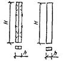
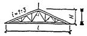
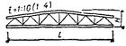
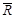
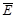
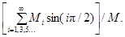
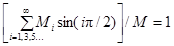
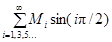
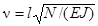
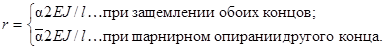

ОРДЕНА ТРУДОВОГО
КРАСНОГО ЗНАМЕНИ
ЦЕНТРАЛЬНЫЙ НАУЧНО-ИССЛЕДОВАТЕЛЬСКИЙ ИНСТИТУТ
СТРОИТЕЛЬНЫХ КОНСТРУКЦИЙ ИМ. В.А. КУЧЕРЕНКО
(ЦНИИСК ИМ. КУЧЕРЕНКО) ГОССТРОЯ СССР
Пособие
по
проектированию
деревянных
конструкций
(к СНиП II-25-80)
Утверждено
приказом по ЦНИИСК им. Кучеренко
от 28 ноября 1983 г. № 372/л
Москва Стройиздат 1986
Рекомендовано к изданию решением секции деревянных конструкций Научно-технического совета ЦНИИСК им. Кучеренко.
Пособие по проектированию деревянных конструкций (к СНиП II-25-80) / ЦНИИСК им. Кучеренко. - М.: Стройиздат, 1986.
Содержит обоснования и разъяснения основных положений норм проектирования деревянных конструкций, дополнительные рекомендации и вспомогательные материалы к ним, сопровождаемые примерами проектирования.
Для инженерно-технических работников проектных и строительных организаций, преподавателей и студентов строительных вузов.
Настоящее Пособие разработано к СНиП II-25-80. В нем даны необходимые разъяснения и обоснования отдельных положений и указаний по расчету деревянных конструкций, приведены рекомендации по проектированию, не получившие отражения в нормах. В частности, это касается особенностей расчета сжато-изгибаемых элементов, связей жесткости, новых типов соединений, технико-экономической оценки конструктивных решений и др.
Пособие охватывает конструкции из цельной и клееной древесины, иллюстрируя положения СНиП II-25-80 на конкретных примерах конструирования и расчета отдельных типов деревянных конструкций. В качестве приложения к пособию, даны некоторые вспомогательные графики, таблицы и другие справочные материалы, необходимые для проектирования.
Пособие разработано отделом деревянных конструкций ЦНИИСК им. Кучеренко Госстроя СССР (канд. техн. наук A.К. Шенгелия - ответственный редактор, кандидаты техн. наук B.И. Аганин, А.Я. Дривинг, И.М. Зотова, Е.М. Знаменский, д-р техн. наук Л.М. Ковальчук, кандидаты техн. наук И.М. Линьков, A.Ф. Михайлов, инженеры А.И. Мезенцев, Р.В. Ннкулихина, кандидаты техн. наук И.Г. Овчинникова, С.Б. Турковский, О.И. Шипков, д-р техн. наук А.С. Фрейдин) при участии ЦНИИпромзданий (канд. техн. наук В.С. Шейнкман), ЦНИИЭП им. Мезенцева (канд. техн. наук С.М. Жак, инж. М.Ю. Заполь, д-р техн. наук B.И. Травуш), ЦНИИЭПсельстроя (кандидаты техн. наук В.П. Деев, Б.А. Степанов, В.И. Фролов), ВНИИдрева (канд. техн. наук Б.Е. Кондратенко), Московского инженерно-строительного института им. В.В Куйбышева (кандидаты техн. наук Н.М. Кузнецова, В.С. Сарычев), Ленинградского инженерно-строительного института (кандидаты техн. наук Е.И. Светозарова, Е.Н. Серов), Брестского инженерно-строительного института (канд. техн. наук Р.Б. Орлович), Пермского политехнического института (канд. техн. наук А.В. Калугин), Курского политехнического института (канд. техн. наук А.С. Прокофьев), Кировского политехнического института (канд. техн. наук Ю.В. Пискунов), Уральского политехнического института им. С.М. Кирова (инж. С.П. Тамакулов).
1.1. Деревянные конструкции следует применять в зданиях и сооружениях сельского, гражданского и промышленного строительства, когда это технически целесообразно и экономически обосновано. При проектировании деревянных конструкций необходимо учитывать: условия эксплуатации, капитальность, степень ответственности и огнестойкость строительного объекта, а также возможности сырьевой и производственной базы, обеспечивающие изготовление конструкций.
В сельском строительстве деревянные конструкции могут применяться в производственных и складских одноэтажных зданиях. В гражданском строительстве целесообразно применение деревянных конструкций в покрытиях залов общественных зданий, выставочных павильонов, в малоэтажном домостроении. В промышленном строительстве деревянные конструкции могут применяться в одноэтажных отапливаемых и неотапливаемых зданиях IV и V классов огнестойкости, а также II и III классов огнестойкости со смешанным каркасом.
В покрытиях по стропильным конструкциям возможна подвеска подъемно-транспортного оборудования грузоподъемностью не выше 32 кН.
1.2. Для всех видов зданий общественного и производственного назначения рекомендуется принимать:
шаг деревянных стропильных балок и ферм, рам и арок 3 и 6 м;
панели и плиты ограждающих конструкций шириной 1,2 и 1,5 м, длиной 3 и 6 м.
Пролеты и шаг несущих деревянных конструкций назначаются с учетом технологических требований, объемно-планировочных решений зданий и сооружений в соответствии с действующими стандартами и нормами проектирования по видам строительства.
1.3. Рекомендуемые схемы плоскостных несущих деревянных конструкций с их основными характеристиками приведены в табл. 1.
1.4. Выбор конструктивной схемы и общая компоновка здания должны обеспечивать необходимую долговечность конструкций при наименьших приведенных затратах. Особое внимание следует уделять обеспечению простого и надежного отвода воды с покрытия, отдавая предпочтение бесфонарным решениям покрытий с наружным водоотводом без перепадов высот парапетов и надстроек, способствующих образованию снеговых мешков, протечек и очагов поражения гнилью. Покрытия с деревянными конструкциями должны быть обязательно вентилируемыми, доступными для осмотра и производства ремонтно-профилактических работ; не должны образовываться мостики холода, особенно в карнизных и коньковых узлах, в швах и сопряжениях несущих и ограждающих конструкций.
1.5. Необходима тесная увязка строительной и технологической частей проекта с целью исключения возможности перегрева и увлажнения конструкций, а также не предусмотренного проектом вибрационного и динамического воздействия на них. К конструкциям не должны подвешиваться или располагаться вблизи них неизолированные горячие трубопроводы, калориферы воздушного отопления.
1.6. При проектировании деревянных конструкций особое внимание должно уделяться условиям эксплуатации по характеристикам температурно-влажностных воздействий, согласно таблице СНиП II-25-80; по степени химической и биологической агрессии, согласно СНиП 2.03.11-85 и СНиП III-19-76. Следует избегать применения деревянных клееных конструкций в зданиях, по условиям эксплуатации которых равновесная влажность древесины оказывается ниже заданной при изготовлении.
1.7. При проектировании конструкций и особенно их узловых соединений следует предусматривать проверку на транспортные и монтажные нагрузки, на чертежах указывать породу, сорт и влажность древесины, места и способы строповки, необходимость (если надо) местного усиления при перевозке, кантовке и подъеме.
1.8. Способы транспортировки, складирования, укрупнительной сборки и монтажа, влияющие на конструктивное решение, защиты деревянных конструкций от коррозии и огня должны быть заранее определены и представлены в проекте производства работ.
1.9. Большое внимание при проектировании следует уделять пространственной жесткости и устойчивости конструкций, обеспечиваемых устройством и постановкой соответствующих связей жесткости.
1.10. Технико-экономическая оценка эффективности конструктивных решений зданий и сооружений с деревянными конструкциями должна производиться по приведенным затратам согласно разд. 7.
Таблица 1
|
Конструктивная схема |
Рекомендуемые пролеты |
Соотношение геометрических параметров |
Коэффициенты |
Примечание |
||
|
металлоемкости Kм, % |
собственного веса Kсв |
|||||
|
Балки: брусчатые составного сечения |
4 - 6 |
h/l = 1/10 ¸ 1/20 |
1 |
7 - 12 |
Соединения на пластинчатых нагелях |
|
|
4 - 6 |
h/l = 1/10 ¸ 1/20 |
3 - 4 |
7 - 12 |
Соединения на вклеенных стержнях |
||
|
клееные прямоугольного постоянного сечения |
9 - 18 |
h/l = 1/10 ¸ 1/15 |
0 - 1,5 |
4 - 6 |
- |
|
|
прямоугольного сечения двухскатная |
9 - 18 |
h/l = 1/10 ¸ 1/12 |
0 - 1,5 |
4 - 6 |
- |
|
|
прямоугольного постоянного и переменного сечения, гнутоклееные |
9 - 18 |
h/l = 1/7 ¸ 1/9 |
1,5 |
4 - 6 |
- |
|
|
клеефанерные двутаврового и коробчатого постоянного и переменного сечения |
9 - 18 |
h/l = 1/9 ¸ 1/12 |
2 |
3 - 5 |
- |
|
|
колонны брусчатые или клееные |
 |
3 - 9 |
h/H = 1/20 ¸ 1/40 |
1 - 10 |
3 - 5 |
Kм зависит от способа закрепления к фундаменту (шарнирное или жесткое) |
|
Фермы: из цельной и клееной древесины дощатые треугольные с соединениями на МЗП |
 |
9 - 15 |
H/l = 1/6 |
15 |
4 - 5 |
МЗП - металлические зубчатые пластины |
|
дощатые трапецеидальные на МЗП |
 |
12 - 18 |
H/l = 1/6 ¸ 1/7 |
15 |
4 - 5 |
Могут применяться с подстропильными фермами |
|
металлодеревянные треугольные безраскосные с верхним поясом из брусьев или клееной древесины |
9 - 18 |
H/l = 1/6 ¸ 1/8 |
20 - 30 |
4 - 6 |
b/h = 1/4 ¸ 1/6 |
|
|
металлодеревянные треугольные с верхним поясом из брусьев или клееной древесины |
15 - 21 |
H/l = 1/6 |
40 |
3 - 4 |
Верхний пояс из брусьев может быть составного сечения |
|
|
линзообразные сборные из клееных элементов на вклеенных стержнях |
18 - 60 |
H/l = 1/7 |
15 |
2 - 3 |
Элементы в узлах соединяются на сварке или болтах |
|
|
треугольные металлодеревянные брусчатые |
9 - 18 |
H/l = 1/6 ¸ 1/5 |
35 - 40 |
4 - 5 |
|
|
|
Рамы из прямолинейных элементов треугольного очертания |
18 - 45 |
h/l = 1/25 ¸ 1/30 |
2 |
3 - 5 |
|
|
|
из прямолинейных элементов с жесткими соединениями ригеля и стоек |
12 - 21 |
hм/l = 1/15 ¸ 1/24 |
3 - 12 |
5 - 7 |
Карнизный узел может соединяться зубчатым шипом. При H > 3,5 м он может быть сборным на вклеенных штырях или нагелях |
|
|
клееные трехшарнирные ломаного очертания |
18 - 45 |
h/l = 1/30 ¸ 1/40 |
1 - 5 |
2 - 4 |
Соединения в местах перелома могут быть сборными с помощью зубчатого шипа или гнутыми |
|
|
брусчатые или клееные с подкосами |
9 - 24 |
- |
3 - 15 |
5 - 7 |
Kм = 15 при металлических стойках |
|
|
гнутоклееные ступенчатого очертания |
18 - 36 |
hоп/l = 1/30 ¸ 1/40 |
2 |
4 - 5 |
hоп/b = 7; hв/b = 5 Уклон 45° для складов |
|
|
клеефанерные с гнутоклееными деталями в карнизах |
12 - 24 |
hк/l = 1/25 ¸ 1/40 |
2 |
5 - 7 |
- |
|
|
двухшарнирные с жестким соединением колонн с фундаментами |
12 - 24 |
- |
- |
- |
Ригель может быть также в виде ферм или арок |
|
|
Арки: клееные трехшарнирные стрельчатого очертания |
12 - 45 |
h/l = 1/30 ¸ 1/40 |
1 - 3 |
2 - 4 |
При H/l ≈ 1/2 арки применяются преимущественно для складов сыпучих материалов |
|
|
коробового очертания |
9 - 24 |
h/l = 1/30 ¸ 1/50 |
1 - 2 |
2 - 4 |
- |
|
|
пологие кругового очертания |
18 - 72 |
H/l = 1/30 ¸ 1/50 |
2 - 5 |
2 - 4 |
При H/l ≥ 1/6 |
|
|
то же, с затяжкой |
12 - 36 |
H/l = 1/30 ¸ 1/40 |
15 |
2 - 4 |
Возможно жесткое сопряжение клееных элементов для двухшарнирного решения |
|
2.1. В несущих и ограждающих деревянных конструкциях применяются: круглый лес, используемый в целом виде; пиломатериалы и клееные заготовки из них; многослойные клееные заготовки из фрезерованных пиломатериалов; листовая многослойная фанера; фанерные трубы; древесные плиты; водостойкие клеи; влагозащитные лаки и составы; антисептики и антипирены; стальной прокат, арматура и др.
2.2. Круглые лесоматериалы следует использовать преимущественно для конструкций, изготавливаемых в построечных и полевых условиях (например, сельскохозяйственные здания с балочно-стоечным каркасом, опоры ЛЭП и др.).
Пиломатериалы являются основными конструкционными лесоматериалами для конструкций из цельной и клееной древесины.
Для многослойных клееных заготовок из древесины сосны и ели наиболее целесообразно применять пиломатериалы толщиной 40 и 25 мм, причем тонкие пиломатериалы следует использовать для изготовления гнутоклееных элементов с ограниченным радиусом кривизны и растянутых элементов; пиломатериалы из осины и лиственницы можно использовать толщиной 25 мм с устройством в них продольных компенсационных прорезей, располагаемых друг от друга на расстоянии 40 мм и не менее чем на 10 - 15 мм от кромки доски. Глубина прорезей должна быть равной 1/2 толщины слоя, ширина 2 - 3 мм.
2.3. Рекомендуемый сортамент приведен в табл. 2.
2.4. Однослойные заготовки из склеенных на зубчатый шип или на зубчатый шип и по кромке маломерных пиломатериалов, предназначенные для использования в несущих элементах деревянных конструкций, должны удовлетворять следующим требованиям: влажность склеиваемых на зубчатый шип пиломатериалов допускается не выше 15 %, размеры зубчатого шипа должны быть не менее чем у типа I-32; клеи только на резорциновой основе (ФР-12 и ФРФ-50); временное сопротивление изгибу при нагружении пласти для клееных заготовок, соответствующих пиломатериалам второго сорта, - не ниже 27 МПа и третьего сорта - не ниже 20 МПа.
Таблица 2
|
Ширина, мм |
Толщина (высота) ми |
Ширина, им |
|||||||
|
100 |
125 |
150 |
175 |
100, |
125 |
150 |
175 |
||
|
19 |
100 |
125 |
150 |
- |
100 |
- |
125 |
150 |
175 |
|
25 |
100 |
125 |
150 |
175 |
150 |
- |
125 |
150 |
175 |
|
40 |
100 |
125 |
150 |
- |
175 |
- |
125 |
- |
175 |
|
50 |
100 |
125 |
150 |
175 |
|
|
|
|
|
|
Примечание. Размеры фрезерованных пиломатериалов устанавливаются с учетом припусков по толщине и ширине, согласно действующим ГОСТам. |
|||||||||
Допустимое количество и место расположения стыков на зубчатый шип по длине несущих элементов из клееных заготовок зависит: от характера их работы, степени ответственности, особенностей конструктивного решения и должно регламентироваться техническими условиями на изготовление с соответствующим обоснованием.
Не допускается использование склеенных на зубчатый шип заготовок из короткомерных пиломатериалов для дощатых балок междуэтажных перекрытий и в растянутых поясах дощатых стропильных ферм.
2.5. В некоторых случаях, особо оговариваемых техническими условиями, при изготовлении деревянных конструкций (например, клеефанерных) может использоваться древесина, модифицированная полимерами и другими составами.
2.6. Фанера относится к слоистым древесным материалам с однонаправленной и перекрестной структурой. В первом случае достигается значительная прочность, но сохраняется высокая степень анизотропии. Во втором случае заметно снижается анизотропия и прочность в двух главных направлениях. Для многослойной листовой фанеры показатели прочности и упругости отличаются по главным осям анизотропии при растяжении, сжатии, изгибе только в 1,5 - 3 раза, а не в 10 - 40 раз, как для древесины в ее натуральном виде.
В ограждающих и несущих конструкциях допускается применение фанеры только на водостойких клеях толщиной не менее 6 мм.
Размеры листовой фанеры приведены в табл. 3.
Таблица 3
|
Размеры листов, мм |
Марка листовой фанеры |
Размеры листов, мм |
|||
|
толщина |
длина, ширина |
толщина |
длина, ширина |
||
|
ФСФ (березовая) |
6, 8, 9, 10, 12 |
1525 ´ 1525 |
ФБС |
7, 10, 12, 11, 16 |
5600 ´ 1200 |
|
1525 ´ 1220 |
4850 ´ 1200 |
||||
|
1220 ´ 1220 |
4400 ´ 1500 |
||||
2.7. В качестве элементов деревянных конструкций допускается применение фанерных труб марок Ф-1 и Ф-2, сортамент и размеры которых указаны в табл. 4.
Таблица 4
|
50 |
100 |
150 |
200 |
250 |
300 |
|
|
Диаметр труб внешний, мм |
63 |
116 |
172 |
222 |
276 |
320 |
|
Толщина стенок, мм |
6,5 |
8 |
11 |
11 |
13 |
13 |
|
Масса 1 м при влажности фанеры 15 %, кг |
1,0 |
2,2 |
4,5 |
5,8 |
8,6 |
10,2 |
|
Длина труб, м |
От 3,5 до 7 |
|||||
2.8. К плитным материалам на основе древесины относятся:
а) древесно-волокнистые плиты сухого способа производства (ДВПс) на фенольных связующих марок Тс-400, Тс-450 (ТУ 13-444-79);
б) древесно-стружечные плиты на карбамидных (ДСПк) и на фенольных связующих (ДСПф) марок П-1 и П-2 (ГОСТ 10632-77 с изм.);
в) древесно-стружечные плиты на каустическом магнезите МДП (ТУ 13-519-79);
г) цементно-стружечные плиты на портландцементе ЦСП.
Технические характеристики древесных плит приведены в табл. 5.
Таблица 5
|
Единица измерения |
Значение показателей для |
|||||
|
ДВПс |
ДСПк |
ДСПф |
МДП |
ЦСП |
||
|
Плотность |
кг/м» |
Св. 850 |
750 - 850 |
700 - 850 |
900 - 1200 |
1200- 1300 |
|
Длина |
мм |
2750 - 3600 |
1830, 3660 |
1830, 3660 |
3600 |
2600 - 3600 |
|
Ширина |
» |
1200 - 1830 |
1200, 1830 |
1220, 1830 |
1220 |
1200 |
|
Толщина |
» |
5 - 10 |
12 - 22 |
10 - 22 |
10 - 18 |
8 - 40 |
|
Влажность |
% |
5 - 8 |
8 ± 2 |
8 ± 2 |
9 ± 4 |
До 12 |
|
Водопоглощение за 24 ч |
» |
30 |
До 15 |
До 15 |
18,26 |
» 16 |
|
Набухание за 24 ч |
» |
20 |
» 5 |
» 5 |
10,15 |
» 1,8 |
2.9. Древесные плиты рекомендуется применять в качестве обшивок в конструкциях панелей стен, плит перекрытий и покрытий с учетом условий эксплуатации.
2.10. Синтетические клеи для изготовления элементов клееных деревянных конструкций делятся на группы, учитывающие назначение клеев, их свойства; рекомендуемые области применения указаны в табл. 6.
2.11. Для склеивания древесины и древесины с фанерой, древесно-волокнистыми и древесно-стружечными плитами должны применяться клеи I - IV групп в зависимости от температурно-влажностных условий эксплуатации, руководствуясь табл. 7.
При возникновении значительных температурно-влажностных напряжений следует применять клей ФРФ-50М (V группа), обладающий повышенной податливостью. Для металлических стержней, вклеиваемых в древесину, должны применяться модифицированные клеи I группы или клеи V группы с учетом условий эксплуатации.
2.12. Состав клеев, технология их приготовления и применение должны отвечать требованиям соответствующих технических условий.
Таблица 6
|
Марка клея |
Группа |
Рекомендуемые области применения |
|
|
Резорциновый |
ФР-12 |
I |
Преимущественно для гражданского строительства, в большепролетных конструкциях при эксплуатации в наиболее жестких условиях |
|
Фенольно-резорциновый |
ФРФ-50 |
I |
Преимущественно для промышленного, сельскохозяйственного строительства, в большепролетных конструкциях при эксплуатации в наиболее жестких условиях |
|
Фенольный |
КБ-3, СФХ |
II |
Преимущественно для сельхозстроительства в конструкциях массового применения, эксплуатируемых в жестких условиях |
|
Алкилрезорциновый |
ФР-100, ДФК-1АМ |
II |
То же |
|
Фенольно-алкилрезорциновый |
ДФК-14Р |
II |
» |
|
Карбамидно-меламиновый |
КС-В-СК |
III |
Для конструкций, эксплуатируемых при относительной влажности воздуха до 85 % |
|
Карбамидный Эпоксидный |
КФ-Ж ЭПЦ-1, К-153 |
IV V |
То же, до 70 % Для соединений деревянных конструкций с вклеенными стальными стержнями |
|
Фенольно-резорциновый модифицированный |
ФРФ-50М |
V |
То же |
Таблица 7
|
Группа клеев |
Типы и марки клеев |
|
|
Для всех условий эксплуатации, кроме Г1, Г2, Г3 |
I |
Резорциновый ФР-12 (ТУ 6-05-1748-75); фенольно-резорциновый ФРФ-50 (ТУ 6-05-1880-79) Алкилрезорциновые ФР-100 (ТУ 6-05-1838-78) и ДФК-1АМ (ТУ 6-05-281-7-75) |
|
II |
Фенольно-алкилрезорциновый ДФК-14Р (ТУ ЭССР 223-41-80) Фенольные КБ-3 и СФХ (на основе смол СФЖ-3016 и СФЖ-3015 (ГОСТ 20907-75 с изм.) |
|
|
Для условий эксплуатации А2 и Б2 |
III |
Карбамидно-меламиновый КС-В-СК (ТУ 6-05-211-1806-79) |
|
Для условий эксплуатации A3 |
IV |
КФЖ, КФБЖ (ГОСТ 14231-78) |
3.1. Основными нормируемыми характеристиками прочности конструкционных строительных материалов является нормативное и расчетное сопротивление, которое определяется на основании данных стандартных испытаний с учетом статистической изменчивости показателей прочности и разной степени обеспеченности (доверительной вероятности) по минимуму. Для нормативного сопротивления Rн предписывается обеспеченность не ниже 0,95, для расчетного сопротивления R пока не нормирована и колеблется в пределах 0,99 - 0,999.
3.2. В СНиП II-25-80 нормативные и расчетные сопротивления древесины и фанеры приняты с обеспеченностью по минимуму соответственно 0,95 и 0,99 при нормальном распределении.
3.3. Особенности структурно-механических свойств древесины и отличие действительных условий и характера ее работы от условий при стандартных испытаниях учитываются введением коэффициентов условий работы по материалу.
Для базовых расчетных сопротивлений, отвечающих нормальным температурно-влажностным условиям эксплуатации (при температуре T ≤ 35 °С и относительной влажности воздуха φ ≤ 75 %), необходимо вводить коэффициент условий работы mдл, учитывающий влияние длительности нагружения с переходом от прочности древесины при кратковременных стандартных испытаниях к ее прочности в условиях длительно действующих постоянных и временных нагрузок за весь срок службы конструкций. Прочности Rпр при стандартных кратковременных испытаниях соответствует значение коэффициента mдл = 1, при более короткой длительности нагружения mдл > 1, а при более продолжительном действии нагрузки mдл < 1.
3.4. Приведение нагрузки, действующей во времени по любому закону, к нагрузке постоянной во времени продолжительностью τпр позволяет при определении коэффициента mдл для древесины использовать зависимость
mдл = 1,03(1 - lg τпр/18,5).
Приведенное время действия расчетной нагрузки для наиболее типичных режимов нагружения и соответствующие им значения коэффициентов mдл приведены в табл. 8.
Таблица 8
|
Расчетное время действия нагрузки τпр, с |
Коэффициент mдл |
Коэффициент условий работы mн |
|
|
Линейно возрастающая нагрузка при стандартных испытаниях |
1 - 10 |
1 |
1,5 |
|
Совместное действие постоянной и длительной временной нагрузок |
108 - 109 |
0,53 |
0,8 |
|
Совместное действие постоянной и кратковременной снеговой нагрузок |
106 - 107 |
0,66 |
1 |
|
Совместное действие постоянной и кратковременной ветровой нагрузок |
103 - 104 |
0,8 |
1,2 |
|
Совместное действие постоянной и сейсмической нагрузок |
10 - 102 |
0,92 |
1,4 |
|
Действие импульсных и ударных нагрузок |
10-1 - 10-6 |
1,1 - 1,35 |
1,7 - 2,0 |
Значение коэффициента, учитывающего влияние длительности нагружения, mдл = 0,66 принято за базисное, и по отношению к нему нормируются расчетные сопротивления для других режимов и сочетаний нагружения путем введения соответствующих переходных коэффициентов условий работы mн = mдл/0,66 к основным расчетным сопротивлениям древесины и фанеры. Расчетное время действия нагрузки τпр находится путем приведения таковой за весь принятый срок службы конструкций к ее максимуму в режиме постоянной нагрузки. Расчетное сопротивление
где γm - коэффициент надежности по материалу, учитывающий отклонение в сторону меньших значений прочности материала с более высокой обеспеченностью по отношению к нормативному сопротивлению.
С учетом (1) получаем
Rн/γm = R/mдл = 
где - кратковременное расчетное сопротивление.
Из условий
с учетом (2) находим
где Rвр - среднее значение временного сопротивления при стандартных испытаниях материала;
ηн и η - множители, зависящие от принятого уровня обеспеченности (доверительной вероятности) и вида функции плотности распределения соответственно для нормативного и расчетного сопротивлений;
v - коэффициент вариации.
Для нормального распределения и обеспеченности по минимуму P = 0,95 ηн = 1,65 и при P = 0,99 η = 2,33. Коэффициент вариации прочности древесины v зависит от вида напряженного состояния и сорта материала; его величина колеблется в пределах 0,15 - 0,25.
3.5. Коэффициент надежности по материалу находится в прямой зависимости от принятых уровней обеспеченности для Rн и R и от изменчивости показателей прочности материала. Степень ответственности здания и сооружения в целом и в отдельных частях должна учитываться введением в формулу (1) коэффициента надежности по назначению γn.
Согласно постановлению Госстроя СССР от 19 марта 1981 г. № 41 «Правила учета степени ответственности зданий и сооружений при проектировании конструкций», предписывается учитывать степень ответственности зданий и сооружений с помощью коэффициента надежности по назначению γn на основании СТ СЭВ 384-76. «Строительные конструкции и основания. Основные положения по расчету». Значения коэффициента надежности по назначению принимаются в зависимости от класса ответственности зданий и сооружений. Правилами предусматриваются три класса ответственности I, II и III; им соответствуют значения γn, равные 1; 0,95 и 0,9, а для временных зданий и сооружений со сроком службы до 5 лет допускается принимать γn = 0,8. С учетом этого коэффициента выражение (1) принимает вид
Расчетные сопротивления древесины и фанеры в табл. 3 и 10 СНиП II-25-80 для зданий и сооружений I, II и III классов ответственности необходимо делить соответственно на 1; 0,95 и 0,9.
3.6. Нормирование расчетных сопротивлений базируется на данных стандартных испытаний крупных образцов из пиломатериалов и круглого леса. Применявшийся ранее на основании результатов стандартных испытаний малых чистых образцов древесины и введения коэффициентов перехода от чистой к натуральной древесине с учетом сортности и размеров сечения лесоматериалов путь нормирования расчетных характеристик следует использовать при отсутствии оборудования для испытания крупных образцов. В этом случае для перехода от нормативного сопротивления чистой древесины Rнч к Rн используется условие
где
Rвр.ч - среднее значение временного сопротивления малых чистых образцов при стандартных испытаниях;
vч - коэффициент вариации прочности чистой древесины;
Kп - переходный коэффициент, учитывающий влияние пороков на прочность древесины;
Kр - переходный коэффициент, учитывающий влияние размеров рабочего сечения на прочность древесины.
Тогда
γm ≥ (1 - ηнvч)/(1 - ηvч). (9)
3.7. Влияние на прочность материала условий эксплуатации и особенностей работы, отличающихся от принятых для базовых расчетных сопротивлений, учитывается умножением последних на соответствующие коэффициенты условий работы по материалу, указанные в главе СНиП II-25-80. К ним относятся: коэффициенты mв и mт, отражающие влияние температурно-влажностных условий эксплуатации; коэффициенты mд и mн, отражающие влияние характера и режима нагружения; коэффициенты mб и mсл, отражающие влияние размеров сечения и его составных частей; коэффициенты mгн и m0, отражающие влияние начальных напряжений, концентрации напряжений; коэффициент ma, учитывающий снижение прочности древесины при пропитке некоторыми защитными составами.
Совместное действие нескольких независимых условий работы оценивается перемножением соответствующих им коэффициентов. Для базовых расчетных сопротивлений mв = mт = 1.
3.8. Величины расчетных сопротивлений цельной древесины и однослойной клееной древесины из пиломатериалов определяются на основании данных испытаний в соответствии с указаниями СНиП II-25-80, прил. 2.
3.9. При нормировании расчетных сопротивлений многослойной клееной древесины из пиломатериалов надо иметь в виду ряд факторов, присущих композиции древесина - клей. Слоистая структура данной композиции способствует рассредоточению пороков, а, следовательно, повышению прочности вдоль волокон клееной древесины по сравнению с цельной при одинаковом качестве исходного материала. Однако из-за различия ориентации годичных колец, влажности соседних слоев и вследствие колебаний температурно-влажностного режима окружающего воздуха при эксплуатации происходят процессы перераспределения и выравнивания или циклических колебаний равновесной влажности. Они вызывают стесненные деформации усушки и разбухания и приводят к образованию собственных внутренних нормальных и касательных напряжений поперек волокон. Эти напряжения достигают наибольших значений в зоне, прилегающей к клееной прослойке, и усугубляются локальной концентрацией собственных и действующих от внешней нагрузки напряжений в местах с резко выраженной неоднородностью структуры композиции древесина - клей, из-за сучков, непроклея и других дефектов, добавочными напряжениями от усадки клеевой прослойки.
Влияние отмеченных факторов на прочность клееной древесины для разных видов ее напряженного состояния неодинаково. Наибольшую опасность они представляют для растяжения поперек волокон и для сложного напряженного состояния сдвига вдоль и поперек волокон с растяжением поперек волокон, угрожая расслоению такого рода композиции. Отмеченные как положительные, так и отрицательные стороны механических свойств клееной многослойной древесины требуют учета при нормировании расчетных сопротивлений. Для изгиба, растяжения и сжатия вдоль волокон определяющее значение имеют положительные факторы, повышающие прочность материала, а для растяжения поперек волокон и для скалывания при изгибе - отрицательные факторы, снижающие прочность материала.
Величины расчетных сопротивлений многослойной клееной древесины устанавливаются на основании данных испытаний:
на изгиб, сжатие, скалывание вдоль волокон клееных образцов из слоев толщиной 33 мм с общей высотой сечения 500 мм и для модельных образцов 165 мм при ширине сечения 140 мм;
на растяжение вдоль волокон клееных образцов из двух слоев толщиной по 19 и по 33 мм.
В дополнение к табл. 8 СНиП II-25-80 для слоев толщиной 16 и 12 мм коэффициент mсл следует принимать соответственно 1,15 и 1,2. Если прочность клеевых соединений на зубчатый шип в слоях ниже временного сопротивления изгибу и растяжению вдоль волокон пиломатериалов 1-го сорта, то расчетное сопротивление клееной древесины нормируется по прочности клеевого соединения на зубчатый шип.
3.10. Условия (1), (3) и (5) по п. 3.4 для определения нормативного и расчетного сопротивлений справедливы при большом числе испытаний. В случае ограниченной выборки в эти условия необходимо вводить добавочный множитель к ηн и η, учитывающий надежность суждения и число испытаний в выборке (см. СНиП II-25-80, прил. 2, примеч. к табл., п. 2).
3.11. В изгибаемых и сжато-изгибаемых элементах из многослойной клееной древесины при формировании слоев по высоте сечения используются пиломатериалы разного сорта или разных пород. В этом случае требуется, чтобы переход от зоны одного сорта к зоне другого удовлетворял условию σ1/σ2 ≥ R1/R2 при R1 > R2,
где σ1 - краевое напряжение;
σ2 - промежуточное напряжение на границе слоев разного сорта;
R1, R2 - расчетные сопротивления древесины более высокого и более низкого сортов.
Для изгибаемых, сжатых и сжато-изгибаемых элементов из склеенных по длине на зубчатый шип сосновых и еловых однослойных заготовок пиломатериалов, удовлетворяющих в отношении древесины требованиям разд. 2, расчетные сопротивления следует принимать по СНиП II-25-80, табл. 3, п. 1а соответственно по 2-му и 3-му сортам.
Таблица 9
|
Сорт древесины |
Rвр, МПа |
v |
Rн, МПа |
γm |
R, МПа |
|
|
Изгиб |
|
|
|
|
|
|
|
Элементы из пиломатериалов |
1 |
36 |
0,17 |
26 |
1,22 |
14 |
|
2 |
33 |
24 |
1,22 |
13 |
||
|
3 |
22 |
16 |
1,25 |
8,5 |
||
|
Элементы брусчатые и клееные шириной свыше 13 см |
1 |
37,5 |
0,15 |
28 |
1,15 |
16 |
|
2 |
35 |
26 |
1,15 |
15 |
||
|
3 |
25 |
19 |
1,14 |
11 |
||
|
Сжатие вдоль волокон |
|
|
|
|
|
|
|
Элементы из пиломатериалов |
1 |
33 |
0,15 |
25 |
1,18 |
14 |
|
2 |
31 |
23 |
1,17 |
13 |
||
|
3 |
20 |
15 |
1,17 |
8,5 |
||
|
Элементы брусчатые и клееные шириной св. 13 см |
1 |
34,5 |
0,13 |
27 |
1,12 |
16 |
|
2 |
32 |
25 |
1,11 |
15 |
||
|
3 |
23,5 |
18,5 |
1,11 |
11 |
||
|
Растяжение вдоль волокон |
|
|
|
|
|
|
|
Элементы из цельной древесины |
1 |
34 |
0,24 |
20 |
1,32 |
10 |
|
2 |
25 |
15 |
1,4 |
7 |
||
|
Элементы из клееной древесины |
1 |
34 |
0,2 |
23 |
1,27 |
12 |
|
2 |
25 |
17 |
1,25 |
9 |
||
|
Сжатие и смятие поперек волокон по всей площади |
1 - 3 |
5 |
0,19 |
3,4 |
1,25 |
1,8 |
|
Скалывание вдоль волокон: |
|
|
|
|
|
|
|
При изгибе элементов из цельной древесины |
1 2, 3 |
6 5 |
0,23 |
3,6 3,2 |
1,3 1,3 |
1,8 1,6 |
|
При изгибе клееных элементов |
1 |
4,5 |
0,17 |
3,2 |
1,3 |
1,6 |
|
2, 3 |
4,2 |
3 |
1,3 |
1,5 |
||
|
Растяжение поперек волокон элементов из клееной древесины |
1 |
1 |
0,25 |
0,8 |
1,5 |
0,35 |
|
2 |
1,2 |
0,7 |
1,5 |
0,3 |
||
|
3 |
1 |
0,6 |
1,6 |
0,25 |
Таблица 10
|
Rвр, МПа |
v |
Rнч, МПа |
KпKр |
Rн, МПа |
γm |
R, МПа |
|
|
Фанера клееная березовая марки ФСФ, сортов В/ВВ, ВВ/С, В/С, толщиной 8 мм и более |
|||||||
|
Растяжение «в» |
63 |
0,17 |
40 |
0,55 |
25 |
1,2 |
14 |
|
То же, «п» |
50 |
0,23 |
31 |
0,55 |
17 |
1,25 |
9 |
|
Сжатие «в» |
35 |
0,13 |
28 |
0,72 |
19 |
1,1 |
12 |
|
То же, «п» |
28 |
0,13 |
22 |
0,66 |
15 |
1,15 |
8,5 |
|
Изгиб из плоскости листа «в» |
68,5 |
0,15 |
52 |
0,55 |
28 |
1,15 |
16 |
|
То же, «п» |
36 |
0,17 |
26 |
0,45 |
12 |
1,2 |
6,5 |
|
Скалывание «в» |
4,5 |
0,2 |
3 |
0,53 |
1,6 |
1,3 |
0,8 |
|
То же, «п» |
4,7 |
0,2 |
3,2 |
0,5 |
1,6 |
1,3 |
0,8 |
|
Срез перпендикулярно плоскости листа «в» |
15,5 |
0,1 |
13 |
0,77 |
10 |
1,1 |
6 |
|
То же, «п» |
16 |
0,1 |
13 |
0,77 |
10 |
1,1 |
6 |
|
Фанера клееная из древесины лиственницы марки ФСФ, сортов В/ВВ и ВВ/С, толщиной 8 мм и более |
|||||||
|
Растяжение «в» |
42 |
0,2 |
28 |
0,6 |
17 |
1,25 |
9 |
|
То же, «п» |
35 |
0,2 |
23 |
0,6 |
14 |
1,25 |
7,5 |
|
Сжатие «в» |
48 |
0,15 |
36 |
0,8 |
30 |
1,15 |
17 |
|
То же, «п» |
40 |
0,15 |
30 |
0,8 |
24 |
1,15 |
13 |
|
Изгиб из плоскости листа «в» |
52 |
0,2 |
35 |
1 |
35 |
1,25 |
18 |
|
То же, «п» |
32 |
0,2 |
21 |
1 |
20 |
1,25 |
11 |
|
Скалывание «в» |
1,8 |
0,24 |
1,1 |
1 |
1,1 |
1,45 |
0,6 |
|
То же, «п» |
1,6 |
0,24 |
1 |
1 |
1 |
1,3 |
0,5 |
|
Срез перпендикулярно плоскости листа «в» |
18 |
0,23 |
11 |
1 |
11 |
1,45 |
5 |
|
То же, «п» |
18 |
0,23 |
11 |
1 |
11 |
1,45 |
5 |
|
Примечание. «в» - вдоль волокон; «п» - поперек волокон наружных слоев шпона. |
|||||||
Таблица 11
|
Внутренний диаметр трубы, см |
Расчетные сопротивления, МПа |
Марка трубы |
Внутренний диаметр трубы, см |
Расчетные сопротивления, МПа |
|||
|
растяжению и сжатию вдоль оси |
изгибу |
растяжению и сжатию вдоль оси |
изгибу |
||||
|
Ф-1 |
5 - 15 |
25 |
20 |
Ф-2 |
5 - 15 |
20 |
15 |
|
20 - 30 |
25 |
15 |
20 - 30 |
15 |
10 |
||
Однослойные клееные заготовки из пиломатериалов не ниже 2-го сорта допускается применять во второстепенных малонагруженных растянутых элементах с напряжениями, не превышающими 5 МПа.
3.12. Расчетные сопротивления водостойкой и бакелизированной листовой фанеры, древесных плит следует нормировать по данным испытаний стандартных образцов, используя условия (1), (6), (9) и принимая коэффициент mдл для фанеры такой же, как и для древесины.
В таблицах 9 и 10 представлены необходимые данные по нормированию расчетных сопротивлений древесины сосны и ели, а также многослойной фанеры из березы и лиственницы, при этом принимается mдл = 0,66.
Расчетные сопротивления березовой фанеры ФСФ растяжению вдоль волокон наружных слоев, стыкованной «на ус» клеями ФР-12 и ФРФ-50, при изгибе в плоскости листа (например, в стенках балок и рам двутаврового и коробчатого сечений) умножаются на коэффициент условий работы mф = 0,8, а модуль упругости Eф повышается на 20 % по сравнению с его значением по табл. 11 СНиП II-25-80.
3.13. Расчетные сопротивления для фанерных труб следует принимать с учетом их диаметра и марки по табл. 11.
3.14. Прочностные и упругие характеристики древесных плит (ДВПс, ДСПк, ДСПф, ЦСП и МДП) должны определяться по действующим стандартам на методы испытаний плит.
3.15. Нормативные сопротивления древесных плит определяются с обеспеченностью 0,95 по формуле
Rн = Rвр(1 - 1,65v),
а расчетные сопротивления с обеспеченностью 0,99 по формуле
R = RнKрmдл/γm,
где γm = (1 - 1,65v)/(1 - 2,33v), Kр = 0,8.
Значения Rвр, Rн и R представлены в табл. 12.
Таблица 12
|
Rвр, МПа |
v |
mдл |
γm |
Rн, МПа |
R, МПа |
||
|
Изгиб |
|||||||
|
ДВПс |
56,3 |
0,123 |
0,53 |
1,12 |
44,9 |
14 |
|
|
ДСПк, ДСПф |
21,6 |
0,16 |
0,58 |
1,17 |
16 |
5,76 |
|
|
цсп |
14 |
0,058 |
0,64 |
1,05 |
12,7 |
6,17 |
|
|
мдп |
11,4 |
0,115 |
0,64 |
1,11 |
9,2 |
4,26 |
|
|
Растяжение |
|||||||
|
ДВПс |
23,6 |
0,171 |
0,54 |
1,19 |
17 |
6,15 |
|
|
ДСПк, ДСПф |
9,39 |
0,112 |
0,52 |
1,10 |
7,7 |
3 |
|
|
цСП |
4,13 |
0,159 |
0,64 |
1,17 |
3,1 |
1,35 |
|
|
МДП |
4,59 |
0,153 |
0,64 |
1,16 |
3,4 |
1,5 |
|
|
Сжатие |
|||||||
|
ДВПс |
25,06 |
0,158 |
0,55 |
1,17 |
18,5 |
7 |
|
|
ДСПк, ДСПф |
16,98 |
0,115 |
0,53 |
1,11 |
13,8 |
5,26 |
|
|
ЦСП |
13,93 |
0,142 |
0,57 |
1,15 |
10,7 |
4,23 |
|
|
МДП |
9,13 |
0,145 |
0,57 |
1,15 |
7 |
2,76 |
|
|
Срез |
|||||||
|
ДВПс |
19,05 |
0,099 |
0,54 |
1,09 |
16 |
6,32 |
|
|
ДСПк, ДСПф |
9,09 |
0,182 |
0,54 |
1,22 |
6,4 |
2,25 |
|
|
ЦСП |
8,77 |
0,232 |
0,62 |
1,34 |
5,4 |
2 |
|
|
МДП |
7,76 |
0,2 |
0,62 |
1,20 |
5,2 |
2,05 |
|
|
Скалывание |
|||||||
|
ДВПс |
2,1 |
0,266 |
0,54 |
1,48 |
1,2 |
0,34 |
|
|
ДСПк, ДСПф |
2,76 |
0,191 |
0,54 |
1,23 |
1,9 |
0,66 |
|
|
ЦСП |
3,27 |
0,196 |
0,62 |
1,25 |
2,2 |
0,87 |
|
|
МДП |
3,28 |
0,168 |
0,62 |
1,19 |
2,4 |
0,99 |
|
3.16. Модули упругости древесных плит E (табл. 13) нормируются по средним величинам кратковременных испытаний с учетом влияния ползучести материала на основании условия
E = EврKрmдл.E,
где Eвр - кратковременный модуль упругости;
mдл.E - коэффициент, учитывающий приращение деформаций по времени при длительном нагружении.
Кратковременные и расчетные значения модуля сдвига G и коэффициента поперечной деформации μ указаны в табл. 14.
3.17. В зависимости от условий эксплуатации конструкций расчетные сопротивления древесных плит умножаются на коэффициенты условий работы материалов mв, приведенные в табл. 15.
Таблица 13
|
Eвр, МПа |
v |
mдл.E |
E, МПа |
|
|
Изгиб |
||||
|
ДВПс |
6206 |
0,117 |
0,42 |
2085 |
|
ДСПк, ДСПф |
3600 |
0,147 |
0,43 |
1238 |
|
ЦСП |
5091 |
0,204 |
0,47 |
1914 |
|
МДП |
3336 |
0,16 |
0,47 |
1254 |
|
Растяжение |
||||
|
ДВПс |
5098 |
0,127 |
0,43 |
1754 |
|
ДСПк, ДСПф |
3314 |
0,172 |
0,46 |
1220 |
|
ЦСП |
7494 |
0,158 |
0,42 |
2518 |
|
МДП |
4309 |
0,255 |
0,42 |
1448 |
|
Сжатие |
||||
|
ДВПс |
5152 |
0,166 |
0,45 |
1855 |
|
ДСПк, ДСПф |
3521 |
0,149 |
0,45 |
1268 |
|
ЦСП |
7343 |
0,127 |
0,47 |
2761 |
|
МДП |
3961 |
0,285 |
0,47 |
1489 |
Таблица 14
|
Gвр, МПа |
G, МПа |
μ |
Материалы |
Gвр, МПа |
G, МПа |
μ |
|
|
ДВПс |
2067 |
711 |
0,24 |
ЦСП |
3066 |
1104 |
0,21 |
|
ДСПк, ДСПф |
1389 |
478 |
0,23 |
МДП |
1709 |
615 |
0,21 |
Таблица 15
|
Температурно-влажностные условия эксплуатации конструкций по СНиП II-25-80 |
Коэффициент условий работы |
||||
|
ДВПс |
ДСПк |
ДСПф |
ЦСП |
МДП |
|
|
А1, Б1 |
1 |
1 |
1 |
1 |
1 |
|
А2, Б2 |
0,7 |
0,6 |
0,8 |
0,9 |
0,9 |
|
А3, Б3 |
0,6 |
Не допускается |
0,4 |
0,7 |
0,6 |
|
Б1, Б2, Б3 |
0,4 |
» |
Не допускается |
0,6 |
0,5 |
3.18. Приведенные в табл. 12 - 15 значения расчетных сопротивлений, модулей упругости и коэффициентов условий работы для древесных плит, в особенности цементно-стружечных, являются предварительными, и подлежат уточнению.
4.1. В расчетах
элементов на прочность по деформированной схеме и на устойчивость используются
параметры жесткости EJ, GJ и
безразмерный параметр в виде отношения кратковременного модуля упругости 
Такой подход надо рассматривать как известное допущение. На самом деле названные факторы оказывают некоторое влияние, изменяя значения /Rвр преимущественно в большую сторону. Данный параметр используется при определении коэффициента продольного изгиба φ, коэффициента устойчивости плоской формы формирования при поперечном изгибе φм. В последнем случае учитывается сопротивление сжатию при изгибе, которое выше, чем при центральном сжатии, и для древесины /Rп.вр = 200 - 250, в нормах для поперечного изгиба принято - 200.
Расчетное критическое напряжение Rкр = φRс отличается от временного критического напряжения Rвркр = φRвр. В ряде случаев критические напряжения приходится выражать не в функции φ, а непосредственно через жесткость EJ.
Из равенств
Rвркр = φRвр = π2J/[(μl)2F],
Rкр = φRс = π2E'J/[(μl)2F]
находим соотношения
Rвркр/Rкр = Rвр/Rс = /E',
откуда для древесины E'/Rс = /Rвр = 300 и E' = 300Rс, соответственно для фанеры E'ф = 250Rф.с. Следовательно, надо различать нормируемые значения модулей упругости древесины и фанеры при расчете: по предельным состояниям первой группы E', G'; по предельным состояниям второй группы E, G.
В первом случае применяются вероятные минимальные значения модулей упругости с обеспеченностью не ниже 0,99; во втором случае - средние значения.
Величины модуля упругости зависят не только от скорости и длительности нагружения, температурно-влажностных условий эксплуатации, но также от породы и сорта лесоматериалов. При расчете по второй группе предельных состояний значение модуля упругости E в СНиП II-25-80 принято одинаковым независимо от породы и сорта древесины, однако в будущем необходима его дифференциация.
4.2. Упругопластическая работа древесины появляется в сжатых элементах и учитывается при их расчете на устойчивость. Расчет же растянутых, изгибаемых и сжато-изгибаемых элементов на прочность и на устойчивость плоской формы деформирования производится по упругой стадии работы, так как для клееной и тем более цельной древесины характерным является локальное хрупкое разрушение из-за наличия природных пороков и дефектов, вызывающих концентрацию напряжений.
4.3. Влияние начальных эксцентриситетов и погнутости элементов дополнительно не учитывается, так как децентровка, вызванная наличием в допустимых пределах кромочных сучков и косослоя, перекрывает такого рода отклонения от расчетной схемы и принимается во внимание при назначении расчетных сопротивлений древесины.
4.4. Типичными формами деревянных элементов переменного прямоугольного и двутаврового сечений являются центрально-сжатые, изгибаемые и сжато-изгибаемые дощатоклееные и клеефанерные стержни, у которых изменение высоты сечения подчиняется линейной зависимости от длины, а ширина прямоугольного сечения и площадь поясов двутаврового сечения остаются постоянными.
В расчетах таких элементов на устойчивость при центральном сжатии и при изгибе приходится использовать момент инерции эквивалентного стержня постоянного сечения, выраженный в виде произведения момента инерции в максимальном сечении соответственно на коэффициенты KжN и KжM в формулах (16) и (22) СНиП II-25-80, учитывающие переменность сечения. Величина коэффициента KжN зависит от плоскости, в которой производится проверка устойчивости, и от условий закрепления стержня по концам, а коэффициента KжM - от формы эпюры моментов по длине lр.
При отсутствии промежуточных закреплений растянутой и сжатой кромок из плоскости изгиба расчетная длина lр в формуле (23) СНиП II-25-80 равна всему пролету l закрепленного по концам элемента.
В случае закрепления только сжатой кромки в промежуточных точках числом m при равном шаге расчетная длина lр = l/(m + 1). Форму эпюры моментов и переменность Сечения (коэффициент KжM) в этом случае следует учитывать в пределах участка пролета lр, принимая при m ≥ 4 коэффициент KжM = 1. В случае закрепления только растянутой кромки в промежуточных точках числом m расчетная длина lр = l; форма эпюры моментов и переменность сечения (коэффициент KжM) при этом должны приниматься для всего пролета. Формулы для определения коэффициентов KжN и KжM получены путем аппроксимации точных решений.
4.5. Для сжато-изгибаемых элементов переменного сечения при их расчете по деформированной схеме в формуле (30) п. 4.17 СНиП II-25-80 φ умножаются на KжN, а Fбр заменяется на Fмакс; при проверке устойчивости плоской формы деформирования по формуле (33) п. 4.18 СНиП II-25-80 φ и φм умножаются соответственно на KжN и KжM. Коэффициенты KжN и KжM в качестве множителей к φ и φм, а не к моменту инерции J введены для удобства счета, не искажая конечных результатов, потому что
φмакс = π2Jмакс/(l2FмаксRвр) = 3000Jмакс/(l2Fмакс),
φрасч = 3000JмаксKжN/(l2Fмакс) = φмаксKжN,
аналогичное преобразование можно осуществить для φм.
Отсюда следует, что максимальным значением φ и φм соответствуют и максимальные значения Fмакс и Wмакс в формулах (16), (22) и (33) СНиП II-25-80.
4.6. При определении опасного сечения в элементах, рассчитываемых на прочность, должны учитываться некоторые общие правила, касающиеся стержней и постоянного и переменного сечения.
Растянутые элементы постоянного сечения с несимметричным ослаблением следует центрировать по сечению нетто с его проверкой на центральное растяжение по Fнт с введением коэффициента условий работы m0 = 0,8, учитывающим концентрацию напряжений, а сечение брутто должно быть проверено на внецентренное растяжение по формуле
Nр/Fбр + NрeRр/(WбрRи) ≤ Rр,
где для прямоугольного сечения эксцентриситет e = hвр/2;
Nр - растягивающее усилие;
hвр - глубина ослабления односторонней врезкой.
В изгибаемых и сжато-изгибаемых элементах переменной высоты опасное сечение, в котором возникают максимальные нормальные напряжения, не совпадает с положением максимального изгибающего момента. Оно определяется аналитически по экстремальному значению функции напряжений в крайнем волокне по длине стержня.
Когда в сжато-изгибаемом элементе максимальный момент из расчета по деформированной схеме и максимальный момент из расчета по недеформированной схеме не совпадают (рис. 1), необходима проверка напряжений в обоих сечениях.
В клееных элементах переменного сечения не следует допускать ослабления сечения по кромкам, а ограниченные местные ослабления от соединительных креплений при определении места опасного сечения могут не учитываться.
4.7. На рисунках 2 и 3 показаны примеры компоновки поперечного сечения элементов деревянных конструкций соответственно из цельной и клееной древесины. Многослойные дощатоклееные элементы, формируемые из горизонтальных слоев, предпочтительнее проектировать прямоугольного сечения. Такая форма отвечает требованиям технологичности, более высокой огнестойкости и меньшей опасности расслоения.
Рис. 1. Эпюры моментов сжато-изгибаемого элемента из расчета по деформированной и недеформированной схемам
Рис. 2. Примеры компоновки поперечного сечения элементов из цельной древесины
Рис. 3. Примеры компоновки поперечного сечения элементов из клееной древесины
Прямоугольное сечение может формироваться из слоев: одной породы и сорта, одной породы и разного сорта, разных породы и сорта. Если во всех названных сочетаниях средние значения плотности и модуля упругости используемой древесины оказываются близкими, то такое сечение в отношении расчета можно рассматривать как однородное. Если же названные условия не соблюдаются, необходимо в расчетах использовать приведенные значения геометрических характеристик. Приведение осуществляется по модулю упругости к тому из материалов, в котором проверяются напряжения. При компоновке поперечных сечений следует использовать:
в растянутых и сжатых (при гибкости λ < 60) клееных элементах пиломатериалы только одной породы и одного сорта;
в изгибаемых, сжато-изгибаемых и сжатых (при гибкости λ ≥ 60) клееных элементах пиломатериалы двух сортов, двух пород или разных сортов и пород; в этом случае в крайних зонах на 0,15h следует применять более высокопрочные пиломатериалы, а в средней зоне на 0,7h менее прочные пиломатериалы.
Как правило, формирование более высокопрочных слоев в крайних зонах принимается симметричным. Применять в многослойном прямоугольном сечении более двух разновидностей пиломатериалов не следует.
Для наиболее ответственных растянутых элементов сквозных конструкций из клееной и цельной древесины рекомендуется использовать пиломатериалы 1-го сорта, а для сжатых, изгибаемых и сжато-изгибаемых элементов конструкций массового применения - пиломатериалы 2-го и 3-го сортов. В малонапряженных и второстепенных элементах, кроме того, могут применяться пиломатериалы без сердцевины из мягких лиственных пород.
4.8. В растянутых элементах соотношение высоты прямоугольного сечения h и ширины b обусловлено конструктивными соображениями, сортаментом пиломатериалов и требованиями унификации. В сжатых элементах помимо этого приходится учитывать условия их закрепления в двух плоскостях. В изгибаемых и сжато-изгибаемых элементах, когда потеря устойчивости плоской формы изгиба исключается, наиболее экономичным из условий оптимизации является сечение минимально допустимой ширины.
При необходимости учета устойчивости плоской формы деформирования подлежат оптимизации безразмерные параметры b/h и lр/h, где lр - расчетная свободная длина элемента.
4.9. В элементах двутаврового и коробчатого сечений (см. рис. 2 и 3) в первом приближении целесообразно задаваться толщиной стенки δ, шириной поясов bп и отношением высоты балки в осях поясов h0 к пролету l, определяя необходимую площадь сечения поясов, а затем их высоту, задаваясь шириной.
4.10. В дощатоклееных элементах неоднородного прямоугольного сечения (рис. 4), когда его размеры постоянны, проверку напряжений следует производить, используя приведенные характеристики по формулам:
при расчете на устойчивость в случае центрального сжатия
N/(φпр1Fпр1) ≤ Rс1, где φпр1 = 3000/λ2пр1 и λпр1 = l0/rпр1;
при расчете на прочность в случае изгиба
M/Wпр1 ≤ Rи1; Mh0/(Wпр2h) ≤ Rи2; QSпр2/(Jпр2b) ≤ Rск2;
Рис. 4. Эпюры нормальных и касательных напряжений неоднородного прямоугольного сечения
при расчете на устойчивость плоской формы деформирования в случае изгиба
M/(φMпр1Wпр1) ≤ Rи1,
где
φMпр1 = φмh2[h0 + E'1(h - h0)/E'2]/[h03 + E'1(h3 - h03)/E'2];
а φм и Kпм определяются по п. 4.14 СНиП II-25-80.
4.11. При расчете сжато-изгибаемых элементов на прочность по краевым напряжениям учитывается добавочный момент в деформируемом стержне от продольной сжимающей силы Nс в упругой постановке решения данной задачи. Расчетный деформационный изгибающий момент Mд при этих условиях равен сумме моментов от поперечной нагрузки и продольной силы Mд = M + Nсfд, где fд - полный прогиб от действия M и Nс.
В случае симметричного изгиба шарнирно закрепленного по концам стержня, нагруженного синусоидальной или распределенной (с допустимой погрешностью) поперечной нагрузкой, справедлива известная зависимость fд = f/(1 - Nс/Nэ), f = M/Nэ, откуда fд = M/(Nэ - Nс), соответственно
Mд = M + NсM/(Nэ - Nс) = M[1 - Nс/(Nэ - Nс)] = M/(1 - Nс/Nэ) = M/ξ,
где Nэ - критическая сжимающая сила по Эйлеру и
ξ = 1 - Nэ/Nэ = 1 - Nс/(φ0RсFбр).
Соответственно в формуле (30) СНиП II-25-80 для любой гибкости φ определяется по формуле (8) СНиП II-25-80 φ = 3000/λ2 и может быть больше единицы. После подстановки выражения для φ в (30) получим ξ = 1 - λ2N/(3000RсFбр).
Для шарнирно закрепленного по концам сжато-изгибаемого стержня постоянного сечения при симметричной нагрузке из общего решения дифференциального уравнения изогнутой оси в тригонометрических рядах имеем
где Mi - коэффициенты в формуле разложения эпюры моментов M от поперечной нагрузки
Если учесть, что
1 + Nс/(Nэi2 - Nс) = 1/(1 - Nс/Nэi2) и Nс/Nэ = 1 - ξ, то
Представим
Mд = βнM/ξ,
где
Из анализа знаменателей членов данного ряда следует, что для
i = 1 1 - (1 - ξ)/i2 = ξ, а для i ≥ 3 1 - (1 - ξ)/i2 ≈ 1,
где из (13) получаем
βн = (M1/M)
+ ξ 
Обозначим
M1/M
= m, а так как 
то
(1/M) 
откуда с учетом (14) получаем
Таблица 16
|
αн = 1,62 |
αн = 0,81 |
αн = 1,22 |
αн = 2,44/(3 - 4а2/l2) |
αн ≈ 1 |
|
m = 2/π |
m = 4/π |
m = 8/π2 |
m = 4lsin (aπ/l)/(π2а) |
m = 32/π3 |
Для определения величины деформационного момента Mд вместо формулы Mд = βнM/ξ, в которой коэффициент, учитывающий схему поперечной нагрузки, введен в числитель, в нормах соответствующий коэффициент перенесен в знаменатель и принята формула
где коэффициент Kн = αнξ(1 - αн) вводится прямым образом к ξ, что логичнее.
Выражение для Kн по структуре аналогично выражению для βн. Значения самих коэффициентов m и α (табл. 16), βн и Kн связаны между собой αн ≈ 1/m; Kн ≈ 1/βн. Коэффициенты αн и Kн находятся из приближенной зависимости с погрешностью, не превышающей 3 % для αн и 1,5 % - для Кн.
4.12. При разложении несимметричной нагрузки на симметричную C и кососимметричную K составляющие, соответствующие им формы деформирования, выражаются в виде одной и двух полуволн с гибкостями λс = l/r, λк = l/(2r) и одинаковой сжимающей силой Nс для определения коэффициентов ξс и ξк.
Здесь l - длина всего стержня, шарнирно закрепленного по концам;
r - радиус инерции поперечного сечения в плоскости деформирования.
Рис. 5. Пример разложения несимметричной схемы нагружения на симметричную и кососимметричную
Рис. 6. Расчленение разнозначной эпюры моментов
Если коэффициенты αнс ≠ 1 и αнк ≠ 1, то формула (32) СНиП II-25-80 принимает следующий вид
Mд = Mс/(Kнсξс) + Mк/(Kнкξк). (17)
Когда в пределах каждой половины кососимметричного нагружения сохраняется асимметрия, производить дальнейшее разбиение на C и K не следует, так как возникающая при этом погрешность незначительна.
Пример разложения несимметричной схемы нагружения на C и K показан на рис. 5, значения коэффициентов αнс и αнк приняты по табл. 16. При разнозначной эпюре моментов она расчленяется на плюсовую и минусовую, а затем, если одна из них или обе несимметричные, производится их разделение на C и K (рис. 6.)
4.13. Для решения задачи в случае постоянной сжимающей силы по длине стержня, шарнирно закрепленного по концам, применим принцип суперпозиции. Значение момента M для расчетного сечения в пролете при этом условии выражается в виде алгебраической суммы его составляющих
Сжимающая осевая сила N при шарнирном закреплении стержня по концам не влияет на величины опорных моментов и они не будут изменяться.
Для расчетной схемы по рис. 6 момент в пролете
Mд = -M1/(Kн1ξс) + M2(l/2 - x)/(Kн2ξкl/2) + Mx/(Kизξс),
где
M1 = (MА + MВ)/2, MА > MВ; M2 = (MА - MВ)/2;
Mx = qx(l - x)/2;
используя формулу (31) СНиП II-25-80 и коэффициенты из табл. 16, находим
Kн1 = 0,81 + 0,19ξс; Kн2 = 1,62 - 0,62ξк; Kиз ≈ 1;
ξс = 1 - λ2сN/(3000RсF); ξк = 1 - λ2кN/(3000RсF);
λс = l/r = 2λк.
4.14. При расчете сжато-изгибаемых стержней, заделанных одним или обоими концами, необходимо учитывать упругость их защемления. Это объясняется невозможностью обеспечить для деревянных элементов жесткое защемление из-за возникающих напряжений смятия поперек волокон и соответствующих им больших деформаций, а также других причин, приводящих к повороту торцового сечения. Данное обстоятельство учитывается при расчете на устойчивость центрально сжатых элементов путем увеличения значений коэффициента μ0 (см. п. 4.21 СНиП II-25-80).
Опорные моменты в стержне i - j с упругим защемлением обоих концов равны
Mi = mi(βM0j + KjM0i)/[2(KiKj - β2)]; (19)
Mj = mj(βM0i - KiM0j)/[2(KiKj - β2)].
Опорный момент в стержне i – j с упругим защемлением одного i-го конца следует определять по формуле:
В формулах (19) и (20) приняты следующие обозначения:
M0 - опорный момент при жестком защемлении определяется: при действии поперечной нагрузки и продольной силы по табл. 17.5; при перемещении опор и действии продольной силы - по табл. 17.6.
(«Справочник проектировщика. Расчетно-теоретический», кн. 2, М., 1973 г.);
mi(j) = μi(j)l/(EJ) - безразмерный параметр упругого защемления (μ - коэффициент жесткости опоры, имеющий размерность момента);
Ki(j) = 0,5mi(j) + α,
где
α, β, - функции аргумента 
Значения параметра упругого защемления m принимаются по экспериментальным данным. При отсутствии таких данных допускается принимать mi(j) = 5,4 для стержня на двух опорах и mi(j) = 9,9 для стержня с одним свободным концом, что соответствует указанному выше увеличению коэффициента μ0.
4.15. Расчет сквозных конструкций с неразрезными сжато-изгибаемыми поясами следует производить по деформированной схеме, как правило, на ЭВМ по стандартным программам.
Допускается приближенно определять деформационные узловые изгибающие моменты в поясах, используя значения осевых усилий и перемещений узлов из расчета конструкции по недеформированной схеме как шарнирно-стержневой статически определимой системы. Пояс рассматривается далее как неразрезная балка, испытывающая воздействие осевых сил, поперечной нагрузки и осадки опор (перемещений соответствующих узлов конструкций). Расчет пояса следует вести в соответствии с п. 17.3.4 («Справочник проектировщика. Расчетно-теоретический», кн. 2, М., 1973). При расчете методом перемещений (уравнение трех углов поворота) для определения части грузовой реакции (опорного момента защемления) rkо, вызванной осадкой опор, следует пользоваться данными табл. 17.7 того же справочника.
Помимо указанных в пункте 17.3.4 методов расчета при числе неизвестных более двух возможно также применение метода последовательных приближений [способ распределения моментов, см. п. 5.8.1 («Справочник проектировщика Расчетно-теоретический», М., 1960 г.)]. При расчете по деформированном схеме, в отличие от обычного расчета, коэффициенты распределения неуравновешенного момента в i-м узле равны
Ki,i-1 = -ri,i-1/(ri,i-1 + ri,i+1);
Ki,i+1 = -ri,i+1/(ri,i-1 + ri,i+1),
а коэффициент передачи (переноса) равен
μ = β/α,
где r - единичные реакции (моменты защемления от единичного поворота узла), значения которых:

В приведенных формулах α, β, - функции Н.В. Корноухова (см. «Справочник проектировщика. Расчетно-теоретический». М., 1980, табл. 16.30).
Наибольшее значение деформационного изгибающего момента в стержне i - j длиной l определяется исходя из известных величии концевых (опорных) деформационных моментов Mдi и Mдj, поперечной нагрузки и постоянного осевого усилия N по методике, приведенной ниже.
Положительным считается момент, растягивающий нижнее волокно. Деформационный изгибающий момент в точке с координатой (расстоянием от i-го конца стержня) x определяется по формуле
Mдx = Asin (vx/l) + Bcos (vx/l) + C, (21)
где
A = Aо + ΣAп;
B = Bо + ΣBп;
C = ΣCп;
(индекс «о» относится к членам, определяемым величиной опорных деформационных моментов; индекс «п» - видом и величиной поперечной нагрузки).
Значения коэффициентов Aп, Bп и Cп вычисляются, используя табл. 17. Коэффициенты Aо и Bо равны
Aо = (Mдi - Mдj cos v)/sin v;
Bо = Mдi,
где
.
Величины A, B, C необходимо вычислить отдельно для каждого участка по длине стержня с границами в точках приложения сосредоточенных сил. При этом независимо от рассматриваемого участка всегда учитывается вся поперечная нагрузка, действующая на стержень.
Таблица 17
|
Схема нагрузки |
|||
|
при x ≤ Kl |
при x > Kl |
||
|
Aп |
ql2cos2 θ(1 - cos v)/(v2 sin v) |
Plcos θ sin [(1 - K)v]/(v sin v) |
-Plcos θ sin (Kv)/(v tg v) |
|
Bп |
ql2cos2 θ/v2 |
0 |
Plcos θsin (Kv)/v |
|
Cп |
-ql2cos2 θ/v2 |
0 |
0 |
4.16. Координаты сечений с экстремальными значениями изгибающих моментов определяются по формулам
xэ1 = 0
xэк = lψк/v, (K = 2, 3, …), (22)
где
ψк = arcsin (A/M) + (K - 2)π;
M = S(B);
Рис. 7. Схема загружения стержня
Отбор пригодных значений xэ производится из условия 0 ≤ xэк ≤ l. При xэк < 0 принимается xэк = 0, при xэк > l принимается xэк = l. После каждого вычисления xэ необходимо дополнительно проверять принадлежность точки тому участку, для которого определены параметры A, B и C. Если это не выполняется, то следует вновь вычислить указанные параметры, исходя из принадлежности точки следующему участку, и заново определить xэ.
Если при этом окажется, что xэ принадлежит не данному, а предыдущему участку, то принимается
xэк = xгр,
где xгр - координата границы между рассмотренными участками.
Экстремальные значения деформационных моментов Mэк определяются из (21) при x = xэ по (22).
Наибольший по абсолютной величине деформационный изгибающий момент в пределах пролета i - j определяется сравнением его экстремальных значений.
Пример. Определить наибольший деформационный изгибающий момент в стержне 1-2 по рис. 7. Стержень имеет постоянное сечение с изгибной жесткостью EJ = 1600 кН×м2.
Стержень разбит по длине на три участка с границами в точках приложения сосредоточенных сил. Коэффициенты A, B, и C уравнения моментов будем определять отдельно для каждого участка.
Вычислим параметр сжимающей нагрузки v и другие величины, необходимые для расчета
= = 1,5; v2 = 2,25; sin v = 1; cos v = 0,0707; tg v = 14,1.
Относительная координата точки приложения первой сосредоточенной силы K1 = xгр1/l = 1/3, второй силы K2 = xгр2/l = 2/3. Соответственно
sin [(1 - K1)v] = 0,841; sin (K1v) = 0,479;
sin [(1 - K2)v] = 0,479; sin (K2v) = 0,841,
cos θ = 1.
Вычислим коэффициенты уравнения моментов
Aо = (Mд1 + Mд2cos v)/sin v = (-9 + 7×0,0707)/1 = -8,5 кН×м;
Bо = Mд1 = -9 кН×м.
Вторые слагаемые коэффициентов A, B, C, зависящие от вида и величины поперечной нагрузки, будем вычислять отдельно для каждого участка.
Участок 1.
ΣAп = ql2cos2 θ(1 - cos v)/(v2sin v) + P1lcos θsin [(1 - K1)v]/(v sin v) +P2cos θsin [(1 - K2)v]/(vsin v) = 13×32×12(1 - 0,0707)/(2,25×1) + 5×3×1×0,841/(1,5×1) + 5×3×1×0,479/(1,5×1) = 61,52 кН×м;
ΣBп = ql2cos2 θ/v2 = 13×32×12/2,25 = 52 кН×м;
ΣC = -ql2cos2 θ/v2 = -13×32×12/2,25 = -52 кН×м.
Участок 2.
ΣAп = ql2(1 - cos v)cos2 θ/(v2sin v) - P1lcos θsin (K1v]/(vtg v) + P2lcos θsin [(1 - K2)v]/(vsin v) = 13×32(1 - 0,0707)12/(2,25×1) - 5×3×1×0,479/(1,5×14,1) + 5×3×1×0,479/(1,5×1) = 52,77 кН×м;
ΣBп = ql2cos2 θ/v2 + P1lcos θsin (K1v)/v = 13×32×12/2,25 + 5×3×1×0,479/1,5 = 56,79 кН×м;
ΣCп = -ql2cos2 θ/v2 = -13×32×12/2,25 = -52 кН×м.
Участок 3.
ΣAп = ql2(1 - cos v)cos2 θ/(v2sin v) - P1lcos θsin (K1v)/(vtg v) - P2lcos θsin (K2v)/(vtg v) = 13×32(1 - 0,0707)12/(2,25×1) - 5×3×1×0,479/(1,5×14,1) - 5×3×1×0,841/(1,5×14,1) = 47,39 кН×м;
ΣBп = ql2cos2 θ/v2 + P1lcos θsin (K1v)/v + P2lcos θsin (K2v)/v = 13×32×12/2,25 + 5×3×1×0,479/1,5 + 5×3×1×0,841/1,5 = 65,2 кН×м;
ΣCп = -ql2cos2 θ/v2 = -13×32×12/2,25 = -52 кН×м.
Коэффициенты A, B, и C равны
C = ΣCп = -52 кН×м на всех участках.
Определим для всех участков :
Координата первой точки экстремального значения момента xэ1 = 0. Для второй точки, предполагая, что она находится на первом участке, определим
ψ2 = arcsin (A/M) = arcsin (53,02/68,3) = 0,889,
тогда
xэ2 = ψ2l/v = 0,889×3/1,5 = 1,78 > xгр1.
Наше предположение оказалось неверным. Определим заново значение ψ2, предполагая, что точка находится в пределах второго участка,
ψ2 = arcsin (A/M) = arcsin (44,27/65,14) = 0,747.
Соответствующая координата
xэ2 = ψ2l/v = 0,747×3/1,5 = 1,494 м.
Эта точка находится в пределах второго участка, так как
xгр1 < xэ2 < xгр2.
Определим параметр ψ3 третьей точки, предположив, что она расположена на втором участке,
ψ3 = arcsin (A/M) + π = arcsin (44,27/65,14) + 3,14 = 3,89.
Соответственно,
xэ3 = ψ3l/v = 3,89×3/1,5 = 7,78 м > xгр2.
В предположении, что третья точка находится на третьем участке, находим
ψ3 = arcsin (A/M) + π = arcsin (38,89/68,3) + 3,14 = 3,75
и
xэ3 = 3,75×3/1,5 = 7,5 > l.
Из этого следует, что xэ3 = l.
Вычислим значение изгибающего момента в точке xэ2:
Mэ2 = Asin (vxэ2/l) + Bcos (vxэ2/l) + C = 44,27 sin (1,5×1,494/3) + 47,79cos (1,5×1,494/3) - 52 = 13,15 кН×м.
Таким образом, экстремальные значения изгибающий момент имеет на концах стержня (Mэ1 = Mд1 = -9 кН×м и Mэ3 = Mд3 = -7 кН×м) и в одной точке в пролете.
По абсолютной величине наибольшим является момент в пролете
Mэ2 = Mд2 = 13,15 кН×м.
4.17. Принятые в СНиП II-25-80 формулы для расчета на устойчивость плоской формы деформирования прямолинейных и криволинейных изгибаемых и сжато-изгибаемых деревянных элементов прямоугольного сечения получены из решения соответствующих дифференциальных уравнений равновесия упругодеформируемых стержней. Концевые граничные условия заданы во всех случаях одинаковые, при которых опорные сечения не могут вращаться относительно продольной оси стержня, но свободно поворачиваются в плоскости наибольшей и наименьшей жесткости относительно главных осей инерции. Поперечное сечение вдоль оси постоянное или переменное по высоте. Нагрузка действует в плоскости наибольшей жесткости. Рассмотрены случаи, когда кроме концевых закреплений стержень имеет непрерывное или дискретное подкрепление из плоскости деформирования вдоль сжатой или растянутой кромки.
4.18. Специфика древесины как анизотропного материала учитывается при назначении основных расчетных констант (безразмерных параметров) /Rвр.с = 300; E/Rвр.н = 200 и E/G = 20.
Экваториальный и полярный моменты инерции прямоугольного сечения соответственно равны: Jy = b3h/12 и Jd ≈ b3h/3. Отсюда следует, что отношение изгибной к крутильной жесткости составит
γ = EJy/(GJd) = 20/4 = 5.
4.19. Влияние схемы нагружения и различных по форме эпюр изгибающих моментов, условий подкрепления кромок, переменной жесткости учитывается введением соответствующих коэффициентов к принятым за эталон критическим значениям:
осевой силы для сжатого стержня
Nэ = π3EJy/l2 = φэRвр.сFбр; (23)
момента для стержня, подверженного чистому изгибу:
Из (23) следует, что φэ = π2EJy/(l2Rвр.сF) ≈ 3000/λ2у,
а из (24)
φM = π/(lRвр.нW) = 6πb3hE/(6bh2lRвр.н) = 140b2/(lh),
тогда при иных условиях имеем Nкр = KNNэ и Mкр = KMMэ, где KN и KM - коэффициенты, получаемые в результате решения соответствующих краевых задач, которые приводят решаемый случай к принятым за эталон по формулам (23) и (24). Отсюда вытекают зависимости
φрN = KNφэ и φрM = KMφM,
где φрM и φрN - расчетные значения коэффициентов для рассматриваемых случаев.
4.20. Коэффициенты KN и KM зависят от различных факторов. Поэтому представляется целесообразным провести их дальнейшую дифференциацию по определяющим факторам:
KN = KпNKжN; KM = KфKпMKжM,
где KпN - коэффициент влияния подкрепления кромки при центральном сжатии стержня постоянного поперечного сечения;
KпM - коэффициент влияния подкрепления растянутой кромки при чистом изгибе элемента постоянного сечения; KжN и KжM - см. п. 4.4.
По своему смыслу эти коэффициенты являются коэффициентами приведения элемента с подкрепленной кромкой к эталонному. Они показывают, во сколько раз критическое усилие или критический момент элемента постоянного сечения с подкрепленной кромкой больше критического усилия или критического момента того же элемента без подкрепления. Для элементов без подкрепления KпN = 1 и KпM = 1.
4.21. Формулы (24) и (34) СНиП II-25-80 для определения коэффициентов KпN и KпM распространяются на элементы прямолинейного и кругового очертания. Они получены из решения задачи устойчивости дугообразной полосы, нагруженной постоянной силой N и моментом M (по теории В.З. Власова), которое приводит к зависимости
M + Nh/3 = EJy[(h2/4)(πn/l)2 + h/r0 + l2/(r20π2n2)] + GJd(h/r0 + 1), (25)
где l - расстояние по дуге между закрепленными сечениями; n - число полуволн синусоиды собственной формы выпучивания из плоскости;
r0 - радиус кривизны дуги по осевой линии.
Зависимость (25) в самом общем виде может быть заменена выражением
если M = 0, ANкр = D и Nкр = D/A, при N = 0 Mкр = D.
Из (26) имеем M/D + AN/D = 1, откуда
Здесь Nкр и Mкр - критические значения силы N и момента M при их раздельном действии.
Используя условие EJy(GJd) = 5 и полагая n = 1 из (25), получим
Nкр = (3GJd/h2)[1 + 12,5(h/l)2 + 10αр(h/l)], (28)
Mкр = (GJd/h)[1 + 12,5(h/l)2 + 10αр(h/l)], (29)
где αр = l/r0.
Принимая во внимание, что в данном случае KN = KпN = Nкр/Nэ и KM = KпM = Mкр/Mэ, после подстановки из формул (23), (24), (28), (29) выражений Nэ, Mэ, Nкр, Mкр получим формулы (24) и (34) СНиП II-25-80.
Найденные зависимости соответствуют решению задачи устойчивости плоской формы деформирования дугообразной полосы, для которой эффект закрепления кромки учтен, как для прямой полосы. Это допущение оправдано тем, что оно компенсирует влияние других факторов, не учитываемых исходными уравнениями. К таким факторам, в частности, надо отнести деформации поперечных сечений.
4.22. Если по растянутой или менее напряженной кромке сжато-изгибаемого элемента имеются точечные (дискретные) подкрепления, то необходимо вводить дополнительный поправочный множитель в зависимости (28) и (29).
Полоса с дискретными подкреплениями по кромке представляет собой многократно статически неопределимую систему и ее расчет требует разработки специальных методов. Поэтому в СНиП II-25-80 приняты для этого случая приближенные формулы, основанные на соображениях, изложенных ниже.
Коэффициенты подкрепления и для прямолинейной полосы с непрерывным шарнирным подкреплением вдоль растянутой кромки выражаются формулами
= 0,06(l/h)2(1 + 12,5h2/l2); (30)
= 0,142(l/h)(1 + 12,5h2/l2). (31)
При дискретных подкреплениях вдоль кромки значения коэффициентов KпN и KпM будут возрастать от единицы (при «нулевом» числе подкреплений) до значении (30) и (31). Указанные предельные случаи позволяют составить непротиворечивые формулы для этих коэффициентов:
, (32)
где - некоторая функция числа подкреплений m; причем = 0 при m = 0 и = 1 при m → ∞. На основе анализа только отдельных частичных решений в качестве такой функции была принята
= m2/(m2 + 1). (33)
Если теперь в (32) подставить выражения из (30), (31), (33), то получим следующие формулы для коэффициентов подкрепления:
(34)
Данные формулы соответствуют формулам СНиП II-25-80 (34) и (24) при αр = 0. Надо иметь в виду, что m равняется числу промежуточных подкрепленных точек кромки стержня, не считая закреплений его концевых сечений.
4.23. Влияние формы эпюры моментов на величину критического значения ее максимума для изгибаемого элемента постоянного сечения учитывается коэффициентом Kф (см. п. 4.20), который является коэффициентом приведения стержня с произвольной эпюрой моментов к тому же стержню при чистом изгибе. Значения этого коэффициента всегда больше единицы и определяются по формулам табл. 2 прил. 4 СНиП II-25-80.
В табл. 18 даны формулы для определения коэффициента Kф, охватывающие более широкий набор форм эпюр моментов.
При дискретном подкреплении сжатой кромки изгибаемого или сжато-изгибаемого элемента в промежуточных точках пролета коэффициент Kф следует принимать по наиболее невыгодному в отношении устойчивости участку эпюры моментов, ограниченному с обеих сторон точками закрепления.
4.24. Влияние переменности высоты поперечного сечения по длине элемента на величину критических усилий при центральном сжатии и поперечном изгибе учитывается коэффициентами KжN и KжM. Эти коэффициенты приводят элемент переменного сечения к элементу постоянного сечения при прочих равных условиях. Для элементов постоянного сечения KжN = 1 и KжM = 1.
Для случая, когда ширина поперечного сечения постоянна, а высота изменяется по линейному закону, значения этих коэффициентов приведены в табл. 1 и 2 прил. 4 СНиП II-25-80.
Таблица 18
|
Коэффициент Kф |
||
|
при закреплении только по концам участка lр |
при закреплении по концам и по растянутой от момента M кромки |
|
|
1 |
1 |
|
|
1,13 - 0,13α 0 ≤ α ≤ 1 |
1,13 - 0,13α 0 ≤ α ≤ 1 |
|
|
1,13 – α × (0,12 + 0,02α) -2 ≤ α ≤ 0 |
1,13 – α × (0,12 + 0,02α) -2 ≤ α ≤ 0 |
|
|
1,35 - 0,35α 0 ≤ α ≤ 1 |
1,35 - 0,35α 0 ≤ α ≤ 1 |
|
|
1,35 - 0,35α -1 ≤ α ≤ 0 |
4/(3 + α) -1 ≤ α ≤ 0 |
|
|
1,35 + 1,45(c/lр)2 |
1,35 + 0,3(c/lр) |
|
|
1,75 - 0,75α 0 ≤ α ≤ 1 |
3/(2 + α) 0 ≤ α ≤ 1 |
|
|
1,75 - 0,75α -1 ≤ α ≤ 0 |
3/(2 + α) -2 < α ≤ 0 |
|
|
2,54 |
2,32 |
|
|
1,13 – α × (1,4 + 1,27α) -1 ≤ α ≤ 0 |
1,13 – α × (0,57 + 0,2α) -1 ≤ α ≤ 0 |
|
4.25. Влияние масштабного фактора на величину коэффициента в формуле (23) СНиП II-25-80 рекомендуется учитывать введением в знаменатель правой части этой формулы дополнительного коэффициента mб из табл. 7 указанных норм.
4.26. Центральной формулой для проверки устойчивости плоской формы деформирования является
где N, Mд - расчетные значения нормальной силы и изгибающего момента;
, - расчетные критические значения нормальной силы при центральном сжатии и изгибающего момента при поперечном изгибе; определяются независимо друг от друга по формулам
Nкр = φэRсF и = φмRнW.
Формула (35) строго справедлива при n = 1 для элементов постоянного сечения с подкрепленной кромкой, находящихся в условиях сжатия и чистого изгиба (N = const; M = const) и при n = 2 для элементов постоянного сечения без промежуточных подкреплений, находящихся при тех же условиях.
Так как задачи плоской формы деформирования решены в упругой постановке, то коэффициенты φэ и φм могут принимать значения больше единицы. Если φэ > 1 и φм > 1, то проверка устойчивости плоской формы деформирования не требуется. Когда же только один из коэффициентов больше единицы, такая проверка необходима с подстановкой в формулу (33) СНиП II-25-80 вычисленных значений φэ и φм.
Значения коэффициента φэ для любой гибкости определяются по формуле
φэ = 3000/λ2.
Внецентренно сжатые и сжато-изгибаемые элементы должны проверяться на устойчивость из плоскости изгиба на действие только сжимающей силы N (СНиП II-25-80, пп. 4.2, 4.3), если гибкость из плоскости изгиба λy < 70 и напряжение от сжатия выше напряжения от изгиба σс > σи.
4.27. При определении прогиба изгибаемых элементов, согласно п. 4.33 СНиП II-25-80, необходимо учитывать влияние деформаций сдвига от податливости соединений в случае составного сечения и от касательных напряжений при сплошном сечении. В дощатоклееных двускатных балках, кроме того, надо учитывать влияние переменной жесткости. В клеефанерных плитах и панелях, согласно СНиП II-25-80 п. 4.34 к жесткости EJ вводится понижающий коэффициент 0,7, который не распространяется на клеефанерные балки, рассчитываемые по СНиП II-25-80, п. 4.33.
4.28. Различают гнутоклееные деревянные элементы с большим и малым отношением радиуса кривизны r к высоте сечения h.
В первом случае эпюра тангенциальных нормальных напряжений изгиба близка к треугольной форме и нейтральная ось практически совпадает с центральной, а кроме того, возникают ограниченные по величине радиальные растягивающие или сжимающие напряжения. Момент, уменьшающий кривизну, вызывает растягивающие напряжения поперек волокон, а увеличивающий кривизну - сжимающие.
4.29. При проверке радиальных напряжений в криволинейных элементах, когда r/h > 7 (рис. 8), по формуле (21) СНиП II-25-80
σri = (σ0 + σi)hi/(2ri) ≤ Rр90,
если учесть, что на уровне нейтральной оси σi = 0, hi = h/2, ri = r, σ0 = 6M/(bh2), то после подстановки в (21) получаем формулу для максимального радиального напряжения
σrмакс = 3M/(2rbh) ≤ Rр90 (Rс90). (36)
Рис. 8. Геометрические характеристики и эпюры радиальных и тангенциальных нормальных напряжений гнутоклееного элемента
При отношении r/h ≤ 7 нейтральная ось смещается в сторону внутренней кромки, а нормальные напряжения в тангенциальном и радиальном направлениях становятся асимметричными. Формула (36) заменяется формулой
σrмакс = (M/Fz0)[r0/r1 - 1 - ln (r0/r1)] ≤ Rр90; (37)
z0 = J/(Fr); r0 = r - z0; r1 = r - h/2;
для прямоугольного сечения (см. рис. 11) F = bh; z0 = h2/(12r);
тангенциальные нормальные напряжения σθi в любом слое таких элементов определяются по формуле
σθi = M(r0 - ri)/(Fz0ri),
где r - радиус кривизны бруса по центральной оси сечения;
r0 - радиус кривизны по нейтральной оси;
ri - радиус кривизны рассматриваемого волокна.
4.30. В клеефанерных балках допускаются участки большой кривизны при изгибающих моментах любого знака. Это обеспечивается более высоким сопротивлением фанеры растяжению в плоскости листа, чем клееной древесины поперек волокон.
4.31. При проверке прочности тонкостенных сечений (рис. 9) следует учитывать, что радиальные напряжения, накопившиеся в поясах, передаются на стенки через клееные швы с неравномерным распределением по высоте пояса. В условиях, близких к чистому изгибу, проверка клеевых швов выполняется по формуле
τш = σrп(b - Σδф)/(hпnш) ≤ Rсрф.ск,
где
σrп = (M/Fпрz0)[r0hп/(r1rп) - ln (rп/r1)];
b - ширина сечения;
Σδф - суммарная толщина фанерных стенок;
hп - высота пояса;
nш - количество швов между поясом и фанерными стенками;
Rсрф.ск = Rф.ск/[1 + β1hп/e];
e - эксцентриситет скалывающего усилия (см. рис. 9);
β1 - коэффициент, учитывающий неравномерность распределения касательных напряжений в клеевом шве (β1 = 0,15);
Rф.ск - расчетное сопротивление скалыванию между слоями в плоскости листа фанеры.
Рис. 9. Геометрические характеристики гнутоклееного элемента с фанерными стенками
4.32. Прочность фанерных стенок по радиальным напряжениям проверяется по формуле
σrмакс = M/(Fпр.фz0)[r0/r1 - 1 - ln (r0/r1)] + σrп(b - Σδф)/Σδф ≤ Rф.α, (38)
где Rф.α - расчетное сопротивление фанеры на растяжение или сжатие (в зависимости от знака момента) под углом между направлениями волокон наружных слоев и радиусом.
4.33. Для древесины следует различать два вида утомляемости: от переменных напряжений, вызываемых циклическим изменением температурно-влажностного режима окружающей среды; от переменных напряжений, вызываемых внешней циклической нагрузкой.
4.34. Под влиянием переменного температурно-влажностного режима в древесине возникают преимущественно сдвигающие и растягивающие напряжения поперек волокон, которые суммируются с начальными собственными внутренними напряжениями, особенно опасными при усушке.
Клееная древесина, по сравнению с цельной, более чувствительна к такого рода циклическим воздействиям.
4.35. Действие внешней циклической нагрузки, в зависимости от схемы ее приложения к конструкции, вызывает в ее элементах различные виды напряженного состояния. Для балочных конструкций типичными являются нормальные напряжения изгиба и напряжения сдвига вдоль волокон. Постепенное накопление локальных повреждений в процессе циклического нагружения приводит к разрушению материала, если возникающие при этом напряжения превышают предел выносливости. Уровень разрушающего напряжения зависит от частоты ω и числа циклов N.
Рис. 10. График зависимости коэффициента выносливости древесины от числа циклов N при изгибе
Рис. 11. График зависимости выносливости древесины при циклическом нагружении от коэффициента асимметрии и lg N
4.36. Под нижним пределом выносливости понимается такой уровень максимального напряжения σмакс, вызываемого пульсирующей нагрузкой в режиме 0 - σмакс, которому соответствует число циклов N = 2×106 при частоте ω = 5 Гц. Предел выносливости характеризуется отношением σмакс к временному сопротивлению Rвр при стандартных испытаниях, именуемых коэффициентом выносливости
Kв = σмакс/Rвр.
Число циклов N и время tц до наступления разрушения будут тем меньше, чем выше σмакс, N и tц связаны между собой зависимостью tц = N/ω, где ω - частота циклического нагружения.
Зависимость коэффициента выносливости от числа циклов представлена на рис. 10.
Режим регулярного циклического нагружения может иметь и нижний предел напряжения σмин (рис. 11), в этом случае вводится коэффициент асимметрии ρ = σмин/σмакс.
4.37. Режимы нагружения, характеризуемые различным числом, частотой и амплитудой циклов, сводятся к функциональной зависимости
Kв = f(ρ, tцпр).
Приведенное время при переходе от циклического к постоянному режиму нагружения tцпр = ctц, где c - переходный коэффициент от времени циклического нагружения к приведенному времени в режиме постоянной нагрузки с учетом влияния ρ.
Таблица 19
|
Числовые коэффициенты a и b при частоте ω, сек-1 (циклов/мин) |
Коэффициент c |
||||
|
0,0333 (2) |
0,83 (50) |
2,5 (150) |
4,17 (250) |
||
|
0,2 |
0,945 0,068 |
0,945 0,07 |
0,945 0,076 |
0,945 0,082 |
0,19 |
|
0,4 |
0,97 0,061 |
0,97 0,063 |
0,97 0,068 |
0,97 0,073 |
0,2 |
|
0,6 |
0,99 0,055 |
0,99 0,057 |
0,99 0,061 |
0,99 0,066 |
0,22 |
|
0,8 |
1,01 0,051 |
1,01 0,053 |
1,01 0,057 |
1,01 0,061 |
0,27 |
|
Примечания: 1. Промежуточные значения коэффициента c следует определять по линейной интерполяции. 2. Над чертом - a; под чертой - b. |
|||||
Зависимость между Kв и tцпр, полученная экспериментально, показана на рис. 11.
4.38. При расчете на выносливость изгибаемых элементов из клееной древесины, непосредственно воспринимающих многократно действующие вибрационные и другие виды циклических нагрузок с количеством циклов N ≥ 5×104, к расчетным сопротивлениям изгиба и скалывания при изгибе следует вводить поправочный коэффициент цикличности
где Kв = a - blg tцпр - коэффициент выносливости, вводится к кратковременной прочности при стандартных испытаниях линейно-возрастающей нагрузкой элементов из клееной древесины; a, b, c - числовые коэффициенты, зависящие от показателя асимметрии напряжений ρ ≥ 0 и частоты циклов ω, приведенные в табл. 19; mдл = 0,66 - коэффициент перехода от кратковременной к длительной прочности древесины, принятый при нормировании расчетных сопротивлений.
Таблица 20
|
Асимметрия цикла напряжения ρ |
|||||||||
|
0 |
0,1 |
0,2 |
0,3 |
0,4 |
0,5 |
0,6 |
0,7 |
0,8 |
|
|
Коэффициент выносливости Kв |
|||||||||
|
Изгиб |
0,370 |
0,405 |
0,441 |
0,476 |
0,515 |
0,55 |
0,583 |
0,616 |
0,654 |
|
Скалывание при изгибе |
0,405 |
0,441 |
0,467 |
0,51 |
0,542 |
0,575 |
0,612 |
0,646 |
0,68 |
|
Коэффициент цикличности Kц |
|||||||||
|
Изгиб |
0,56 |
0,61 |
0,67 |
0,72 |
0,78 |
0,83 |
0,88 |
0,93 |
0,99 |
|
Скалывание при изгибе |
0,61 |
0,67 |
0,71 |
0,77 |
0,82 |
0,87 |
0,93 |
0,98 |
1 |
После подстановки в формулу (39) Kв, tцпр и значения mдл получим
Kц = 1,52[a - blg (NC/ω)]. (40)
Значения коэффициентов Kв и Kц при N ≥ 2×106 следует принимать не ниже указанных в табл. 20 с учетом вида напряженного состояния и показателя асимметрии ρ.
4.39. Расчет на выносливость необходимо производить с соблюдением требований разд. 4 и 6 СНиП II-6-74. Расчетное число циклов N, их частота ω определяются техническими условиями.
4.40. Для клееных деревянных элементов, подвергаемых действию циклических нагрузок, рекомендуется использовать только резорциновые клеи.
5.1. Соединения элементов являются важнейшей составной частью деревянных конструкций, от прочности и деформативности которых зависит надежная работа конструкций в целом.
Применяются следующие основные виды соединений: на клею, нагелях, шайбах, металлических зубчатых пластинах (МЗП), на врубках.
Клеевые соединения должны рассматриваться как жесткие (неподатливые), а соединения на нагелях, на МЗП, на врубках и другие - как податливые. Расчетная несущая способность соединений должна определяться по разд. 5 СНиП II-25-80 в зависимости от типа соединения и его напряженного состояния.
Таблица 21
|
Вид соединения |
Деформация соединения δ, мм |
|
|
1 |
Примыкания поперек волокон для элементов из цельной древесины |
3 |
|
2 |
То же, для элементов из клееной древесины |
2 |
|
3 |
Соединения на нагелях всех видов, кроме вклеенных, сопряжения стальных элементов с деревянными |
2 |
|
4 |
Соединения на лобовых врубках и примыкания торца в торец |
1,5 |
|
5 |
Соединения на металлических пластинах всех типов |
1 |
|
6 |
Соединения на вклеенных стержнях из арматурной стали нагельные и работающие на выдергивание или продавливание поперек волокон |
0,5 |
|
7 |
То же, при работе на выдергивание или продавливание вдоль волокон |
0,25 |
|
8 |
Клеевые соединения по пласти, по кромке и с помощью зубчатого шипа |
0 |
5.2. Величины деформаций δ, мм, различных видов соединений при полном использовании их расчетной несущей способности следует принимать по табл. 21.
5.3. В деревянных конструкциях клеевые соединения используются прежде всего для склеивания древесины с древесиной в целях увеличения поперечных и продольных размеров элементов из сушеных пиломатериалов с влажностью не выше 15 %, а также древесины с фанерой. При этом различают клеевые соединения:
а) с помощью зубчатого шипа и «на ус» при сращивании по длине пиломатериалов и листов фанеры;
б) с помощью зубчатого шипа вдоль волокон и под углом к волокнам по всему сечению стыкуемых элементов из клееной древесины;
в) всей кромки и пласти фрезерованных заготовок из пиломатериалов при их сплачивании по ширине и по высоте сечения многослойного пакета укрупненных размеров.
5.4. Для стыкования заготовок по длине рекомендуется зубчатый шип с длиной зубьев 32 мм, а при стыковании клееных элементов по всему сечению - с длиной зубьев 50 мм. Стыкование фанерных листов осуществляется «на ус» и допускается только вдоль волокон наружных слоев с уклоном усового соединения 1:8 - 1:10 или с помощью накладок.
5.5. Соединение клееных элементов несущих конструкций с помощью зубчатого шипа по всему сечению допускается использовать в сопряжениях вдоль и под углом к волокнам (рис. 12) в пределах 0 ≤ α ≥ 38° при действии момента, вызывающего сжимающие напряжения по внутренней кромке, или момента того же знака в сочетании со сжимающей силой. Проверку максимальных напряжений в таких соединениях следует производить в биссектрисном сечении:
для сжатой зоны вдоль оси под углом к волокнам α
σxc = Mд/(K1Wб) + N/Fб ≤ Rсмα;
для растянутой зоны вдоль оси X под углом к волокнам
σxр = Mд/(K2Wб) - N/Fб ≤ Rиmα;
для сжатия вдоль оси Y под углом к волокнам β = 90° - α
σyс = Mд/(K3Wб) ≤ Rсмβ,
где Fб и Wб - площадь и момент сопротивления биссектрисного сечения;
Rсмα, Rсмβ, Rи - соответственно расчетные сопротивления древесины смятию под углом α и β к волокнам и изгибу, определяемые по СНиП II-25-80, п. 3.1 без введения коэффициентов mб и mсл (СНиП II-25-80, п. 3.2);
K1, K2, K3 - коэффициенты, принимаемые по графикам рис. 13;
mα - коэффициент, принимаемый по графику рис. 14.
5.6. В конструкциях клеевые соединения работают на сложное сопротивление сдвига и отрыва поперек волокон. Чем выше различие склеиваемых материалов по температурно-влажностным деформациям, тем выше собственные внутренние напряжения, возникающие в клеевых соединениях.
Влажностные напряжения в клеевом соединении древесины зависят от согласования слоев. На рис. 15 приведены эпюры нормальных и касательных напряжений поперек волокон для трех схем сочетания годовых слоев в склеиваемых пиломатериалах.
Рис. 12. Соединение клееных элементов на зубчатый шип под углом по всему сечению
Рис. 13. Графики зависимости коэффициентов K1, K2, K3 от угла наклона волокон для зубчатого соединения по всему сечению
Рис. 14. График зависимости коэффициента mα от угла наклона волокон (к определению расчетного сопротивления изгиба Rи при проверке прочности внешне растянутой кромки узлового соединения на зубчатый шип)
5.7. Достижение требуемого уровня прочности всех видов клеевых соединений зависит от правильного конструирования и расчета, от качества изготовления и строгого соблюдения правил и регламента технологии производства, от регулярного проведения контрольных заводских испытаний соединений на долговечность, послойное скалывание, растяжение поперек волокон, согласно действующим ГОСТам.
Рис. 15. Характер распределения собственных внутренних нормальных и касательных напряжений поперек волокон, возникающих при высыхании клееной древесины в случае трех типичных сочетаний досок с различным расположением годовых слоев в сечении
а) тангентальное-тангентальное (согласованное); б) тангентальное-тангентальное (несогласованное); в) радиальное смешанное
5.8. Соединения на вклеенных в древесину стержнях выполняются из арматурной стали периодического профиля классов А-II и А-III диаметром 12 - 25 мм.
Диаметр отверстий и размеры пазов для соединения элементов деревянных конструкций на вклеенных стержнях следует принимать на 4 - 6 мм больше номинального диаметра. Отверстия и пазы должны быть глухими. При этом слои клееного пакета не должны иметь компенсационных прорезей.
Рис. 16. Соединения на вклеенных в древесину стержнях из арматурной стали
а) при сплачивании изгибаемых элементов; б), в) при стыковании растянутых элементов с жестким и с нежестким креплением наклонных стержней; г) при заделке сжато-изгибаемых элементов в пяте
5.9. При выборе типов и марок клеев для соединений на вклеенных стержнях следует руководствоваться указаниями п. 2.11.
5.10. Не допускается использовать соединения на вклеенных с торцов стержнях, направленных вдоль волокон, если помимо продольного усилия N действует поперечная сила Q, вызывающая краевые отрывающие или расщепляющие напряжения поперек волокон в древесине выше 0,3 МПа. В этом случае следует использовать наклонные вклеенные стержни.
5.11. Вклеенные металлические стержни могут использоваться (рис. 16):
а) для стыковых соединений и для сплачивания элементов;
б) для повышения сопротивления смятию в опорных частях клееных элементов и растяжению поперек волокон гнутоклееных элементов;
в) в виде наклонных соединительных связей составных балок, растянутых стыков и в анкерных креплениях защемленных в пяте колонн.
5.12. Расчетную несущую способность вклеенного в древесину стержня независимо от угла наклона к волокнам на выдергивание или продавливание следует определять по формуле (59) СНиП II-25-80.
5.13. Расчетную несущую способность на сдвиг Tн, кН, вклеенного в древесину цилиндрического нагеля из стальной арматуры периодического профиля на один шов соединения элементов из сосны и ели при глубине заделки lн ≥ 6d в направлении усилий вдоль волокон следует определять по формулам (см. рис. 16, а):
Tн = 2d2 + 0,02lн2,
но не более 3,2d2 - для стержней из арматуры класса А-II;
Tн = 2,5d2 + 0,02lн2,
но не более 3,7d2 - для стержней из арматуры класса А-III. Максимальным значениям Tн соответствует lн ≥ 8d, где номинальный диаметр стержня d и глубина заделки l, см.
В соединениях элементов под углом несущая способность вклеенных нагелей Tн умножается на соответствующие коэффициенты по СНиП II-25-80, пп. 5.14, 5.15.
Расстояния между осями вклеенных нагелей при их расстановке следует принимать вдоль волокон - не менее 8dотв, и поперек волокон в соответствии со СНиП II-25-80, п. 5.18 для dотв.
5.14. Соединения на наклонных вклеенных стержнях, работающих на совместное действие растяжения с изгибом (см. рис. 16.), следует рассчитывать по формуле
где Nр = Ucos α - составляющая расчетного усилия на один стержень U в МН, вызывающая в наклонных стержнях напряжения растяжения;
Q = Usin α - составляющая того же усилия U, вызывающая в наклонных стержнях напряжения изгиба;
Tа = FаRа - расчетная несущая способность одного стержня по условию прочности на растяжение, МН;
Fа - площадь сечения стержня, м2;
Rа - расчетное сопротивление растяжению арматурной стали для А-II Rа = 285 МПа и для А-III Rа = 375 МПа);
Tн - расчетная несущая способность стержня на один шов из условия его работы на изгиб, МН, принимается:
а) при жестком (сварном) соединении (см. рис. 16, б, г) вклеенного стержня со стальной накладкой или анкерной полосой:
Tн = 55d2- для арматуры А-II;
Tн = 70d2 - для арматуры А-III;
б) при нежестком болтовом соединении (см. рис. 16, в) вклеенного стержня со стальной накладкой и при сплачивании элементов составных балок
Tн = 40d2- для арматуры А-II;
Tн = 50d2 - для арматуры А-III;
d - номинальный диаметр стержня, м.
Приведенные значения Tн применимы при углах наклона вклеенных стержней к волокнам 30° ≤ α ≤ 45°, при их расстановке вдоль волокон S1 ≥ 10d и глубине заделки lн ≥ 20d - в стыках и lн ≥ 15d - в составных балках при сплачивании.
Поперечная расстановка наклонных вклеенных стержней:
S3 ≥ 3d; S2 ≥ 6d - при двухрядном расположении;
S3 = S2 ≥ 3d - при шахматном расположении.
Однорядное расположение вклеенных стержней допускается только в элементах из клееной древесины.
5.15. Проверку наклонных вклеенных стержней на выдергивание от составляющей Nр следует производить по СНиП II-25-80, п. 5.32.
5.16. Стальные накладки, анкерные полосы и тяги с приваренными к ним наклонными вклеенными стержнями должны рассчитываться на растяжение с изгибом по формуле
[Nа/(FнтRа)]2 + Mа/(cWнт Rа) ≤ 1,
где Nа - растягивающее усилие в стальной накладке, МН;
Mа - изгибающий момент, МН×м, принимаемый Mа = 24d3 - при стержнях из арматуры А-II; Mа = 30d3 - при стержнях из арматуры А-III;
Fнт, Wнт - площадь и момент сопротивления сечения нетто стальной накладки, м2, м3;
c = 1,47 - коэффициент, учитывающий пластическую стадию работы стальной накладки прямоугольного сечения;
Rа - расчетное сопротивление растяжению полосовой стали, МПа;
d - диаметр стержней, м.
5.17. Несущая способность цилиндрического нагеля на один шов сплачивания (срез) в соединениях элементов деревянных конструкций должна определяться согласно указаниям СНиП II-25-80, пп. 5.13 – 5.17 из условий смятия соединительных элементов в нагельном гнезде и изгиба самого нагеля. Требуемая надежность из условия скалывания обеспечивается соблюдением шага расстановки нагелей. За расчетную несущую способность нагеля на один шов (срез) принимается наименьшее из полученных значений. Рекомендуется подбирать диаметр нагеля таким образом, чтобы несущая способность соединения определялась равнопрочной работой нагельного соединения по смятию и по изгибу или только по изгибу нагеля. Диаметр стального нагеля рекомендуется принимать не менее 12 мм. Для обеспечения стяжки часть нагелей должны быть болтовыми.
5.18. Соединения на пластинчатых нагелях следует проектировать согласно СНиП II-25-80, пп. 5.28 и 5.29; при этом должны учитываться следующие условия:
а) длина пластинок lпл вдоль их волокон может изменяться в пределах
4,5δ ≤ lпл ≤ 5δ,
где δ - толщина пластинки, равная по нормам 12 мм,
б) ширина сквозных пластинок bпл, равная ширине сплачиваемых брусьев b, должна быть не более 150 мм; ширину глухих пластинок bпл при ширине брусьев b > 150 мм следует принимать:
bпл = b/2 + 0,8lпл;
в) высота сплачиваемых брусьев h при глубине врезки гнезда hвр ≤ 30 мм должна быть не менее 140 мм;
г) расстояние между пластинками Sпл допускается не менее 9δ, а при lпл > 4,5δ рекомендуется Sпл = 10δ.
5.19. Расчетная несущая способность T, кН, пластинчатых нагелей из дуба и березы определяется по формуле
T = 0,625δbпл,
которая при подстановке δ = 1,2 см переходит в формулу (58), СНиП II-25-80. Прочность сплачиваемых элементов на скалывание обеспечивается соблюдением шага расстановки пластинок.
5.20. Направление волокон пластинчатых нагелей обязательно должно быть перпендикулярно шву сплачивания, иное положение не допускается.
5.21. Применение пластинчатых нагелей из березы или других небиостойких твердолиственных пород возможно при условии их антисептирования.
5.22. Металлические зубчатые пластины (МЗП) и металлические шайбы (рис. 17) предназначаются для использования в узловых и стыковых соединениях дощатых ферм, рам, каркасов, плит покрытий и панелей стен и других конструкций. Соединение при помощи МЗП заранее собранных и зафиксированных элементов конструкции осуществляется на специальном столе с использованием механизированных средств запрессовки.
5.23. Несущая способность соединений деревянных элементов на МЗП зависит от их типа, размеров, формы, глубины вдавливания в древесину и расположения зубьев, от толщины пластины и перекрываемой ею площади сопрягаемых элементов, от породы древесины и ее влажности.
Рис. 17. Типы металлических соединений, применяемых для сопряжения деревянных элементов
а) металлическая зубчатая пластина МЗП; б) металлическая пластина с двусторонними и односторонними заостренными нагелями; в) металлическая шайба на шурупах или заостренных нагелях для болтовых соединений
5.24. Расчетная несущая способность одной пластины на сдвиг определяется по формуле
T = RплFрасч,
где Rпл - расчетное сопротивление сдвигу, МПа, которое зависит от типа и материала МЗП, породы и влажности древесины, от угла β между направлением усилия и волокон для каждого из соединяемых элементов;
Fрасч - расчетная площадь части МЗП, приходящейся на данный элемент за вычетом площади краевых полос по линиям примыкания шириной 10 мм.
Сопротивление пластины растяжению и срезу должно быть выше сопротивления сдвигу и обеспечиваться за счет правильного назначения ее толщины.
5.25. В несущих конструкциях соединение дощатых элементов на МЗП должно осуществляться парами пластин одного типоразмера и одинакового расположения с обеих сторон узлов и стыков. Стыки сжатых элементов следует осуществлять непосредственно упором с постановкой МЗП конструктивно для обеспечения монтажной жесткости. В сквозных конструкциях стыки растянутых и сжатых поясов должны располагаться вблизи узлов, а стыки неразрезных сжато-изгибаемых поясов - в точках нулевых моментов. Расстояние крайних зубьев МЗП от кромок и обреза торцов должно быть св. 10 мм. Площади, перекрываемые пластинами на каждом из присоединяемых элементов, определяются расчетом и должны быть не менее 50 см2.
5.26. В соединениях на металлических шайбах усилие от одного элемента к другому передается через стальные пластинки при помощи сквозного центрального болта (см. рис. 17, в). Стальные пластинки скреплены с деревянными элементами глухими нагелями. Диаметр центрального болта и толщина шайбы определяются из расчета на смятие по СНиП II-23-81, при этом толщину стальной шайбы следует принимать не более 1/6 диаметра болта и не менее 3 мм.
Такие соединения по сравнению с соединениями на МЗП требуют большего расхода металла, но обладают более высокой несущей способностью и являются сборно-разборными. Крепление шайбы к элементу на глухих нагелях рассчитывается согласно СНиП II-25-80, п. 5.16.
5.27. В качестве глухих нагелей рекомендуется использовать глухари, шурупы и нарезные гвозди. Расстановка глухарей должна удовлетворять требованиям СНиП II-25-80, п. 5.18, а шурупов и нарезных гвоздей должна быть св. 10d (вдоль волокон) и 4d (поперек волокон).
5.28. Расчетную несущую способность, кН, одного шурупа или нарезного гвоздя при их длине не менее 12d следует определять по формуле
Iн = 4d2.
5.29. В опорных узлах клееных деревянных конструкций, воспринимающих значительные сосредоточенные усилия через металлические распределительные детали в виде башмаков и других сварных поковок, возникают местные напряжения, которые надо учитывать при расчете. Передачи усилий в таких узлах на опорные площадки может осуществляться под разными углами к волокнам; в опорных пятах арок - вдоль волокон; в ключевом шарнире арок - вдоль и под углом к волокнам (рис. 18). Проверку напряжений смятия по опорным площадкам с учетом их концентрации в узлах трехшарнирных пологих и стрельчатых арок и рам рекомендуется производить по формуле
N/Fсм ≤ RсмαKN,
где N - расчетное сминающее усилие;
Fсм - площадь смятия под башмаком;
Rсмα - расчетное сопротивление древесины смятию под углом к волокнам, определяемое по СНиП II-25-80, п. 3.1;
KN - коэффициент, учитывающий концентрацию напряжений (σ0; σ90; τ0.90) под кромками башмаков, определяется по графику на рис. 19 (для 0,25 < c/a < 0,5, коэффициент KN находится по линейной интерполяции).
При смещенной от центра на край передаче усилия на торец деревянного элемента через металлический башмак по схеме (рис. 20, а или б) проверка прочности сводится к определению напряжений, возникающих под штампом, и сравнению с расчетными сопротивлениями древесины. Проверка производится по формулам:
для сжатия вдоль волокон
σxс = Kx(N/Fсм) ≤ Rс;
для сжатия или растяжения поперек волокон
σyс (σyр) = Ky(N/Fсм) ≤ Rс.90 (Rр.90);
Рис. 18. Конструктивная схема ключевого шарнира арки (к определению коэффициента KN)
Рис. 19. График зависимости коэффициента KN от угла наклона волокон α и параметра c/a
Рис. 20. Схема загружения торца деревянного элемента местной нагрузкой
а) вдоль волокон; б) поперек волокон
Рис. 21. График для определения коэффициента концентрации напряжений вдоль волокон Kx
для скалывания
τxy = Kxy(N/Fсм) ≤ Rск.
где N - усилие, приложенное к торцу элемента через металлический башмак (штамп);
Fсм - площадь смятия башмака (штампа);
Kx, Ky, Kxy - коэффициенты, учитывающие концентрацию напряжений по схеме рис. 20; принимаются по графикам на рис. 21, 22, 23;
Rс, Rс.90, Rр.90, Rск - расчетные сопротивления древесины, принимаемые по табл. 3 СНиП II-25-80.
Рис. 22. График для определения коэффициента концентрации напряжений поперек волокон Ky
Рис. 23. График для определения коэффициента концентрации касательных напряжений Kxy
Рис. 24. Лобовая врубка с одним зубом при внеузловой нагрузке
5.30. Если к торцу элемента через металлический башмак приложена поперечная сила Q, то напряжения в торце определяются по формулам п. 5.29 с заменой силы N на Q, а коэффициенты Kx, Ky, Kxy определяются для схемы б по соответствующим графиками на рис. 21, 22, 23. При совместном действии N и Q напряжения определяются по принципу независимости действия сил и складываются с учетом их знака, а суммарные напряжения соответственно сравниваются с расчетными сопротивлениями Rс, Rс.90, Rр.90, Rск.
5.31. В современных деревянных конструкциях применяют лобовые врубки для соединения сжатых элементов в узлах ферм, подкосных систем и других сквозных конструкций из брусьев и круглого леса, изготовляемых на строительной площадке. Конструирование и расчет соединений на лобовых врубках должны осуществляться согласно СНиП II-25-80, пп. 5.9 – 5.12.
5.32. При узловой передаче нагрузки в стропильных фермах лобовые врубки должны конструироваться согласно СНиП II-25-80, рис. 7; а при внеузловой передаче нагрузки - по рис. 24 настоящего Пособия.
6.1. Плиты покрытий и панели стен предназначаются для применения в качестве ограждающих конструкций в отапливаемых зданиях и сооружениях с относительной влажностью воздуха до 75 % и в неотапливаемых - без выделения водяных паров в районах с расчетной температурой наружного воздуха до - 50° С.
6.2. Плиты покрытий рекомендуются для зданий и сооружений с наружным отводом воды.
6.3. Утепленные плиты состоят из несущего каркаса, наружной и внутренней обшивок, утеплителя и пароизоляции. Неутепленные плиты имеют одну или две обшивки в зависимости от конструкции кровли.
6.4. Каркас плит и панелей выполняется из цельных или клееных пиломатериалов, ребер с фанерной стенкой и гнутоклеенных фанерных профилей.
В качестве обшивок используются водостойкая фанера, плоские асбестоцементные листы, древесные плиты (ДВП, ДСП, ЦСП), листовые материалы на основе пластмасс, алюминиевые листы.
6.5. Соединение элементов каркаса с обшивками может осуществляться на водостойких клеях или на податливых связях (шурупы, гвозди, скобы). Фанеру, древесно-волокнистые и древесно-стружечные плиты целесообразно приклеивать к элементам каркаса; асбестоцементные листы, цементно-стружечные плиты, алюминиевые листы и другие следует соединять с каркасом на податливых связях.
6.6. В качестве утеплителя рекомендуются минераловатные плиты на синтетическом связующем, укладываемые на внутреннюю обшивку по слою пленочной или покрасочной пароизоляции. Возможно применение и других эффективных утеплителей, например, заливочных пенопластов.
6.7. Плиты покрытий могут быть использованы под мягкую кровлю из рулонного трехслойного ковра (один слой наклеивается на заводе); жесткую кровлю из волнистых асбестоцементных листов, стальных профилированных настилов и др. Предпочтительнее использовать вариант с жесткой кровлей.
6.8. В плитах покрытий всех типов должна быть обеспечена естественная вентиляция внутренних полостей наружным воздухом. Вентиляция может осуществляться поперек или вдоль ската. В случае устройства кровли из волнистых асбестоцементных листов вентиляция обеспечивается вдоль ската через волны кровельных листов.
6.9. Расчет плит и панелей должен производиться по двум предельным состояниям в соответствии со СНиП II-25-80.
В плитах и панелях с обшивками из древесных и листовых материалов нагрузку в основном несет деревянный каркас, а обшивки работают на местный изгиб и продавливание; они несколько повышают жесткость конструкции в целом.
При расчете фанерных обшивок на местный изгиб от сосредоточенной силы P = 1,2 кН рабочая полоса принимается шириной 1 м.
6.10. Для покрытий зданий и сооружений рекомендуются балки клееные и балки из цельной древесины - брусчатые на пластинчатых нагелях. Деревянные клееные балки в зависимости от применяемых материалов подразделяются на:
дощатоклееные прямоугольного поперечного сечения, состоящие из склеенных между собой по пласти досок;
клеефанерные с поясами из клееной древесины и стенками из водостойкой фанеры.
Применение односкатных балок переменного сечения не рекомендуется, а следует использовать балки постоянной высоты, устанавливаемые наклонно вдоль ската.
Рис. 25. Примеры компоновки сечения дощатых клееных балок
а) по сортам древесины; б) по породам древесины
В практике малоэтажного домостроения нашли применение балки комбинированные, в которых пояса состоят из цельной древесины, а стенки из фанеры или древесноволокнистых плит. Поперечное сечение таких балок может быть двутавровым или коробчатым.
Рекомендуемые геометрические параметры балок всех типов даны в табл. 1.
6.11. Дощатоклееные балки подразделяются на прямолинейные и гнутоклееные. Прямолинейные балки могут быть постоянной высоты и двускатные с малым уклоном i ≤ 1:20 под рулонную кровлю. Высота поперечного сечения гнутоклееных двускатных балок может быть постоянной или переменной.
Дощатоклееные балки рекомендуются для пролетов до 18 м. Высота балок назначается не менее 1/15 пролета. Стыкование досок по длине и ширине в слои и склеивание их по высоте выполняются с учетом СНиП II-25-80, пп. 5.5 и 5.7.
Варианты компоновки поперечного сечения дощатоклееных балок представлены на рис. 25.
6.12. Расчет дощатоклееных балок на прочность по нормальным напряжениям следует производить по СНиП II-25-80, п. 4.9. В двускатных балках при симметричном загружении тремя и более сосредоточенными грузами или равномерно распределенной нагрузкой расчетное сечение находится от опоры на расстоянии x = lh0/(2h),
где l - пролет балки;
h0 - высота балки на опоре; принимается не менее половины высоты балки в середине пролета;
h - высота балки в середине пролета.
Высота расчетного сечения определяется по формуле
где i - уклон верхнего пояса балки.
Таблица 22
|
Коэффициент K0 |
|
|
(A + m1)/[1 + γ(A + m1)] (0 ≤ K0 ≤ α) (A - 2γαm1)/(1 - γA) (α ≤ K0 ≤ α + αк) {A - m2 - 2γ[α(m1 + m2) + αкm2]}/[1 + γ(A - m2) (α + αк ≤ K0 ≤ 0,5) |
|
|
1 при γm ≤ 2, m(1 + γα)/(0,5mγ - 1) при γm > 2 α ≤ K0 ≤ 1 |
6.13. При действии на балки комбинированной нагрузки, равномерно распределенной и сосредоточенной, положение расчетного сечения определяется по формуле
где K0 - коэффициент, принимаемый по табл. 22.
В табл. 22 mi, γ и A определяются по формулам
mi = Pi/(ql); (0 ≤ i ≤ 4);
γ = 2 (h/h0 - 1);
A = 0,5 + m2 - α(m1 + m2 - m3 - m4) - αк(m2 - m3).
Если вычисленный по формулам табл. 22 коэффициент K0 оказывается меньше левой границы указанного в скобках интервала его допустимых значений, то он принимается равным этому граничному значению; если больше правой границы, то вычисляется снова по следующей из приведенных формул.
При действии равномерно распределенной и крановой нагрузок самым невыгодным положением груза является:
для двухопорных подвесных кранов - положение под крайней подвеской;
для трехопорных и двух двухопорных подвесных кранов в пролете - положение под центральными подвесками;
для монорельса с тельфером при одной сосредоточенной силе в пролете (см. табл. 22):
по схеме а - u = (h0/h)l,
по схеме б - u = 0.
6.14. Расчет деревянных балок как изгибаемых элементов должен производиться согласно указаниям СНиП II-25-80 по первой и второй группам предельных состояний.
6.15. Для балок с относительной высотой h/l ≥ 1/10 необходима проверка прочности по главным растягивающим напряжениям σрα. Проверка производится на нейтральном слое на расстоянии от оси опорной площадки x = 0,9h0 для балок постоянной высоты и x = 1,1h0 для балок переменной высоты. В случае уточненного расчета на ЭВМ при разработке типовых проектов дощатоклееных балок эту проверку следует производить в зоне с координатами
x = 0,8h0 ¸ 1,2h0; Y = ±0,1h0 для балок постоянного сечения;
x = h0 ¸ 1,4h0; Y = 0 ¸ 0,15h0 для двускатных балок переменного сечения; координата берется выше нейтральной оси.
Проверка выполняется по формуле
σрα = 0,5[σx + σy + ] ≤ Rрα, (44)
где σx - нормальные напряжения вдоль волокон;
σy = σq + σр - суммарные нормальные напряжения поперек волокон;
σq = q/(2b) - напряжения поперек волокон от равномерно распределенной нагрузки q на уровне нейтральной оси;
σр = -4Pcos4 (arctg (2x/hx))/(πbhx) - напряжения поперек волокон от опорного давления и сосредоточенных сил на уровне нейтральной оси;
τxy - скалывающие напряжения на уровне нейтральной оси в балках с постоянной высотой определяются по СНиП II-25-80, п. 4.10, а в балках с переменной высотой - по формуле
τxy = 3(Qx - iMx/hx)/(2bhx),
Рис. 26. График зависимости расчетных сопротивлений растяжению (МПа) клееной древесины сосны и ели от угла наклона к волокнам для 1, 2 и 3 сортов
Рис. 27. Гнутоклееные балки
а) постоянной высоты; б) переменной высоты
где i - уклон верхней грани балки;
α - угол, определяющий направление главных растягивающих напряжений; вычисляется по формулам:
при σx - σy ≥ 0
α = 0,5arctg [2τxy/(σx - σy)];
при σx - σy < 0
α = 0,5{180° + arctg [2τxy/(σx - σy)]};
Rрα - расчетное сопротивление древесины растяжению под углом к волокнам α; принимается по графику рис. 26;
x - расстояние от оси опорной площадки до проверяемой точки по горизонтали;
y - расстояние от нейтральной оси сечения до проверяемой точки по вертикали; положительные значения принимает ниже нейтральной оси;
b - ширина балки;
h0, hx - высота балки на опоре и в сечении x;
Qx, Mx, Jx - поперечная сила, изгибающий момент и момент инерции балки в сечении x.
6.16. Двускатные гнутоклееные балки с постоянной и переменной высотой поперечного сечения и криволинейным участком в средней части пролета (рис. 27) рекомендуются при уклонах 10 - 25 %. Одна из опор в таких балках независимо от пролета должна быть подвижной во избежание возникновения распора.
Расчет гнутоклееных балок переменной высоты производится в приведенном ниже порядке.
Определяются максимальный изгибающий момент и опорные реакции. Предварительно задается ширина сечения b и назначается длина криволинейного участка l1 = (0,1 - 0,3)l. Назначается уклон нижней грани i2, равный или несколько меньший уклона верхней грани i1 (на величину не более 7 - 10 %). Вычисляются углы наклона граней балки γ и φ и радиус кривизны нижней грани r0. В случае, если уклоны граней заданы в %,
γ = arctg 0,01i1,
r0 = l1(2sin φ).
φ = arctg 0,01i2.
Выбирается толщина досок для гнутоклееных конструкций и назначается коэффициент mгн в соответствии с СНиП II-25-80, п. 3.2, ж. Рекомендуется принимать отношение rк/a ≥ 500, тогда коэффициент mгн = 1 для всех видов сопротивлений.
Определяется предварительно высота балки в середине пролета из условия восприятия изгибающего момента (см. рис. 27)
h =
принимая в первом приближении b ≥ 12 см, mб ≈ 0,85 и Kи = 1,3, где Kи - коэффициент, учитывающий кривизну криволинейного участка и уклон верхней грани.
При заданном уклоне кровли вычисляется значение высоты балки на опоре
h0 = h1 - 0,5l(tg γ - tg φ),
где
h1 = h - 0,5l1tg φ + r0(1 - cos φ).
Положение расчетного сечения для проверки нормальных напряжений изгиба определяется по формуле
x = lh0/(2h1).
Если определенное по этой формуле расчетное сечение находится в пределах прямолинейной зоны балки, то далее в этом сечении производится проверка нормальных напряжений изгиба как в прямолинейных двускатных балках.
Если же расчетное сечение находится в пределах криволинейной зоны, то расчет следует производить с учетом уточнения высоты балки в этом сечении из-за искривленности нижней грани
hx = h - r0[cos (γ - φx)/cos γ - 1],
где
φx = arcsin [(0,5l - x)/cos γ].
6.17. Проверка максимальных радиальных растягивающих напряжений, действующих поперек волокон древесины, и краевых тангенциальных нормальных напряжений изгиба вдоль волокон древесины производится по формулам:
σr = KrMмакс/Wмакс ≤ Rр90,
σи = KиMмакс/Wмакс ≤ Rи,
где Mмакс и Wмакс - изгибающий момент и момент сопротивления в середине пролета;
Kr и Kи - коэффициенты, учитывающие кривизну криволинейного участка и угол наклона верхней грани γ; определяются по графикам на рис. 28, 29 в зависимости от безразмерных параметров h/r, h/l и γ, где r = r0 + 0,5h - радиус кривизны геометрической оси балки в середине пролета.
Если вычисленные максимальные радиальные напряжения выше допустимых расчетных величин, то следует либо увеличить радиус кривизны, или уменьшить, если возможно, уклон верхней грани балки и далее осуществить повторную проверку радиальных напряжений, либо следует запроектировать усиление конькового узла вклеенными штырями.
6.18. Проверка максимальных скалывающих напряжений производится по СНиП II-25-80, формула (18).
Рис. 28. График для определения коэффициента K при расчете гнутоклееных балок переменной высоты
--------- чистый изгиб; - - - - - равномерно распределенная нагрузка; 1 - h/r = 1/16; 2 - h/r = 1/13; 3 - h/r = 1/10
Рис. 29. График для определения коэффициента Kи при расчете гнутоклееных балок переменной высоты
6.19. Прогиб определяется согласно СНиП II-25-80, п. 4.33, а горизонтальное перемещение по формуле
Δl = f(tg γ + tg φ) ≤ 4 см.
6.20. В гнутоклеенных балках постоянной высоты при действии нагрузки на всем пролете для напряжений изгиба вдоль волокон древесины и радиальных растягивающих напряжений поперек волокон древесины расчетным является сечение в середине пролета. Проверка напряжений изгиба осуществляется по формуле
σи = (M/W)Kи ≤ Rи,
где Kи = 1 + 0,5h/r.
Проверка максимальных радиальных напряжений, зависящих от кривизны криволинейного участка и параметра h/l, осуществляется по формуле
σr = (M/W)Kr ≤ Rр90,
где Kr = 0,25h/r - 0,083(h/l - 0,034).
В случае чистого изгиба коэффициент Kr = 0,25h/r.
6.21. Клеефанерные балки с плоскими стенками рекомендуются для пролетов до 18 м (см. табл. 1). В ряде случаев возможно применение таких балок с верхним и нижним наклонными поясами. Уклон верхнего пояса рекомендуется не более 25 %, нижнего - на 5 - 10 % меньше. В балках пролетом более 12 м предпочтение следует отдавать двухстенчатым двутавровым поперечным сечениям. В случае необходимости возможно введение в приопорных зонах дополнительных стенок.
Пояса клеефанерных балок выполняются из вертикальных слоев пиломатериалов толщиной не более 33 мм. Из горизонтальных слоев выполняются только криволинейные участки поясов (СНиП II-25-80, п. 6.20).
При конструировании клеефанерных балок направление наружных слоев фанеры рекомендуется ориентировать параллельно их нижнему поясу. Листы фанеры между собой и с древесиной соединяются в соответствии с указаниями СНиП II-25-80, пп. 5.6 – 5.8.
Для обеспечения местной устойчивости стенок по длине балок устанавливаются ребра жесткости, которые рекомендуются совмещать со стыками фанеры «на ус». У опор в случае необходимости ребра устанавливаются чаще.
6.22. Расчет клеефанерных балок производится по методу приведенного сечения по указаниям СНиП II-25-80 в части особенностей расчета клееных элементов из фанеры с древесиной. При этом значение модуля упругости фанеры вдоль волокон наружных слоев по СНиП II-25-80, табл. 11, следует повышать на 20 %.
Расстояние до расчетного сечения в двускатных балках от оси опоры при симметричном загружении (равномерно распределенной или тремя и более сосредоточенными нагрузками) находится по формуле
x = , где γ = h'0/(li);
h'0 - высота балки на опоре между осями поясов;
l - пролет балки;
i - уклон верхнего пояса балки.
Высота балки в расчетном сечении hx определяется по формуле (42).
6.23. Проверку прочности по нормальным краевым, максимальным скалывающим и главным растягивающим напряжениям следует производить в соответствии с указаниями СНиП II-25-80, пп. 4.28 – 4.30. При этом Rфрα умножается на коэффициент mф = 0,8, учитывающий снижение расчетного сопротивления фанеры, стыкованной «на ус», при работе ее на изгиб в плоскости листа. Проверка по главным растягивающим напряжениям в балках осуществляется: при любых нагрузках в зоне первого от опоры стыка фанерных стенок; при сосредоточенных нагрузках - под ближайшей к опоре силой. В консольных балках аналогичная проверка производится под внутренней кромкой растянутого пояса опорного сечения.
6.24. Составные элементы из брусьев или окантованных бревен, сплоченных на пластинчатых нагелях, могут использоваться в качестве балок или сжато-изгибаемых элементов сквозных конструкций пролетами 6 - 21 м с соблюдением соответствующих требований СНиП II-25-80. Дополнительно должны учитываться указания пп. 5.18 – 5.21 и выполняться следующие условия:
такие элементы допускается применять при однопролетной схеме работы;
в балках пластинки ставятся на участках длиной 0,4l от опор и размещаются равномерно.
Количество пластинок nпл определяется по формулам:
в изгибаемых элементах
во внецентренно-сжатых или сжато-изгибаемых элементах
nпл ≥ 1,2MдSбр/(IбрT) + KN/T, (46)
где Mд - изгибающий момент, определяемый по деформированной схеме согласно формуле (29) СНиП II-25-80 без учета разгружающего момента от внецентренно приложенной сжимающей силы N, равной N×e;
T - расчетная несущая способность пластинки;
Sбр, Iбр - статический момент и момент инерции брутто;
K - коэффициент, учитывающий добавочное нагружение пластинок силой N.
При передаче силы N: по концам элементов всем брусьям сечения K = 0; двум из трех брусьев (крайнему и среднему) K = 0,2; одному среднему брусу K = 0,2; одному крайнему брусу K = 0,4. Передача части силы N отдельному брусу должна обеспечиваться упором не менее чем на 1/3 его высоты.
Заготовка пластинок и выборка гнезд для них в сплачиваемых брусьях должны осуществляться только механизировано с использованием рейсмуса и цепнодолбежника.
Составные брусчатые элементы на пластинчатых нагелях должны иметь стрелу выгиба свыше 1/200 пролета и быть стянуты у концов и через каждую третью часть пролета 4 болтами диаметром свыше 16 мм.
6.25. При расчете изгибаемых элементов составного сечения на податливых соединениях согласно СНиП II-25-80, пп. 4.9. и 4.33 вводятся соответственно снижающие коэффициенты KW к моменту сопротивления и Kж - к моменту инерции по табл. 13 указанных норм. Для шарнирно опертых по концам составных балок из двух и трех брусьев на металлических пластинах всех типов, вдавливаемых в древесину, коэффициенты KW и Kж рекомендуется определять по формулам:
KW = 1/[1 + (n - 1)δ/δп],
Kж = 1/[1 + (n2 - 1)δ/δп],
где n - число брусьев в составной балке;
δ - сдвиговая деформация связей соединения, мм, при полном использовании их несущей способности по табл. 21;
δп - предельное перемещение одного бруса вдоль шва сплачивания от поворота сечения на опоре при отсутствии связей под действием изгибающего момента Mб = M/n; здесь M - расчетный изгибающий момент для балки; δп = nl/(300Kθ); l - пролет балки, мм; Kθ - коэффициент, зависящий от схемы загружения балки; при действии сосредоточенной силы в середине пролета Kθ = 4; при равномерно распределенной нагрузке на всем пролете Kθ = 3, при действии концевых изгибающих моментов Kθ = 2.
Пример 1. Запроектировать двускатную дощатоклееную балку прямоугольного сечения пролетом 11,75 м, покрытие из утепленных плит шириной 1,5 м, кровля рулонная с уклоном 1:20 (рис. 30). Балка предназначена в качестве несущей конструкции покрытия сельскохозяйственного производственного здания.
Нагрузки: расчетная q = 17 кН/м; нормативная qн = 13 кН/м.
Материалы: сухие сосновые строганые доски толщиной 33 мм 2-го и 3-го сорта. Доски 2-го сорта используются в крайних зонах на 0,15 высоты поперечного сечения (СНиП II-25-80, п. 6.19).
Рис. 30. Двускатная дощатоклеенная балка покрытия
Условия эксплуатации: внутри отапливаемых помещений при температуре до 35 °С, с относительной влажностью воздуха от 60 до 75 %. При этих условиях mв = 1 (СНиП II-25-80, табл. 5).
Принимаем ширину поперечного сечения b = 14 см, высоту в середине пролета h = 102,3 см, т.е. l/11,5 > l/15, тогда высота на опоре h0 = 72,6 см.
Проверяем максимальные нормальные напряжения по СНиП II-25-80 формула (17) в расчетном сечении
x = lh0/(2hс) = 1175×72,6/(2×102,3) = 417 см;
высота в этом сечении
h1 = h0 + ix = 72,6 + 417×0,05 = 93,5 см;
расчетный изгибающий момент
Mx = q(l - x)x/2 = 17(11,75 - 4,17)4,17/2 = 268,7 кН×м.
Расчетные сопротивления изгибу и сжатию назначаем для древесины 2-го сорта согласно СНиП II-25-80, пп. 3.1 и 3.2, с введением коэффициентов условий работы mв, mб, mсл и коэффициента надежности по назначению γn согласно СТ СЭВ 384-76. Тогда
Rи = Rс = 15mвmбmсл/γn = 15×1×0,86×1/0,95 = 13,6 МПа.
Напряжения в расчетном сечении
σx = Mx/Wx = 268,7×106/20,4×106 = 13,2 < 13,6 МПа,
где
Wx = bh2x/6 = 140×9352/6 = 20,4×106 мм3 -
момент сопротивления поперечного сечения в расчетном сечении.
Проверку прочности по скалыванию производим в опорном сечении [СНиП II-25-80 по формуле (18)]. Поперечная сила на опоре
Q = ql/2 = 17×11,75/2 = 99,9 кН;
расчетное сопротивление скалыванию вдоль волокон для древесины 2-го сорта
Rск = 1,5mвmсл/γn = 1,5×1×1/0,95 = 1,58 МПа;
скалывающие напряжения
QSбр/(Iбрbрасч) = 99,9×103×3/(2×726×140) = 1,48 < 1,58 МПа.
Проверяем опорную площадку на смятие
σсм = Q/(cb) = 99,9×103/(250×140) = 2,85 < Rсм.90/γn = 3/0,95 = 3,2 МПа.
Поскольку закрепление сжатой кромки осуществляемся ребрами плит через 2×1,5 м и, следовательно, lр = 300 < 140b2/(hmб) = 140×142/(102,3×0,85) = 315 (см. п. 4.25), проверка устойчивости плоской формы деформирования не требуется.
Прогиб в середине пролета балки находим согласно СНиП II-25-80, пп. 4.32 – 4.33. Предварительно вычисляем
к = 0,15 + 0,85h0/h = 0,15 + 0,85×72,6/102,3 = 0,753;
c = 15,4 + 3,8h0/h = 15,4 + 3,8×72,6/102,3 = 18,1;
fо = 5×qнl4/(384El) = 5×13×11,754×12×1012/(384×10×140×1,0233×1012) = 25,7 мм;
тогда f = (f/к)[1 + с(h/l)2] = (25,7/0,753)[1 + 18,1(1,023×103/11,75×103)2 = 38,8 мм или относительный прогиб f/l = 1/302 < 1/300, т.е. необходимая жесткость балки обеспечена.
Пример 2. Определить расчетное сечение в двускатной балке, представленной на рис. 31.
Балка нагружена равномерно распределенной нагрузкой q = 14,8 кН/м, включая собственный вес qсв = 1,3 кН/м, и двумя однопролетными подвесными электрическими кранами грузоподъемностью 10 кН.
Положение расчетного сечения определяем по п. 6.13.
Вычислим безразмерные величины
d = u/l = 150/1800 = 0,083; αк = uк/l = 600/1800 = 0,33;
γ = 2(h/h0 - 1) = 2(159,8/115,6 - 1) = 0,765;
m1 = m4 = P1/(ql) = P4/(ql) = 7,4/(14,8×18) = 0,028;
m2 = m3 = P2/(ql) = 27,4/(14,8×18) = 0,103;
A = 0,5 + m2 - α(m1 + m2 - m3 - m4) - αк(m2 - m3) = 0,5 + m2 = 0,5 + 0,103 = 0,603.
Рис. 31. Расчетная схема дощатоклеенной балки покрытия с подвесным оборудованием
Вычислим вначале K0, предполагая, что расчетное сечение находится на участке между торцом балки и силой P1 (0 ≤ K0 ≤ α);
K0 = (A + m1)/[1 + γ(A + m1)] = (0,603 + 0,028)/[1 + 0,765(0,603 + 0,028)] = 0,426 > α = 0,083.
Это означает, что опасное сечение на рассматриваемом участке не находится.
Вычислим K0, предполагая, что опасное сечение находится на участке между силами P1 и P2 (α ≤ K0 ≤ α + αк)
(A - 2γαm1)/(1 + γ×A) = (0,603 - 2×0,765×0,083×0,028)/(1 + 0,765×0,603) = 0,41 < α + αк = 0,413.
Рис. 32. Двускатная клеефанерная балка покрытия
Таким образом, расчетное сечение располагается от торца балки на расстоянии
x0 = K0l = 0,41×1800 = 738 см.
Пример 3. Запроектировать двускатную клеефанерную балку пролетом 18 м переменной высоты с уклоном 1:15 (рис. 32).
Нагрузки: расчетная q = 7 кН/м, нормативная qн = 5,5 кН/м.
Материалы: для поясов - сосновые доски сечением 144 ´ 33 мм (после калибровки и фрезерования пиломатериала с сечением 150 ´ 40 мм) с пропилами.
В растянутых поясах используется древесина 2-го сорта, в сжатых - 3-го сорта. Для стенок используется фанера клееная, березовая, марки ФСФ В/ВВ толщиной 12 мм. Доски поясов стыкуются по длине на зубчатый шип, фанерные стенки - «на ус».
Высоту поперечного сечения балки в середине пролета принимаем h = l/12 = 18/12 = 1,5 м. Высоту опорного сечения,
h0 = h - 0,5li = 1,5 - 0,5×18×0,0667 = 0,9 м.
Ширина балки b = Σδд + Σδф = 4×3,3 + 2×1,2 = 15,6 см.
По длине балки укладывается 13 листов фанеры с расстоянием между осями стыков lф - 10δф = 152 - 1,2×10 = 140 см.
Расстояние между центрами поясов в опорном сечении.
h'0 = h0 - hн = 0,9 - 0,144 = 0,756 м; 0,5h'0 = 0,378 м.
Расчетное сечение располагается на расстоянии x от оси опорной площадки
x = = 18 = 6,9 м, где γ = h'0/(li) = 0,756(18×0,0667) = 0,63.
Вычисляем параметры расчетного сечения: высота балки
hx = h0 + ix = 0,9 + 0,0667×6,9 = 1,36 м;
расстояние между центрами поясов
h'x = 1,36 - 0,144 = 1,216 м; 0,5h'x = 0,608 м;
высота стенки в свету между поясами
hxст = 1,216 - 0,144 = 1,072 м; 0,5hxст = 0,536 м.
Изгибающий момент в расчетном сечении
Mx = qx(l - x)/2 = 7×6,9(18 - 6,9)/2 = 268,1 кН×м;
требуемый момент сопротивления (приведенный к древесине)
Wпр = Mxγn/Rр = 268,1×106×0,95/9 = 28,2×106 мм3;
соответствующий ему момент инерции
Iпр = Wпрhx/2 = 28,2×106×1360/2 = 192×108 мм4.
Задаемся двутавровой коробчатой формой поперечного сечения (см. рис. 32).
Фактические момент инерции и момент сопротивления сечения, приведенные к древесине, равны
Iпр = Iд + IфEфKф/Eд = 2[(132×1443/12) + 132×144×6082] + 2×12×13603×0,9×1,2/12 = 195,5×108 > 192×108 мм4;
Wпр = Iпр×2/hx = 2×195,5×108/1360 = 28,75×106 > 28,2×106 мм3,
Здесь Kф = 1,2 - коэффициент, учитывающий повышение модуля упругости фанеры при изгибе в плоскости листа.
Проверяем растягивающие напряжения в фанерной стенке
σфр = MxEфKф(WпрEд) = 268,1×106×0,9×1,2(28,75×106) = 10,1 < Rфрmф/γn = 14×0,8/0,95 = 11,8 МПа.
Здесь mф = 0,8 - коэффициент, учитывающий снижение расчетного сопротивления фанеры, стыкованной «на ус», при работе ее на изгиб в плоскости листа. Принимая раскрепление сжатого пояса прогонами или ребрами плит через 1,5 м, определяем его гибкость из плоскости балки
λy = lр(0,29b) = 150(0,29×15,6) = 33,2 < 70 и, следовательно,
φy = 1 - a(λ/100)2 = 1 - 0,8(3,32/100)2 = 0,91, а напряжения сжатия в поясе
σс = Mx/Wпр = 268,1×106×28,75×106 = 9,32 < φyRс/γn = 0,91×11×0,95 = 10,5 МПа.
Проверку фанерных стенок по главным напряжениям производим в зоне первого от опоры стыка на расстоянии x1 = 1,385 м (см. рис. 32).
Для данного сечения
M = qx1(l - x1)/2 = 7×1,385(18 - 1,385)/2 = 80,5 кН×м;
Q = q (l/2 - x1) = 7(18/2 - 1,385) = 53,3 кН;
h = 0,9 + 1,385×0,0667 = 0,99 м;
hст = 0,99 - 2×0,144 ≈ 0,7 м - высота стенки по внутренним кромкам поясов, откуда 0,5hст = 0,35 м.
Момент инерции данного сечения и статический момент на уровне внутренней кромки, приведенные к фанере:
Iпр = 83×108 мм4;
Sпр = 8,9×106 мм3.
Нормальные и касательные напряжения, в фанерной стенке на уровне внутренней кромки растянутого пояса
σст = M×0,5hст/Iпр = 80,5×106×350/83×108 = 3,4 МПа;
τст = QSпр/(IпрΣδф) = 53,3×103×8,9×106/(83×108×2×12) = 2,4 МПа.
Главные растягивающие напряжения по СНиП II-25-80 формула (45)
0,5σст + = 0,5×3,3 + = 4,56 < (Rрфα/γn)mф = (5,7/0,95)0,8 = 4,8 МПа при угле
α = 0,5arctg (2τст/σст) = 0,5arctg (2×2,4/3,3) = 27,5°
по графику на рис. 17 (СНиП II-25-80, прил. 5).
Для проверки устойчивости фанерной стенки в опорной панели балки вычисляем необходимые геометрические характеристики: длина опорной панели a = 1,3 м (расстояние между ребрами в свету); расстояние расчетного сечения от оси опоры x2 = 0,7 м; высота фанерной стенки в расчетном сечении
hст = (0,9 + 0,7×0,0667) - 2×0,144 ≈ 0,66 м
hст/δф = 660/12 = 55 > 50; γ = a/hст = 1,3/0,66 ≈ 2.
По графикам на рис. 18и 19 прил. 5 для фанеры ФСФ и γ = 2 находим Kи = 15 и Kτ = 2,5.
Момент инерции и статический момент для расчетного сечения x2, приведенные к фанере
Iпр = 74×108 мм4; Sпр = 8,4×106 мм3.
Изгибающий момент и поперечная сила в этом сечении
M = qx2(l - x2)/2 = 7×0,7(18 - 0,7)/2 = 42,4 кН×м;
Q = q (l/2 - x) = 7(18/2 - 0,7) = 58,1 кН.
Нормальные и касательные напряжения в фанерной стенке на уровне внутренней кромки поясов
σст = M0,5hст/Iпр = 42,4×106×0,5×660/74×108 = 1,9 МПа;
τст = QSпр/(IпрΣδф) = 58×103×8,4×106/(74×108×2×1012) = 2,75 МПа.
По СНиП II-25-80 формула (48) проверяем выполнение условия устойчивости фанерной стенки:
а) в опорной панели
σст/[Kи(100δ/hст)2] + τст/[Kτ(100δ/расч)2] = 1,9/[15(100/55)2 + 2,75/[2,5(100/55)2] = 0,38 < 1, где hст/δ = 55;
б) в расчетном сечении с максимальными напряжениями изгиба (x = 6,9 м) при hст/δ = 1,21/0,012 = 101 > 50;
γ = a/hст = 1,3/1,22 = 1,07, Kи = 20 и Kτ = 3,5.
Напряжения изгиба в фанерной стенке на уровне внутренней кромки поясов
σст = Mx0,5hст/Iпр = 268,1×106×536/181×108 = 7,9 МПа,
где Iпр = 181×108 мм4;
τст = QxSпр/(IпрΣδф) = 14,7×103×12,8×106/(181×108×2×12) = 0,43 МПа,
где Q = q(l/2 - x) = 7(18/2 - 6,9) = 14,7 кН,
S = 12,8×106 мм3.
Используя СНиП II-25-80, формула (48), получим
7,9[20(100/101)2] + 0,43[3,5(100/101)2] = 0,53 < 1.
Производим проверку фанерных стенок в опорном сечении на срез в уровне нейтральной оси и на скалывание по вертикальным швам между поясами и стенкой в соответствии со СНиП II-25-80, пп. 4.27 и 4.29.
Момент инерции и статический момент для опорного сечения, приведенные к фанере, определяем как и ранее
Iпр = 65,5×108 мм4; Sпр = 9,1×106 мм3;
τср = QmaxSпр/(IпрΣδф) = 7,9×103×9,1×106/(65,5×108×2×12) = 3,65 < Rфср/γn = 6/0,95 = 6,3 МПа;
τск = QmaxSпр/(Iпрnhи) = 7,9×103×9,1×106/(65,5×108×4×144) = 0,15 < Rфск/γn = 0,8/0,95 = 0,84 МПа.
Прогиб клеефанерной балки в середине пролета определяем согласно п. 4.33 по формуле (50) СНиП II-25-80. Предварительно определяем:
f = f0[1 + c(h/l)2]/к,
где f0 = 5qнl4(384El) = 5×5,5×1012(384×248×1012) = 30 мм.
Здесь EI = EдIд + EфIф = 104×175×108 + 104×0,9×1,2×67,5×108 = 248×1012 Н×мм2 (СНиП II-25-80, прил. 4, табл. 3); значения коэффициентов к = 0,4 + 0,6β = 0,4 + 0,6×900/1500 = 0,76 и c = (45,3 - 6,9β)γ = (45,3 - 6,9×900/1500)2×144×132[2×12(1500 - 144)] = 48,1;
тогда
f = 30[1 + 48,1(1,5×103/18×103)2]/0,76 = 53 мм и f/l = 53/18×103 = 1/340 < 1/300 (СНиП II-25-80, табл. 16).
Рис. 33. Составная брусчатая балка на пластинчатых нагелях
Пример 4. Запроектировать балку пролетом 5,8 м, шагом 3 м составного сечения из брусьев на березовых пластинчатых нагелях односкатного покрытия сельскохозяйственного здания (рис. 33). Покрытие холодное, кровля рубероидная с уклоном i = 0,1. Район строительства - III (по снеговой нагрузке).
Согласно СНиП II-6-74 нормативная снеговая нагрузка на горизонтальную проекцию покрытия III района при угле наклона ската кровли α ≤ 25 ° и c = 1 равна Pс = 1 кН/м2.
Принимая коэффициент собственного веса балки Kсв = 12, определяем нормативную нагрузку от балки на горизонтальную проекцию по формуле
(g1 + Pс)/[1000/(Kсвl) - 1] = (0,3 + 1)/[1000/(12×5,8) - 1] = 0,1 кН×м2.
Нагрузка от кровли:
рубероидная кровля 0,06 кН/м2; диагональный сплошной настил из досок толщиной 3 см (0,03 ´ 1,0 ´ 1,0)6 = 0,18 кН/м2; прогоны кровли 8 ´ 12 см (0,08×0,12×1,0)6 = 0,06 кН/м2; итого 0,3 кН/м2.
Полные нагрузки на 1 м балки:
нормативная
qн = (g1 + gсв + Pс)B = (0,3 + 0,1 + 1)3 = 4,2 кН/м, в том числе постоянная нагрузка равна 1,2 кН/м; временная 3 кН/м;
расчетная
q = [(g1 + gсв)n1 + Pсnс]B = [(0,3 + 0,1)1,1 + 1×1,6]3 = 6,12 кН/м, где n1 = 1,1 и nс = 1,6.
коэффициенты перегрузки соответственно для собственного веса покрытия и снеговой нагрузки, назначаемые по СНиП II-6-74.
Определяем расчетный изгибающий момент
M = ql2/8 = 6,12×5,82/8 = 25,73 кН×м;
расчетную поперечную силу
Q = ql/2 = (6,12×5,8/2) = 17,75 кН.
Балку составляем из двух брусьев квадратного сечения со сторонами 15 см. Расчетные сопротивления изгибу и сжатию назначаем для древесины 2-го сорта, согласно СНиП II-25-80, пп. 3.1 и 3.2. с введением коэффициента условия работы mв и коэффициента надежности по назначению γn, согласно СТ СЭВ 384-76. Тогда
Rи = Rс = 15mв/γn = 15×0,9/0,9 = 15 МПа.
Проверку балки на прочность производим по формуле (17) СНиП II-25-80. Определяем
Wрасч = WнтKω = 0,9bh2/6 = 0,9×150×3002/6 = 2,03×106 мм3, где Kω = 0,9 по СНиП II-25-80, табл. 13.
Тогда M/Wрасч = 25,73×106/2,03×106 = 12,7 < 15 МПа, т.е. прочность балки обеспечена.
Рассчитываем соединения на пластинчатых нагелях. Ввиду того, что сплачиваемые брусья имеют ширину b = 150 мм, пластинки принимаем сквозными со следующими геометрическими характеристиками: толщина δпл = 12 мм, ширина bпл = 150 мм, длина lпл = 58 мм, глубина гнезда hвр = 30 мм.
Шаг пластинок принимаем из условия
Sпл = 3,5hвр + δ = 3,5×30 + 12 = 117 ≈ 120 мм.
Расчетную несущую способность одного пластинчатого нагеля определяем по формуле (58), СНиП II-25-80 с введением коэффициента mв
T = 0,75bплmв = 0,75×15×0,9 = 10,12 кН.
Из-за симметричности нагрузки относительно середины пролета в шве на среднем участке балки протяженностью 0,2l = 0,2 ´ 600 = 120 см пластинки не ставим.
Требуемое количество пластинок в шве на участках балки длиной 0,4l определяем по формуле (45):
nпл ≥ 1,2MSбр/(lбрT) = 3×1,2×25,73×106(2×300×10,12×103) = 15,3 ≈ 16 шт.
Количество пластинок, которое можно разместить на участке балки длиной 0,4l при шаге 12 см
nпл = 0,4lSпл = 0,4×580×12 = 19,3 > 16.
Проверяем жесткость балки по формуле
f = 5qнl4/(384EIKж) = 5×4,2×5,84×1012/(384×104×3,375×108×0,75) = 24,4 мм
или относительный прогиб f/l = 24,4/5800 = 1/238 < 1/200, т.е. требуемая жесткость балки обеспечена.
В опорных узлах на расстоянии 50 см от оси опоры устанавливаются стяжные болты d = 16 мм.
Балке придаем строительный подъем fстр = 1,5f = 1,5×24,4 = 37 мм.
6.26. В покрытиях зданий и сооружении следует применять однопролетные фермы. Рекомендуемые схемы и типы ферм, их основные характеристики приведены в табл. 1.
Проектирование ферм следует выполнять в соответствии с требованиями СНиП II-25-80, пп. 6.21 – 6.24.
Фермы изготавливаются из клееной или цельной (предпочтительно из брусьев) древесины. Для пролетов до 12 м могут применяться дощатые фермы.
В фермах из клееной древесины верхние пояса выполняются обычно неразрезными. Поперечное сечение поясов принимается, как правило, прямоугольным.
Стыки элементов верхнего пояса ферм из цельной древесины обычно осуществляются в узлах или вблизи узлов непосредственным упором. Стыки перекрываются деревянными накладками, которые должны обеспечивать необходимую жесткость сжатых поясов из плоскости.
6.27. Осевые усилия и перемещения в элементах ферм допускается определять в предположении шарниров в узлах. Расчетные значения усилий определяются в поясах всех типов ферм и во всех элементах треугольных ферм от действия постоянной и временной (снеговой) нагрузки по всему пролету; в решетке всех типов ферм, кроме треугольных, а также от действия постоянной нагрузки по всему пролету и временной (снеговой) - на половине пролета.
В фермах с подвесным эксплуатируемым потолком дополнительно к весу оборудования и материалов должна приниматься временная нагрузка 0,75 кН/м2 по всему пролету. При проектировании ферм временные нагрузки от оборудования и подвесного транспорта рекомендуется передавать только в узлах верхнего пояса.
6.28. В фермах с неразрезным верхним поясом при внеузловой нагрузке изгибающие моменты определяются по деформированной схеме, как в неразрезной балке в соответствии с рекомендациями настоящего Пособия, пп. 4.14 - 4.16 и СНиП II-25-80, п. 3.5.
6.29. Перемещение узлов фермы с учетом податливости соединений определяется по правилам строительной механики с введением приведенного модуля упругости eпр, определяемого по формуле
E'пр = при Nsi > N;
E'пр = при Nsi ≈ N,
где E' = 300Rс по СНиП II-25-80, п. 3.5.
Fбр - площадь брутто поперечного сечения элемента фермы;
N - действующее в элементе расчетное осевое усилие;
Nsi - расчетная несущая способность соединения элементов;
l - длина элемента;
δi - деформация соединения при полном использовании его расчетной несущей способности по табл. 21;
m - общее число присоединений элемента.
В стыке сжатых поясов лобовым упором и растянутых поясов без накладок m = 1; в растянутых поясах с накладками m = 2; в элементе решетки при одноступенчатой передаче усилия в соединениях по его концам m = 2, соответственно при двухступенчатой передаче m = 4.
6.30. Расчет верхнего пояса на прочность и устойчивость как в плоскости, так и из плоскости ферм, производится согласно СНиП II-25-80 и разд. 4 настоящего Пособия.
6.31. При внеузловой нагрузке в фермах с прямолинейным или ломаным разрезным верхним поясом передачу сжимающих усилий в нем рекомендуется осуществлять с эксцентриситетом, создающим обратный (разгружающий) изгибающий момент, величина которого не должна превышать 25 % балочного момента для треугольных ферм без решетки и 40 % - для остальных.
6.32. Внецентренное прикрепление элементов решетки допускается в сегментных и многоугольных фермах со слабо работающей решеткой.
При внецентренном креплении решетки к растянутому нижнему поясу фермы надо учитывать возникающие в нем изгибающие моменты и рассчитывать на внецентренное растяжение по СНиП II-25-80, п. 4.16.
При отсутствии стыка в поясе вблизи узла значение момента следует принимать распределенным поровну между двумя смежными панелями; при наличии стыка у рассматриваемого узла момент должен быть полностью воспринят панелью пояса, не имеющей стыка.
Влияние узлового момента на соседние узлы не учитываются. Расчетный изгибающий момент Mвн, в поясе от внецентренного прикрепления решетки в узле определяют по формуле
Mвн = ΔNe,
где ΔN - разность расчетных усилий в смежных панелях пояса, определяется для случаев полного и одностороннего расположения временной нагрузки;
e - расстояние от точки пересечения осей элементов решетки до оси пояса.
6.33. Расчет разрезных верхних сжато-изгибаемых поясов ферм при внеузловой нагрузке должен производиться согласно СНиП II-25-80, пп. 4.17 и 4.18, а при узловой нагрузке в случае разрезного пояса из прямолинейных элементов, как для центрально-сжатых элементов - пп. 4.2 – 4.6 с учетом п. 6.21 для обоих случаев.
6.34. В сегментных фермах неразрезный верхний пояс рассматривается как многопролетная неразрезная балка криволинейного очертания.
Изгибающие моменты в пролетах Mпр и на опорах Mоп панелей неразрезного пояса сегментных ферм определяются для крайних (опорных) панелей по формулам:
при равномерно распределенной нагрузке интенсивностью q
Mпр = ql2n/14 - 0,64Nf;
Mоп = -ql2n/10 + 0,72Nf;
при одном сосредоточенном грузе P посередине панели
Mпр = Pln/6 - 0,56Nf;
Mоп = -Pln/6 + 0,88Nf.
Для средних панелей фермы изгибающие моменты определяются по формулам:
при равномерно распределенной нагрузке
Mпр = ql2n/24 - Nf/3;
Mоп = -ql2n/12 + 2Nf/3;
при одном сосредоточенном грузе по середине панели
Mпр = Pln/8 - Nf/4;
Mоп = -Pln/8 + 3Nf/4,
здесь ln - горизонтальная проекция панели между центрами узлов;
N - расчетное продольное усилие в панели;
f = l2n/(8r) - стрела подъема панели, зависящая от длины хорды между центрами узлов ln и радиуса верх него пояса фермы r, определяемого из выражения.
r = (l2 + 4h2)/(8h),
в котором h - высота фермы в середине пролета между осями поясов, а l - пролет фермы.
6.35. В сегментных фермах с разрезным верхним поясом изгибающий момент в панелях определяется по формуле
M = M0 - Nf,
где M0 - изгибающий момент в свободнолежащей балке пролетом l;
N - продольная сила;
f - стрела подъема панели.
6.36. Расчетную длину сжатых элементов ферм при расчете на устойчивость следует принимать по СНиП II-25-80, пп. 4.21 и 6.23.
Пример 1. Запроектировать трапецеидальную брусчатую ферму пролетом 18 м, шагом 3 м для покрытия неотапливаемого складского здания размером в плане 18 ´ 60 м.
Район строительства - г. Калинин.
Кровля из волнистых асбестоцементных листов по прогонам с уклоном i = 25 %.
Элементы фермы соединяются между собой лобовым упором и с помощью стальных болтов и нагелей, гвоздей и деталей из стального проката.
Назначаем высоту фермы h = 1/6l = 18/6 = 3 м. Угол наклона кровли к горизонту α = arctg 0,25 = 14°. Высота фермы над опорой
hо = h - (ltg α/2) = 3 - 18×0,25/2 = 0,75 м.
Прогоны располагаем с шагом 1,075 м. Решетку фермы выбираем исходя из минимального количества узлов и стыков в поясах с целью рационального использования пиломатериалов длиной 6,5 м.
Принимаем 8-панельную схему фермы с внеузловым приложением нагрузки (рис. 34).
Нагрузка на 1 м2 проекции кровли от собственного веса прогонов и волнистых асбестоцементных листов: нормативная - 0,294 кН/м2; расчетная - 0,323 кН/м2.
Рис. 34. Геометрическая схема фермы
Вес снегового покрова для г. Калинина (III район) P0 = 1 кН/м2 горизонтальной проекции; коэффициент, учитывающий форму покрытия в соответствии со СНиП II-6-71, п. 5.5, табл. 5. c = 1, тогда нормативная равномерно распределенная снеговая нагрузка
Pнсн = P0c = 1×1 = 1 кН/м2.
Собственный вес фермы в зависимости от нормативного веса кровли и снега определяем по формуле прил. 2
gнсв = (gнп + Pнсн)[1000/(Kсвl) - 1] = (0,294 + 1)[1000/(5×18) - 1] = 1,294/10,1 = 0,128 кН/м2;
расчетная нагрузка от фермы
gсв = 0,128×1,1 = 0,141 кН/м2.
Отношение нормативного собственного веса, покрытия к весу снегового покрова
(gнп + gнсв)/P0 = (0,194 + 0,128)/1 = 0,422
по СНиП II-6-74, п. 5.7 коэффициент перегрузки n = 1,59, тогда расчетная снеговая нагрузка на 1 м2 горизонтальной проекции покрытия равна
Pсн = P0Cn = 1×1×1,59 = 1,59 кН/м2.
Расчетная нагрузка на 1 м фермы:
постоянная
qп = (gп + gсв)b = (0,323 + 0,141)3 = 1,392 кН/м;
временная
qсн = Pснb = 1,59×3 = 4,77 кН/м;
суммарная
q = qп + qсн = 1,392 + 4,77 = 6,162 кН/м.
В соответствии с принятой схемой фермы сосредоточенная нагрузка, приходящаяся на одни узел верхнего пояса (узлы Ж, Д, Г), равна
G = 1,392×2,084 = 2,901 кН - постоянная;
P = 4,77×2,084 = 9,941 кН - временная.
Схема единичных нагрузок на ферму при загружении половины пролета и диаграмма усилий показаны на рис. 35.
Вследствие отличия размеров опорной и промежуточных панелей верхнего пояса фермы сосредоточенная нагрузка, приходящаяся на узел Б, составляет (2,084/2 + 2,648/2)/2,084 = 1,14 от единичной нагрузки, а сосредоточенная нагрузка, приходящаяся на стойку опорного узла фермы, составляет 2,648/2/2,084 = 0,64 от единичной нагрузки.
Опорные реакции равны
RВ = [0,5×17,8/2 + 1×(2,648 + 2×2,084) + (2,648 + 2,084) + 1,14×2,648]/17,8 = 1,07;
RА = 0,5 + 1 + 1 + 1,14 +0,64 - 1,07 = 3,21.
Расчетные усилия в элементах фермы приведены в табл. 23.
При расчете и конструировании элементов фермы и узловых соединений предусматривались максимальная унификация сечений деревянных элементов и стальных изделий, использование древесины 2-го и 3-го сортов и центрирование всех узлов фермы по геометрическим осям.
Соединение опорного раскоса с нижним поясом решено лобовым упором во вкладыш, прикрепленный при помощи тяжей и деревянных накладок к нижнему поясу. Коньковый узел фермы решен лобовым упором брусьев верхнего пояса и парных накладок, скрепленных стяжными болтами.
Таблица 23
|
Номера стержней |
Обозначения усилий в стержня x |
Длина стержней в осях, см |
Усилия от единичной нагрузки, кН |
Усилия от постоянной нагрузки, кН |
Усилия от временной нагрузки, кН |
Расчетные усилия, кН |
|||||
|
слева |
справа |
полной |
слева |
справа |
полной |
||||||
|
Верхний пояс |
3-10 |
O1 |
215 |
-5,15 |
-2,59 |
-7,74 |
-22,6 |
-51,2 |
-25,7 |
-76,9 |
-99,5 |
|
4-11 |
O2 |
215 |
-5,15 |
-2,59 |
-7,74 |
-22,6 |
-51,2 |
-25,7 |
-76,9 |
-99,5 |
|
|
5-13 |
O3 |
215 |
-3,22 |
-3,22 |
-6,48 |
-18,7 |
-32 |
-32,4 |
-64,4 |
-83,1 |
|
|
Нижний пояс |
7-9 |
U1 |
473 |
+4,77 |
+1,83 |
+6,6 |
+ 19,2 |
+47,4 |
+18,2 |
+65,6 |
84,8 |
|
7-12 |
U2 |
417 |
+4,27 |
+2,88 |
+7,15 |
+ 20,8 |
+42,5 |
+28,6 |
+71,1 |
91,9 |
|
|
Раскосы |
8-9 |
D1 |
300 |
-5,43 |
-2,11 |
-7,54 |
-21,9 |
-53,9 |
-21 |
-74,9 |
-96,8 |
|
9-10 |
D2 |
251 |
+0,262 |
+0,822 |
+1,084 |
+3,14 |
+2,61 |
+8,17 |
+10,78 |
13,92 |
|
|
11-12 |
D3 |
323 |
+1,1 |
-0,58 |
+0,52 |
+1,51 |
+10,94 |
-5,77 |
+5,17 |
12,45 |
|
|
12-13 |
D4 |
323 |
-1,79 |
+0,4 |
-1,39 |
-4,03 |
-17,79 |
+3,98 |
-13,82 |
-21,82 |
|
|
Стойки |
1-8 |
V1 |
75 |
-0,643 |
0 |
-0,643 |
-1,86 |
-6,39 |
0 |
-6,39 |
-8,25 |
|
10-11 |
V2 |
193 |
-1,004 |
0 |
-1,004 |
-2,91 |
-9,98 |
0 |
-9,98 |
-12,89 |
|
|
13-14 |
V3 |
300 |
+1,084 |
+1,084 |
+2,168 |
+6,29 |
+10,78 |
+10,78 |
+21,56 |
27,85 |
|
|
Опорные реакции |
|
RА |
- |
3,21 |
1,07 |
4,28 |
12,42 |
31,91 |
10,64 |
42,55 |
54,97 |
|
|
RВ |
- |
1,07 |
3,21 |
4,28 |
12,42 |
10,64 |
31,91 |
42,55 |
54,97 |
|
Сопряжение опорного раскоса с верхним поясом осуществляется также лобовым упором. Стыки растянутого нижнего пояса решены на сквозных стальных нагелях и деревянных накладках. Узлы крепления раскосов и стоек к поясам фермы решены в виде двусторонних накладок из полосовой стали, прикрепляемых к поясам посредством центрового болта, а к элементам решетки фермы гвоздями винтовыми или обычными.
Рис. 35. Расчетная схема нагружения фермы и диаграмма усилий в ее элементах
Расчет верхнего пояса без учета его неразрезности
Внеузловая нагрузка от прогонов в панелях 3-10, 4-11, 5-13 равна
P = (gп + Pсн)Sпрlпрcos α = (0,323 + 1,59)1,075×3×0,97 = 5,98 кН.
Эта нагрузка приложена по середине каждой панели. Изгибающий момент в середине панели
M = Pl/4 = 5,98×2,15/4 = 3,21 кН×м.
Верхний пояс принимаем из брусьев сечением 150 ´ 150 мм и проверяем его на сжатие с изгибом по СНиП II-25-80, п. 4.17. Расчетные сопротивления древесины 3-го сорта, изгибу, сжатию и смятию согласно СНиП II-25-80, табл. 3, п. 1в
Rи = Rс = Rсм = 15/γn = 15/0,95 = 15,8 МПа,
где γn - коэффициент надежности по назначению зданий.
Для принятого сечения предварительно определяем
Wрасч = 150×1502/6 = 562,5×103 мм3;
Fбр = Fрасч = 150×150 = 225×102 мм2;
λ = l/(0,289h) = 2150/(0,289×150) = 49,6;
φ = 3000/λ2 = 3000/49,62 = 1,22;
ξ = 1 - N/(φRсFбр) = 1 - 99,5×103/(1,22×15,8×225×102) = 0,77;
Kи = αи + ξ(1 - αи) = 1,22 + 0,77(1 - 1,22) = 1,05;
N/Fрасч + M/(KиξWрасч) = 99,5×103/225×102 + 3,21×106/(1,05×0,77×562,5×103) = 4,42 + 7,06 = 11,48 < Rс = 15,8 МПа.
Проверки устойчивости пояса из плоскости фермы не требуется, поскольку lр = 1,075 ≈ 7b = 7×0,15 = 1,05 м.
Панель 2-8 подвержена только изгибу от давления прогонов. Определяем величины нагрузок P1, P2, P3 и опорные реакции от этих нагрузок R1 и R2 в начале и конце панели 2-8 (рис. 36)
P1 = P(0,08 + 0,5/2)/1,075 = 5,98×0,33/1,075 = 1,84 кН;
P2 = P(0,5/2 + 1,075/2)/1,075 = 5,98×0,7875/1,075 = 4,38 кН;
P3 = P = 5,98 кН;
R1 = (1,84×2,65 + 4,38×2,15 + 5,98×1,075)/2,73 = 7,55 кН;
R2 = 1,84 + 4,38 + 5,98 - 7,55 = 4,65 кН.
Рис. 36. Схемы нагружения фермы единичной узловой силой и диаграммы усилий
Максимальный изгибающий момент в панели 2-8 будет M = 4,65×1,075 = 5 кН×м.
Верхний пояс для этой панели принимаем конструктивно спаренного сечения 2 ´ 70 ´ 150 мм из пиломатериалов 2-го сорта.
Проверяем прочность сечения при изгибе
M/W = 6×5×106/(2×70×1502) = 9,5 < Rи/γn = 130/0,95 = 13,7 МПа.
Расчет верхнего пояса с учетом неразрезности
Расчет верхнего пояса фермы производим по схеме неразрезности трехпролетной балки на оседающих опорах. Опорами балки являются узлы фермы. Осадки этих опор определяем по известной формуле строительной механики
где Ni - осевое усилие в элементах фермы от единичном силы, приложенной в том узле, вертикальное перемещение которого определяется; N - расчетное осевое усилие в элементах фермы от полной нагрузки по всему пролету; l - длина элемента фермы; Fбр - площадь брутто поперечного сечения элемента фермы; E'пр - приведенный модуль упругости материала элемента фермы, определяемый согласно п. 6.29.
Схемы единичных нагрузок на ферму и соответствующие диаграммы усилий от них даны на рис. 36, вычисления осадок Δi приведены в табл. 24, согласно которой суммарные перемещения Δ0 = 54 мм, Δ1 = 90 мм, Δ2 = 84 мм, Δ3 = 75 мм.
Производим деформационный расчет сжато-изгибаемой неразрезной трехпролетной балки на проседающих опорах Б, Г, Д, Ж (см. рис. 34), используя для этого уравнения метода сил. (Справочник проектировщика. Расчетно-теоретический. М., 1960, п. 16.5.1.)
Составляя уравнения трех моментов и опуская промежуточные вычисления, получаем значения моментов на опорах Г и Д: Mг = 0,007 кН×м; Mq = -0,533 кН×м.
Вычисляем изгибающие моменты:
в пролете БГ
Mд = Pl1/4 + Mг/2 = 5,98×2,15/4 + 0,007/2 = 3,22 кН×м;
в пролете ГД
Mд = Pl2/4 + (Mг + Mq)/2 = 5,98×2,15/4 + (0,007 - 0,533)/2 = 2,95 кН×м;
в пролете ДЖ
Mд = Pl3/4 + Mq/2 = 5,98×2,15/4 - 0,533/2 = 2,95 кН×м.
Расчетным является пролет БГ
Проверяем прочность сечения в этом пролете при сжатии с изгибом
N/Fрасч + Mд/Wрасч = 99,5×103/225×102 + 3,22×106/562,5×103 = 10,15 < Rс/γn = 11×0,95 = 11,6 МПа.
Расчет нижнего пояса
Расчетное усилие U2 = 91,9 кН. Требуемая площадь сечения пояса брутто
Fбр = U2/(0,75Rр) = 91,9×103/(0,75×5,9) = 2,08×104 мм2,
здесь площадь ослабления принята в первом приближении 25 % от площади брутто;
расчетное сопротивление растяжению древесины 2-го сорта с учетом коэффициентов γn и m0:
Rр = m0×7/γn = 0,8×7/0,95 = 5,9 МПа.
Таблица 24
|
Наименование стержней |
F, мм2 |
m |
, мм |
Усилие от расчетной нагрузки Nр, Н |
Eпр, МПа |
Δ0, мм |
Δ1, мм |
Δ2, мм |
Δ3, мм |
||||
|
Усилие N0 от Р0 = 1 |
|
Усилие N1 от Р1 = 1 |
|
Усилие N2 от Р2 = 1 |
|
Усилие N3 от Р3 = 1 |
|
||||||
|
2-5 |
2,25×104 |
1 |
1,5 |
-99500 |
2631,6 |
-1,08 |
+3,902 |
-1,83 |
+6,612 |
-1,56 |
+5,636 |
-1,24 |
+4,48 |
|
2-6 |
2,25×104 |
0 |
0 |
-99500 |
4500 |
-1,08 |
+2,282 |
-1,83 |
+3,867 |
-1,56 |
+3,296 |
-1,24 |
+2,62 |
|
2-8 |
2,25×104 |
1 |
1,5 |
-83100 |
2432,3 |
-0,5 |
+1,632 |
-0,81 |
+2,644 |
-1,2 |
+3,918 |
-1,52 |
+4,963 |
|
3-9 |
2,25×104 |
1 |
1,5 |
-83100 |
2432,3 |
-0,5 |
+1,632 |
-0,81 |
+2,644 |
-1,2 |
+3,918 |
-1,52 |
+4,963 |
|
3-11 |
2,25×104 |
0 |
0 |
-99500 |
4500 |
-0,45 |
+0,951 |
-0,66 |
+1,394 |
-1 |
+2,113 |
-1,24 |
+2,62 |
|
3-12 |
2,25×104 |
1 |
1,5 |
-99500 |
2631,6 |
-0,45 |
+1,626 |
-0,66 |
+2,385 |
-1 |
+3,613 |
-1,24 |
+4,48 |
|
2-4 |
2,25×104 |
2 |
3 |
-96800 |
2199,1 |
-1,82 |
+10,68 |
-1,54 |
+9,037 |
-1,32 |
+7,746 |
-1,05 |
+6,162 |
|
4-5 |
1,05×104 |
4 |
8 |
+13920 |
380,74 |
-0,71 |
-6,205 |
+0,5 |
+4,37 |
+0,415 |
+3,627 |
+0,34 |
+2,972 |
|
5-6 |
1,05×104 |
4 |
8 |
-12890 |
277,88 |
0 |
0 |
-1 |
+8,527 |
0 |
0 |
0 |
0 |
|
6-7 |
1,05×104 |
4 |
8 |
+6680 |
235,06 |
+0,53 |
+4,474 |
+0,94 |
+7,935 |
-0,315 |
-2,659 |
-0,25 |
-2,11 |
|
7-8 |
2,25×104 |
4 |
8 |
-17850 |
300,12 |
-0,34 |
+2,812 |
-0,61 |
+5,045 |
-0,88 |
+7,278 |
+0,17 |
-1,406 |
|
8-9 |
2,25×104 |
2 |
4,5 |
+27850 |
88481 |
+0,24 |
+1,128 |
+0,4 |
+1,879 |
+0,59 |
+2,772 |
-0,24 |
-1,128 |
|
9-10 |
2,25×104 |
4 |
8 |
-17850 |
300,12 |
+0,05 |
-0,414 |
+0,095 |
-0,786 |
+0,105 |
-0,868 |
+0,17 |
-1,406 |
|
10-11 |
1,05×104 |
4 |
8 |
+6680 |
235,06 |
+0,06 |
+0,506 |
-0,135 |
-1,14 |
-0,18 |
-1,519 |
-0,25 |
-2,11 |
|
11-12 |
1,05×104 |
4 |
8 |
-12890 |
277,83 |
0 |
0 |
0 |
0 |
0 |
0 |
0 |
0 |
|
12-13 |
1,05×104 |
4 |
8 |
+13920 |
380,74 |
+0,075 |
+0,561 |
+0,21 |
+1,572 |
+0,245 |
+1,834 |
+0,34 |
+2,545 |
|
3-13 |
2,25×104 |
о |
4,5 |
-96800 |
1087,5 |
-0,41 |
+4,866 |
-0,53 |
+6,291 |
-0,61 |
+7,24 |
-1,05 |
+12,462 |
|
1-4 |
2,25×104 |
о |
3,5 |
+84800 |
2389,2 |
+1,62 |
+12,087 |
+1,35 |
+10,073 |
+1,18 |
+8,804 |
+0,92 |
+6,864 |
|
1-7 |
2,25×104 |
2 |
4 |
+91900 |
2187,9 |
+0,7 |
+5,449 |
+1,17 |
+9,108 |
+1,71 |
+13,311 |
+1,37 |
+10,665 |
|
1-10 |
2,25×104 |
2 |
4 |
+91900 |
2187,9 |
+0,46 |
+3,581 |
+0,71 |
+5,527 |
+1,04 |
+8,096 |
+1,37 |
+10,665 |
|
1-13 |
2,25×104 |
2 |
3,5 |
+84800 |
2389,2 |
+0,36 |
+2,686 |
+0,45 |
+3,358 |
+0,765 |
+5,708 |
+0,92 |
6,864 |
Стык нижнего пояса осуществляем двумя боковыми накладками на нагелях диаметром 16 мм.
Согласно СНиП II-25-80 табл. 17, расчетную несущую способность T, кН, цилиндрического нагеля на один шов сплачивания определяем:
по смятию среднего элемента стыка
T1 = 0,5cd = 0,5×15×1,6 = 12 кН;
по смятию крайних элементов стыка
T2 = 0,8ad = 0,87×1,6 = 9 кН;
по изгибу нагеля
T3 = 1,8d2 + 0,02a2 = 1,8×1,62 + 0,02×72 = 5,6 < 250 = 250×1,62 = 6,4 кН.
Требуемое количество двусрезных нагелей по одну сторону стыка
n = U2(2T3) = 91,9/(2×5,6) = 8,2 шт.
Принимаем 10 нагелей, из них 4 нагельных болта для стяжки накладок с поясом.
Проверяем прочность стыка
U2/Fнт = 91,9×103/1,65×104 = 5,6 < Rр = 5,9 МПа,
где Fнт = 2(70×150 - 2×16×70) = 1,65×104 мм2.
Расчет элементов решетки
Раскос 8-9.
Расчетное усилие сжатия Д1 = 96,8 кН, длина раскоса l1 = 3×103 мм.
Принимаем сечение 150 ´ 150 мм, Fбр = 2,25×104 мм2;
λ = l1/(0,289b) = 300/(0,289×15) = 69,2 < 70;
φ = 1 - a(λ/100)2 = 1 - 0,8(69,2/100)2 = 0,617;
Д1/(φFбр) = 96,8×103/(0,617×2,25×104) = 6,98 < Rс = 11,6 МПа.
Расчетные усилия в раскосе Д3 = 12,45 кН; Д'3 = -4,26 кН; длина l2 = 323 см.
Принимаем сечение 70 ´ 150 мм из пиломатериала 2-го сорта и проверяем его на устойчивость
Д'3/(φFрасч) = 4,26×103/(0,118×70×150) = 3,44 < Rс = 13,7 МПа.
Здесь φ = 3000/λ2 = 3000/1592 = 0,118,
λ = l2/(0,289h) = 3,23×103/(0,289×70) = 159 > 150 (табл. 14 СНиП II-25-80).
Сечение раскоса не увеличиваем, учитывая значительное его недонапряжение по сжатию, и проверку по растяжению не производим ввиду очевидного запаса. Раскос 9-10 принимаем такого же сечения 70 ´ 150 мм.
Раскос 12-13
Расчетное усилие Д4 = -21,82 кН, длина l3 = 3,23×103 мм.
Принимаем сечение 150 ´ 150 мм из древесины 3-го сорта и проверяем на устойчивость
Д4/(φFрасч) = 21,82×103/(0,539×2,25×104) = 1,8 < Rс = 8,9 МПа,
где
φ = 3000/λ2 = 3000/74,62 = 0,539;
λ = 3,23×103/(0,289×150) = 74,6.
Опорную стоику 1-8 и стойку 10-11 принимаем конструктивно сечениями 70 ´ 150 мм из древесины 3-го сорта.
Стойка 13-14
Расчетное усилие растяжения V3 = 27,85 кН. Принимаем сечение стойки в виде тяжа из арматурной стали класса А-II диаметром d = 16 мм, Fнт = 140,8 мм2;
V3/Fнт = 27850/140,8 = 198 < 0,8Raγс/γn = 0,8×285×0,9/0,95 = 216 МПа,
где Ra = 285 МПа расчетное сопротивление арматурной стали А-II; 0,8 - коэффициент уменьшения расчетного сопротивления тяжей; γс = 0,9 - коэффициент условий работы.
Расчет и конструирование узлов
Маркировка узлов дана на рис. 34.
Опорный узел А (рис. 37).
Конструируем узел в виде лобового упора раскоса во вкладыш. Вкладыш крепится к нижнему поясу фермы с помощью упора из уголков, стальных тяжей и деревянных боковых накладок, присоединяемых нагелями к нижнему поясу фермы.
Проверяем вкладыш на смятие усилием сжатия опорного раскоса Д1 = 96,8 кН. Площадь смятия определяем за вычетом небольшого свеса сечения раскоса, равного 16 мм, который получился при компоновке узла,
Fсм = 150×150 - 150×1,6 = 2,01×104 мм2.
Угол наклона раскоса к оси нижнего пояса определяем по рис 36:
tg α = (0,75 + 2,25×2,648/8,9)/2,648 = 1,42/2,648 = 0,536; α = 28°12'.
Напряжение смятия
σсм = Д1/Fсм = 96,8×103/2,01×104 = 4,8 < Rсмα/γn = 7,6/0,95 = 8 МПа,
где Rсмα - расчетное сопротивление древесины 3-го сорта смятию под углом α = 28°12' к направлению волокон, определяемое по формуле (2) СНиП II-25-80.
Боковые накладки принимаем сечением 70 ´ 150 мм. Крепление их к нижнему поясу осуществляем на 10 нагелях диаметром 16 мм, 5 из которых являются болтовыми.
Проверяем боковые накладки на сжатие
U1/Fнт = 81,8×103/[2(70×150 - 2×16×70)] = 5,13 < Rс = 13,7 МПа.
Определяем требуемое сечение растянутых четырех тяжей из арматурной стали А-II.
Fнт = U1γn/(Raγсmam) = 84,8×103×0,95/(285×0,9×0,8×0,85) = 457 мм2,
где m = 0,85 - коэффициент, учитывающий неравномерную работу тяжей (СНиП II-25-80, п. 3.4).
Рис. 37. Конструкции опорного узла «А» брусчатой фермы
1 - болты диаметром 16 мм; 2 - нагели диаметром 16 мм; 3, 4, 5 - уголки 15 ´ 75 ´ 6; 6 - полоса 465 ´ 50 ´ 3 мм; 7, 8 - болты диаметром 16 мм; 9 - деревянная накладка 1020 ´ 150 ´ 70 мм; 10 - гвозди с нарезкой K5 ´ 70
Принимаем тяжи диаметром 16 мм с площадью Fнт = 4×140,8 = 563,2 > 457 мм2.
Проверяем прочность при изгибе горизонтальных уголков. Погонная нагрузка, приходящаяся на два уголка, находится
q = U1/b = 84800/150 = 505 Н/мм,
изгибающий момент в середине пролета
M = 565×150×110/2 - 565×752/2 = 4,66×106 - 1,59×106 = 3,07×106 Н×мм;
требуемый момент сопротивления одного уголка
Wуг = Mγn/(2Ryγс) = 3,07×106×0,95/(2×245,0×0,95) = 6,27×103 мм2,
где Ry = 245 МПа - расчетное сопротивление по пределу текучести стали ВСт3пс толщиной 4 - 10 мм.
Принимаем уголки 75 ´ 75 ´ 6 мм по ГОСТ 8509-72 с изм., для которых
Ix = 46,6×104 мм4; Z0 = 20,6 мм; Wx = Ix/(bуг - Z0) = 46,6×104/(75 - 20,6) = 8,57×103 > Wуг = 6,27×103 мм3.
Сечение вертикальных уголков принимаем также 75 ´ 75 ´ 6 мм.
К нижнему концу опорной стойки на гвоздях с нарезкой диаметром 5 мм крепятся двусторонние полосы толщиной 3 мм, шириной 50 мм из стали ВСт3пс. Наибольшая несущая способность одного гвоздя на изгиб составляет (СНиП II-25-80, табл. 17, п. 3):
T = 4d2 = 4×0,52 = 1 кН;
требуемое количество гвоздей
n = V1/T = 8,25/1 = 8,25 шт.,
т.е. по одну сторону стойки достаточно 5 гвоздей. Конструктивно из условия сокращения типоразмеров полос, используемых в остальных узлах фермы, принимаем полосы длиной 540 мм на 16 гвоздях.
Крепление конца стойки к верхнему поясу фермы производится посредством стяжного болта диаметром 16 мм, плотно обжимающего узел. В этом узле болт работает как двусрезный нагель. Угол наклона усилия на болт к продольным волокнам верхнего пояса составляет α = 90° - 14° = 76°, где 14° - угол наклона верхнего пояса. Коэффициент kα = 0,647 определяем по СНиП II-25-80, табл. 19. Тогда несущая способность двусрезного болта
T = 2×2,5d2 = 2×2,5×1,62 = 10,3 > V1 = 8,25 кН.
Рис. 38. Узел «Б» брусчатой фермы
Определяем ширину опорной подушки из условия смятия ее поперек волокон опорной реакцией фермы RА = 54,97 кН
bоп = RАγn/(bRсм90) = 54,97×103×0,95/(150×3) = 116 мм.
Принимаем подушку шириной 15 см.
Узел Б (рис. 38)
В узле сходятся два элемента верхнего пояса, опорный и растянутый раскосы. Конструируем узел простым лобовым упором опорного раскоса и верхнего пояса. В точке пересечения осей устанавливаем центровой болт. Этим болтом стягиваются также стальные полосы узла растянутого раскоса и брусья опорной напели верхнего пояса. В узле опорный раскос соединен с двухветвевым элементом опорной напели стяжным болтом диаметром 16 мм. Концы ветвей опорной панели соединяются с верхним поясом двумя болтами диаметром 16 мм.
Принимаем центровой болт диаметром 20 мм. Угол наклона растянутого раскоса к продольным волокнам древесины верхнего пояса равен:
α2 = φ1 + φ3 = 14° + 34°16' = 48°16',
где φ3 = arctg (1,42/2,084) = 34°16';
kα = 0,72; = 0,848.
Несущая способность одного условного среза болта диаметром 20 мм:
по смятию древесины
T1 = 0,5cdkα = 0,5×15×2,0×0,72 = 10,8 кН;
по изгибу болта
T2 = 2,5d2 = 2,5×22×0,818 = 8,48 кН.
Расчетное усилие на один срез болта
D2/2 = 13,92/2 = 6,96 кН < T2 = 8,48 кН.
Стальные полосы крепятся к растянутому раскосу гвоздями диаметром 5 мм, длиной 70 мм. Несущая способность одного гвоздя на изгиб. Требуемое количество гвоздей
nгв = Д2/T = 13,9/1 = 13,9 шт.
Принимаем 16 гвоздей, по 4 гвоздя в 2 ряда с двух сторон раскоса.
Проверяем прочность полосы 50 ´ 3 мм, ослабленной отверстием под центровой болт, на растяжение:
Fнт = (50 - 1×21)3 = 87 мм2;
Д2/(2Fнт) = 13,92×103/(2×87) = 80 < Ryγс/γn = 245×0,9/0,95 = 232 МПа.
Максимальный прогиб по нижнему поясу фермы от расчетной нагрузки Aв = 82 мм. Отношение нормативных нагрузок на 1 мм2 покрытия с учетом собственного веса фермы к расчетным составляет (1,293 + 0,128)/(1,913 + 0,141) = 0,692, соответственно максимальный прогиб фермы от нормативных нагрузок Δнв = 82×0,692 = 57 мм, что составляет l/314 < l/300.
Общий вид запроектированной брусчатой фермы показан на рис. 39.
Пример 2. Запроектировать металлодеревянную треугольную четырехнапельную ферму пролетом 18 м, шагом 3 м для утепленного покрытия деревообрабатывающего цеха (рис. 40).
Верхний пояс составного сечения из сосновых брусьев 2-го и 3-го сорта на пластинчатых нагелях. Нижний пояс из арматурной стали класса А-III. По ферме укладываются утепленные плиты покрытия шириной 150 см, кровля из волнистых асбестоцементных листов. Район строительства г. Архангельск. Условия эксплуатации А-3 по табл. 1 СНиП II-25-80.
Рис. 39. Общий вид брусчатой фермы
Рис. 40. Металлодеревянная треугольная ферма с верхним поясом составного сечения из брусьев на пластинчатых нагелях
а) геометрическая схема; б) общий вид фермы
Таблица 25
|
№ пп. |
Элементы фермы |
Усилие, кН |
№ пп. |
Элементы фермы |
Усилие, кН |
|
1 |
Опорная панель верхнего пояса |
-192,7 |
3 |
Нижний пояс |
+182,45 |
|
4 |
Раскосы |
-51,25 |
|||
|
2 |
Коньковая панель верхнего пояса |
-127,1 |
5 |
Стойка |
+53,3 |
Высота фермы в середине h0 = 2,96 м, что составляет l/6. При уклоне кровли 1:3 угол наклона верхнего пояса
α = 18°25'; sin α = 0,3162; cos α = 0,9487.
Собственный вес покрытия g1 = 0,467 кН/м2,
gн1 = g1/cos α = 0,467/0,948 = 0,49 кН/м2 горизонтальной проекции.
Собственный вес фермы
gнсв = (g1 + Pс)/[1000/(Kсвl) - 1] = (0,467 + 1,5)/[1000/(4×17,8) - 1] ≈ 0,15 кН/м2.
Нормативная снеговая нагрузка для IV района на 1 м2 горизонтальной проекции Pнс = 1,5 кН/м2; при gн/Pнс = (0,467 + 0,15)/1,5 = 0,41 коэффициент перегрузки равен 1,6.
Суммарная нагрузка на 1 м горизонтальной проекции фермы:
нормативная
qн = (gн1 + gнсв + Pнс)3 = (0,49 + 0,15 + 1,5)3 = 6,42 кН/м;
расчетная
qр = [(gн1 + gнсв)n1 + Pнсnс]3 = [(0,49 + 0,15)1,1 + 1,5×1,6]3 = 9,31 кН/м.
Расчетные усилия в стрежнях фермы при нагружении по всему пролету даны в табл. 25.
Опорные реакции от расчетной нагрузки
A = B = qрl/2 = 9,31×17,8/2 = 82,86 кН.
Сечение опорной панели верхнего пояса конструируем составным из трех брусьев шириной b = 15 см и общей высотой h = 3 ´ 15 = 45 см, соединенных между собой березовыми пластинчатыми нагелями, причем крайние брусья сечения из второго, а средний из третьего сорта древесины сосны. Опорный узел проектируем так, чтобы он не выходил за габариты сечения колонны. Усилие в опорной панели верхнего пояса передается центрально.
Расчетный изгибающий момент от внеузловой распределенной нагрузки в середине опорной панели определяем как в однопролетной балке
M = qрl2нcos2 α/8 = 9,31×5,872×0,94872/8 = 36,1 кН×м.
Площадь поперечного сечения элемента
Fрасч = bh = 150×450 = 6,75×104 мм2;
момент сопротивления
W = bh2/6 = 150×4502/6 = 5,06×106 мм3;
расчетные сопротивления
Rи = Rс = Rсм = 15mв/γn = 15×0,9/0,95 = 14,2 МПа;
для древесины 2-го сорта. Аналогично для древесины 3-го сорта - 10,4 МПа:
λ0 = l0/r = 587/(0,289×45) = 45;
λ = μλ0 = 1,18×45 = 53,
где
= = 1,18 СНиП II-25-80, формула (12);
Kсв = 1,4/(δbпл) = 1,4/(1,2×15) = 0,08;
φ = A/λ2 = 3000/532 = 1,06;
ξ = 1 - N/(φRсFбр) = 1 - 192,7×103/(1,06×14,2×6,75×104) = 0,81;
Mд = M/ξ = 36,1/0,81 = 44,6 кН×м;
Wрасч = WKω = 5,06×106×0,85 = 4,3×106 мм3.
Проверяем максимальное напряжение в опорной панели по формуле (28) СНиП II-25-80
N/Fрасч + Mд/Wрасч = 192,7×103/6,75×104 + 44,6×106/4,3×106 = 13,4 < Rс = 14,2 МПа.
Для коньковой панели принимаем сечение из двух брусьев 3-го сорта общей высотой h = 30 см и шириной b = 15 см.
Fбр = 150×300 = 4,5×104 мм2;
изгибающий момент от нагрузки в середине пролета
Mq = qрl2пcos2 α/8 = 9,31×3512×0,9482/8 = 12,9 кН×м;
разгружающий момент от продольной силы в середине пролета коньковой панели
Mс = Ne = 127,1×0,0375 = 4,77 кН×м;
максимальный изгибающий момент Mx = 8,6 кН×м с учетом разгружающего момента, имеющего треугольную форму, не совпадает с серединой пролета, а находится на расстоянии 1,97 м от левой опоры:
Fбр = 150×300 = 4,5×104 мм2; W = 150×3002/6 = 2,25×106 мм3;
λ0 = l0/r = 351/(0,289×30) = 40,5; λ = μλ0 = 1,17×40,5 = 47,4;
μ определяем по СНиП II-25-80, формула (12)
φ = 3000/47,42 = 1,34;
ξ = 1 - N/(φRсFбр) = 1 - 127,1×103/(1,34×10,4×4,5×104) = 0,797;
N/Fрасч + Mx/(ξWKω) = 127,1×103/4,5×104 + 8,6×106/(0,797×2,25×106×0,85) = 8,46 < Rс = 10,4 МПа.
Элементам опорной и коньковой панелей придается выгиб, равный 1/200lп.
Брусья верхнего пояса соединяем сквозными березовыми пластинками толщиной 12 мм и длиной 58 мм. Шаг между пластинками S = 10δ = 120 мм. Несущая способность одного нагеля (СНиП II-25-80, п. 5.29):
T = 0,75bпл = 0,75×15 = 11,25 кН.
Требуемое количество пластинок в опорной панели определяем по формуле (45)
nпл = 1,2MSбр/(ξIбрT) + kN/T = 1,2×36,1×106×4/(0,81×3×450×11,25×103) + 0,2×192,7×103/11,25×103 = 17,2 шт.,
принимаем
ппл = 0,4l/S = 0,4×5870/120 = 19 > 17,2 шт.
Здесь значение k = 0,2 принято по условиям упора верхнего конца опорной панели только средним брусом.
Для коньковой панели требуемое количество пластинок nпл = 12 шт. определяем аналогично из условия упора в опорную панель только нижнего бруса.
Нижний растянутый пояс фермы проектируем из арматурной стали периодического профиля класса А-III в виде одиночного тяжа.
Сечение тяжа определяем по формуле
F = Nγn/Rр = 182,45×103×0,95/375 = 463 мм2,
принимаем тяж диаметром 25 мм, F = 491 > 463 мм2.
На конце одиночного тяжа для соединения его с парными тяжами опорного узла фермы приварен наконечник с резьбой из той же стали. Требуемая площадь нетто наконечника составляет 579 мм2, принимаем его диаметр 32 мм с площадью сечения нетто 640 мм2.
Наконечники привариваем к тяжу с помощью накладок из арматурной стали А-III.
Требуемая площадь сечения парных тяжей в башмаке опорного узла составляет 545 мм2, принимаем 2 тяжа диаметром 20 мм с площадью сечения 628 мм2.
В целях унификации сжатые раскосы выполняем из брусьев 3-го сорта сечением 150 ´ 150 мм:
l0 = 382, см, rx = ry = 0,289h = 4,35 см,
λ = lо/rx = 382/4,35 = 88, φ = A/λ2 = 3000/882 = 0,386.
Проверяем раскос на устойчивость:
N = 51,25 кН; Fрасч = 1502 = 2,25×104 мм2;
N/(φFрасч) = 51,25×103/(2,25×104×0,386) = 5,9 < Rс = 10,4 МПа.
Напряжения смятия верхнего пояса фермы от торца раскоса
σсм = N/Fсм = 51,25×103/2,25×104 = 2,2 < Rсмα = 6,3 МПа при αсм = 43°.
Растянутую стойку проектируем из арматурной стали класса А-III в виде одиночного тяжа, требуемая площадь сечения которого 135 мм2; принимаем тяж диаметром 14 мм с площадью сечения 154 мм2. Наконечники к тяжам принимаем диаметром 18 мм.
Расчет узлов фермы
Опорный узел (рис. 41, а)
Требуемая площадь смятия в опорном узле под пластиной, передающей усилие от нижнего пояса на верхний,
Fсм = N/Rсмα = 182,45×103/12,6 = 1,45×104 мм2,
где Rсмα - расчетное сопротивление смятию древесины 2-го сорта под углом α = 18°26' к волокнам с учетом коэффициентов mв и γn, определяется по формуле (2) СНиП II-25-80.
Ширина пластины равна ширине пояса 150 мм, тогда высота пластины hпл = 1,45×104/150 = 97 мм; конструктивно принимаем высоту пластин hпл = 250 мм, Fсм = 150×250 = 3,75×104 мм2.
Давление на 1 мм2 пластины составляет:
q = N/Fсм = 182,45×103/3,75×104 = 4,86 Н/мм2;
максимальный погибающий момент в пластине на 1 мм ее ширины
M = ql2р/12 = 4,86(150 + 10×2/2)2/12 = 9,74×103 Н×мм;
требуемый момент сопротивления пластины
Wтреб = Mγn/(Ryγс) = 9740×0,95/(245×0,95) = 39,8 мм2.
где Ry - расчетное сопротивление по пределу текучести стали ВСт3пс.
Принимаем пластину толщиной 18 мм, момент сопротивления которой W = 1×182/6 = 54 мм2 > 39,8 мм3.
Сварку упорной пластины с боковыми пластинами башмака производим сплошным двусторонним швом толщиной 8 мм. Парные тяжи привариваем двусторонним швом толщиной 10 мм, длиной 10 см.
Требуемая площадь смятия опорной плоскости
Fсм = Aγn/(mвRсмα) = 82,85×103×0,95/(0,9×3,2) = 2,74×104 мм2,
где Rсмα - расчетное сопротивление древесины смятию при α = 90° - 18°16' = 71°34'. Требуемая ширина площадки смятия a = Fсм/b = 2,74×104/150 = 182 мм, принимаем a = 200 мм.
Рис. 41. Узлы металлодеревянной треугольной фермы
а) опорный узел; б) коньковый узел; в) средний узел нижнего пояса; 1 - парные тяжи диаметром 20 мм; 2 - наконечник диаметром 28 мм; 3, 4 - полоса 150 ´ 110 ´ 10; 5 - уголок 125 ´ 80 ´ 10; 6 - антисептированная подкладка; 7 - упорная стенка башмака 250 ´ 190 ´ 18; 8 - полоса 250 ´ 110 ´ 10; 9 - крепежные винты; 10, 11 - болты диаметром 16 мм; 12 - деревянная накладка 70 ´ 150 ´ 930; 13 - тяж диаметром 14 мм; 14 - шайба 110 ´ 110 ´ 10; 15 - уголок 125 ´ 80 ´ 10; 16 - пластина; 17 - валик диаметром 36 мм; 18 - болт диаметром 16 мм; 19 - полоса 310 ´ 100 ´ 18; 20 - тяж диаметром 25 мм
Коньковый узел (см. рис. 41, б)
Требуемая площадь шайбы для передачи усилия от растянутой стойки верхнему поясу из условия смятия
Fш = Nγn/(mвRсмα) = 53,3×103×0,95/(0,9×3,2) = 1,76×104 мм2,
принимаем шайбу из стали ВСт3пс размером 140 ´ 140 мм, с площадью нетто 1,94×104 мм2. Толщину шайбы определяем из условия ее изгиба и принимаем 10 мм.
Узел нижнего пояса (см. рис. 41, в)
Металлические детали, входящие в узловое соединение, выполняются из стали ВСт3пс. Сечение уголков по расчету на растяжение принято 125 ´ 80 ´ 10 мм, а сечение приваренных к тяжам полос - 310 ´ 100 ´ 18 мм. Соединение полос с уголками осуществляется с помощью валиков, диаметр которых определяем из условия изгиба и принимаем 36 мм.
6.37. Гнутоклееные деревянные арки, как правило, следует проектировать кругового очертания постоянного прямоугольного сечения с соотношением стрелы подъема к пролету свыше 1/6 и ширины к высоте сечения свыше 1/8.
Очертание стрельчатых трехшарнирных арок определяется из условий обеспечения заданного внутреннего габарита здания; при этом стрелу подъема полуарок рекомендуется принимать 1/12 - 1/15 длины хорды полуарки.
Рекомендуемые схемы, пролеты и другие геометрические параметры арок представлены в табл. 1.
6.38. Расчет и проектирование арок следует производить по правилам строительной механики и в соответствии со СНиП -II-25-80, пп. 6.25 – 6.27.
6.39. Опорное давление и распор от арок в зависимости от конструкции здания воспринимаются отдельными фундаментами или железобетонными, каменными несущими конструкциями здания, а также стальными затяжками.
Опирание арок на фундаменты или несущие конструкции здания и сопряжение в коньке могут осуществляться:
а) непосредственным упором части торцовой поверхности, центрированной по оси арки; при этом фиксация опорных участков арки в проектном положении осуществляется с использованием специальных стальных соединительных элементов (пластин, уголков, швеллеров);
б) через стальной шарнир.
6.40. Площадки, передающие усилие распора в торцы арки, должны быть ориентированы нормально к ее оси.
В арках с затяжками пролетом более 30 м одна из опор устраивается подвижной.
Распор пологих двухшарнирных арок при стреле подъема до 1/4l разрешается определять, как в трехшарнирных.
6.41. Расчет арок на прочность производится при следующих сочетаниях нагрузок:
а) в пологих арках (f < 1/3l);
расчетная постоянная и временная (снеговая) нагрузки на всем пролете и временная нагрузка от подвесного оборудования;
расчетная постоянная нагрузка на всем пролете, односторонняя временная (снеговая) нагрузка на половине пролета и временная нагрузка от подвесного оборудования;
расчетная постоянная нагрузка на всем пролете, односторонняя временная (снеговая) нагрузка, распределенная по треугольнику на половине пролета (СНиП II-6-74, табл. 5, п. 2), и временная нагрузка от подвесного оборудования;
б) в стрельчатых арках (f ≥ 1/3l) - расчетная постоянная и временная (снеговая) нагрузки на всем пролете и временная нагрузка от подвесного оборудования;
расчетная постоянная нагрузка на всем пролете, временная (снеговая) на половине пролета или части его в соответствии со СНиП II-6-74 и временная нагрузка от подвесного оборудования;
ветровая нагрузка с постоянной и остальными временными нагрузками.
6.42. При расчете двух- и трехшарнирных арок на несимметричную нагрузку, разбиение последней на симметричную и кососимметричную составляющие производится по всему пролету арки.
6.43. Расчетным сечением арки для каждого сочетания нагрузок при расчете на прочность является сечение с наибольшим изгибающим моментом, для которого определяется также нормальная сила; проверка нормальных напряжений в нем от сжатия с изгибом производится в соответствии со СНиП II-25-80, пп. 6.25 – 6.27.
Пример 1. Запроектировать трехшарнирную дощатоклееную арку кругового очертания для покрытия отапливаемого спортивного здания.
Рис. 42. Поперечный разрез и план арочного покрытия
Кровля из оцинкованной стали; Плиты покрытия размером 1,5 ´ 5 м с минераловатным утеплителем; Гнутоклееная арка 240 ´ 1344
Исходные данные
Арка постоянного прямоугольного сечения, пролет l = 60 м, стрела подъема f = 11 м > l/6 при шаге 6 м, опоры железобетонные (рис. 42). Район строительства III по снеговой нагрузке.
Ограждающая часть покрытия состоит из утепленных плит размером 1,5 ´ 6 м, укладываемых непосредственно на арки. По плитам устраивается кровля из оцинкованной стали.
Устойчивость арок из плоскости обеспечивается продольными деревянными ребрами плит и стальными диагональными тяжами, которые расположены и торцах здания и через 24 м вдоль здания, образуя поперечные связевые фермы. Продольные ребра плит прикреплены к верхним граням арок, а в коньке и пятах полуарок поставлены продольные элементы с упором в боковые грани арок.
Геометрические размеры оси арки
При расчетном пролете l = 60 м и стреле подъема ее f = 11 м радиус арки находим по формуле
r = (l2 + 4f2)/(8f) = (602 + 4×112)/(8×11) = 46,41 м;
центральный угол дуги полуарки α определяем из выражения
cos α = (r - f)/r = (46,41 - 11)/46,41 = 0,763,
откуда α = 40°16'. Центральный угол дуги арки 2α = 80°32', длина дуги арки
S = (πr×2α)/180° = (3,14×46,41×80,54°)/180° = 65,2 м.
Координаты точек оси арки y для вычисления моментов M находятся по формуле
,
где Д = r - f = 46,41 - 11 = 35,41 м и приведены в табл. 26.
Таблица 26
|
Значение координат точек оси арки, м |
||||||||
|
x |
0 |
5 |
7 |
10 |
15 |
20 |
25 |
30 |
|
y |
0 |
3,69 |
4,9 |
6,47 |
8,51 |
9,91 |
10,73 |
11 |
|
φ |
40°15' |
32°36' |
26°51' |
25°30' |
18°51' |
12°27' |
6°12' |
0 |
Нагрузки
Постоянные расчетные нагрузки на 1 м2 горизонтальной проекции покрытия определяются с введением коэффициента перегрузки n в соответствии со СНиП II-6-74, пп. 2.2. Нормативные нагрузки умножаются на коэффициент k = S/l = 64,4/60 = 1,07, учитывающий разницу между длиной дуги арки и ее проекцией.
Вес снегового покрова для III района P0 = 1 кН/м2 горизонтальной проекции; коэффициент c1, учитывающий форму покрытия, в соответствии со СНиП II-6-74, табл. 5, п. 5.5 будет равен:
c1 = l/(8f) = 60/(8×11) = 0,682;
тогда нормативная равномерно распределенная снеговая нагрузка
Pнсн = P0×c1 = 1×0,682 = 0,682 кН/м2.
Собственный вес арки в зависимости от нормативного веса кровли и снега определим по формуле прил. 2
gнсв = (gнп + Pнсв)/[1000/(Kсвl) - 1] = (0,594 + 0,682)/[1000/(4×60) - 1] = 1,276/3,16 = 0,404 кН/м2.
Сбор постоянных нагрузок арочного покрытия приведен в табл. 27. Полная нормативная нагрузка от собственного веса gн = 0,998 кН/м2 горизонтальной проекции.
Отношение нормативного собственного веса покрытия к весу снегового покрова gн/P0 = 0,998/1 = 0,998; коэффициент перегрузки n = 1,41 (СНиП II-6-74), тогда расчетная снеговая нагрузка на 1 м2 горизонтальной проекции покрытия
P1 = P0nc1 = 1×1,41×0,682 = 0,962 кН/м2.
Таблица 27
|
Нормативная нагрузка, кН/м2 |
n |
Расчетная нагрузка, кН/м2 |
|
|
Плита покрытия |
|
|
|
|
асбестоцементный лист |
0,187 |
1,1 |
0,206 |
|
каркас и утеплитель |
0,364 |
1,2 |
0,437 |
|
Кровля из оцинкованной стали |
0,043 |
1,1 |
0,047 |
|
Арка |
0,404 |
1,1 |
0,444 |
|
Подвесное оборудование |
- |
- |
0,03 |
|
Итого |
0,998 |
- |
1,164 |
При снеговой нагрузке, распределенной по треугольнику, коэффициент c2 = (2 + 2,2)/2 = 2,1 по интерполяции и
P2 = P0nc2 = 1×1,41×2,1 = 2,90 кН/м2.
Расчетные нагрузки, приходящиеся на 1 м горизонтальной проекции арки при шаге арок 6 м, находятся:
от собственного веса покрытия по табл. 27
qр = 1,164×6 = 7 кН/м;
от снега
P1р = 0,962×6 = 5,8 кН/м;
P2р = 2,96×6 = 17,8 кН/м.
Статический расчет арки
Схемы нагрузок показаны на рис. 43.
Расчет арки производим для следующих сочетаний нагрузок 1) постоянной и снеговой, равномерно распределенной по всему пролету; 2) постоянной по всему пролету и снеговой, равномерно распределенной на половине пролета, 3) постоянной по всему пролету и снеговой, распределенной по треугольнику на половине пролета (СНиП II-6-74, п. 5.3)
Определяем усилия в арке при разных схемах нагружения от нагрузки 10 кН/м:
Рис. 43. Схема нагрузок от собственного веса и снега, действующих на арку
а) от равномерно распределенной нагрузки по всему пролету:
вертикальные опорные реакции
VА = VВ = l/2 = 60/2 = 300 кН;
горизонтальный распор
H = l2/(8f) = 602/(8×11) = 410 кН;
б) от равномерно распределенной нагрузки на полупролете (слева):
вертикальные опорные реакции:
VА = 3l/8 = 3×60/8 = 225 кН;
VВ = l/8 = 60/8 = 75 кН;
горизонтальный распор
H = l2/(16f) = 602/(16×11) = 205 кН;
в) от распределенной по треугольнику нагрузки на половине пролета (слева):
вертикальные опорные реакции
VА = 5l/24 = 5×60/24 = 125 кН;
VВ = l/24 = 60/24 = 25 кН;
горизонтальный распор
H = l2/(48f) = 602/(48×11) = 68,2 кН.
Значения Mx, Qx и Nx для загружения (п. а) и на участке 0 ≤ x ≤ l/2 (п. б) вычислены по формулам:
Mx = VА×x - x2/2 - H×y;
Qx = -Hsin φ + (VА - x)cos φ;
Nx = Hcos φ + (VА - x)sin φ.
На участке l/2 ≤ x ≤ l - по формулам:
Mx = VВ(l - x) - Hy;
Qx = Hsin φ - VВcos φ;
Nx = -Hcos φ - VВsin φ.
Для загружения (по п. в) вычисления проводились по формулам
на участке 0 ≤ x ≤ l/2:
Mx = VА[x - 3,2(l - x)x2/l2] - Hy;
Qx = VА[1 - 4,8(l - x)x2/l2]cos φ - Hsin φ;
Nx = Hcos φ + VА[1 - 4,8(l - x)x2/l2]sin φ;
на участке l/2 ≤ x ≤ l:
Mx = VВ(l - x) - Hy;
Qx = Hsin φ - VВcos φ;
Nx = -H cos φ - VВsin φ.
На рис. 44 даны эпюры изгибающих моментов от нагрузок по пп. а, б, в и от сочетания нагрузок по схемам 1, 2 и 3. На рис. 45 даны эпюры нормальных и поперечных сил от сочетания нагрузок по схемам 1, 2 и 3. Вертикальные опорные реакции VА и VВ и распор H для различных схем загружения соответственно равны 384, 384, 523 кН (схема 1); 341, 254, 406 кН (схема 2) и 433, 255, 408 кН (схема 3).
Как видно из эпюр, расчетной является схема загружения 3 как по положительным, так и по отрицательным моментам. Максимальный положительный момент имеется в сечениях с абсциссой x = 10 м, а отрицательный - с абсциссой x = 50 м.
Расчетные усилия
M10 = 343 кН×м; N10 = -461 кН; M50 = -477 кН×м; M50 = -449 кН.
Предварительное определение поперечных размеров сечения арок
Рис. 44. Эпюры изгибающих моментов в арке от расчетных нагрузок и от их сочетания
а) постоянной (собственный вес арки); б) снеговой, равномерно распределенной по всему пролету; в) снеговой, равномерно распределенной на половине пролета; г) снеговой, распределенной по треугольнику на половине пролета; 1 - постоянной (а) и снеговой (б); 2 - постоянной (а) и снеговой (в); 3 - постоянной (а) и снеговой (г)
Рис. 45. Эпюры нормальных (N) и поперечных (Q) сил в арке от сочетания расчетных нагрузок
1 - постоянной (а) и снеговой (б); 2 - постоянной (а) и снеговой (в); 3 - постоянной (а) и снеговой (г)
Подбор сечения арки
Предварительное определение размеров поперечного сечения арок производим по СНиП II-25-80, п. 4.17, формула (28):
N/Fрасч + Mд/Wрасч ≤ Rс.
Приняв h/b = β, получим
h3 - βNh/Rс - 6βM/(ξRс) = 0. (47)
Уравнение (47) приводим к виду
где p = -βN/(3Rс);
q = -3βM/(ξRс);
β = 5 ¸ 6;
ξ = 0,5 ¸ 0,8;
Rс - расчетное сопротивление древесины сжатию с учетом коэффициентов условий работы по пп. 3.1 и 3.2 и коэффициентов надежности по назначению конструкций согласно стандарту СТ СЭВ 384-76.
Поскольку q >> p, дискриминант уравнения (48) Д = q2 + p2 > 0 и оно имеет одно действительное и два мнимых решения. Согласно формуле Кардано, действительное решение h = U + V,
где ;
Подбор сечения арки
Учитывая уникальный характер здания по степени ответственности, для изготовления арок принимаем пиломатериал из древесины сосны 1-го сорта толщиной 4,2 см. Коэффициент надежности по назначению γn = 1.
Оптимальная высота поперечного сечения арки находится в пределах (1/40 - 1/50)l = = (1/40 - 1/50)6000 = 150 - 120 см.
Согласно пп. 3.1 и 3.2, при h > 120 см, δсл = 4,2 см и rk/a = 4641/4,2 = 1105 > 500 коэффициенты условий работы будут mб = 0,8, mсл = 0,95, mгн = 1; соответственно расчетное сопротивление сжатию и изгибу
Rс = Rи = 0,8×0,95×1,0×16/1,0 = 12,2 МПа.
Для определения поперечных размеров сечения арки пользуемся уравнением (47). Принимаем β = h/b = 5,5; ξ = 0,65 и определяем высоту и ширину сечения арки h = 1285 мм и b = 1285/5,5 = 234 мм ≈ 240 мм.
Принимаем поперечное сечение арки b ´ h = 240 ´ 1344 мм из 32 слоев толщиной 42 мм.
Расчет арки на прочность выполняем в соответствии с указаниями СНиП II-25-80, п. 4.17, формула (28).
Определяем гибкость согласно СНиП II-25-80, пп. 4.4 и 6.25, формула (9):
λ = l0/r = 0,58S/ = 0,58S/ = 0,58S/(0,29h) = 0,58×65,2/(0,29×1,344) = 97.
Согласно п. 6.27, при определении коэффициента ξ вместо N в формулу (30), п. 4.17, СНиП II-25-80 надо поставить N30 = 408 кН - сжимающее усилие в ключевом сечении для расчетного сочетания нагрузок (см. рис. 45):
ξ = 1 - λ2N30/(ARсFбр) = 1 - 972×408×103/(3000×12,2×240×1344) = 0,675;
момент
Mд = M/ξ = 447/0,675 = 662 кН×м;
расчетный момент сопротивления
Wрасч = 6h2/6 = 240×13442/6 = 72,253×106 мм3.
Подставив эти значения в формулу (28) СНиП II-25-80, получим:
N/Fрасч + Mд/Wрасч = 449000/322600 + 662×106/72,253×106 = 1,4 + 9,2 = 10,6 < 12,12 МПа,
т.е. прочность сечения достаточна.
Проверим сечение на устойчивость плоской формы деформирования по формуле (33) п. 4.18 СНиП II-25-80.
Покрытие из плит шириной 150 см раскрепляет верхнюю кромку арки по всей длине, откуда
lр = 2×150 см < 140×b2/(hmб) = 140×242/(134,4×0,8) = 750 см,
т.е. имеет место сплошное раскрепление при положительном моменте сжатой кромки, а при отрицательном - растянутой, следовательно, показатель степени n = 1 в формуле (33), СНиП II-25-80.
Предварительно определяем:
а) коэффициент φМ по формуле (23), п. 4.14, СНиП II-25-80 с введением в знаменатель коэффициента mб согласно п. 4.25 настоящего Пособия:
φМ = 140b2Kф/(lрhmб) = 140×242×1,13/(3260×131,4×0,8) = 0,26.
Согласно СНиП II-25-80, п. 4.14, к коэффициенту φМ вводим коэффициенты Kжм и Kнм. С учетом подкрепления внешней кромки при m > 4 Kжм = 1
Kнм = 0,142lр/h + 1,76h/lр + 1,4αр = 142×3260/134,4 + 1,76×134,4/3260 + 1,4×0,702 = 4,5;
φмKнм = 0,26×4,5 = 1,17;
б) коэффициент φ по СНиП II-25-80, п. 4.3, формула (8) для гибкости из плоскости
φ = A/λ2y = 3000[(0,5S/(0,29b)2] = 3000×0,292×242/(0,5×65202) = 0,014.
Согласно СНиП II-25-80, п. 4.18, к коэффициенту φ вводим коэффициент KнN, который при m > 4 равен:
KнN = 0,75 + 0,06(lр/h)2 + 0,6αрlр/h = 0,75 + 0,06(3260/134,4)2 + 0,6×0,702×3260/134,1 = 46,27;
φKнN = 0,014×46,27 = 0,6648.
Подставив найденные значения в формулу (33) СНиП II-25-80, получим
N/(FбрφRс) + Mд/(WбрφмRи) = 449×103/(322×103×0,6448×12,2) + 662×106/(72,253×106×1,17×12,2) = 0,18 + 0,65 = 0,83 < 1.
Таким образом, условие устойчивости выполнено и раскрепления внутренней кромки в промежутке между пятой и коньковым шарниром не требуется.
Расчет узлов арки
Опорный узел (рис. 46)
Расчетная нормальная сила N = 649 кН, поперечная сила Q = 66 кН (см. рис. 45).
Материалы шарнирного соединения в пяте и коньке, сталь марки ВСт3кп2 по ГОСТ 380-71 с изм. и гнутый профиль из трубы диаметром 50 мм с толщиной стенки 5 мм по ГОСТ 8732-78 с изм.
Проверка напряжений в шарнире на смятие производится по формуле (64), п. 5.38, СНиП II-23-81
F/(1,25rl) ≤ Rlрγс;
требуемый радиус шарнира
r = F/(1,25lRlрvс) = 649×103(1,25×160×168×1) = 19,4 мм.
Рис. 46. Опорный узел арки
1 - стальной шарнир; 2 - боковые ребра опорного башмака; 3 - оголовок; 4 - гнутый профиль; 5 - среднее ребро башмака; 6 - болты; 7 - опорная плита; 8 - накладки; 9 - фундамент
Конструктивно принимаем стержень d = 40 мм. При этом для гнутого профиля башмака принимаем половину трубы d = 50 мм с толщиной стенки 5 мм.
Производим проверку торцевого упора арки на смятие. Расчетное сопротивление смятию Rсм = Rс = Rи = 12,2 МПа;
требуемая площадь смятия
Fсм = N/Rсм = 649×103/12,2 = 5,32×104 мм2,
откуда при b = 210 мм
l ≥ Fсм/b = 5,32×104/240 = 222 мм, принимаем l = 400 мм.
Исходя из этих размеров, назначаем ширину и длину башмака соответственно 200 и 400 мм. Усилие от шарнира передается на башмак через сварной профиль из пластин, имеющий два боковых и одно среднее ребра (см. рис. 46). Тогда площадь смятия торца арки под башмаком
Fсм = 200×400 = 8×104 мм;
напряжения смятия
σсм = 649×103/8×104 = 8,1 < 12,2 МПа;
площадь смятия ребер под сварным профилем
Fсм = (2×4 + 12)δ = 20δ;
требуемая толщина ребер башмака
δ = N/(20Rlрvс) = 649×103/(20×168×1) = 19,3 мм.
Принимаем ребра толщиной 20 мм. В пределах башмака оголовок работает как плита, защемленная с трех сторон и свободная короткой стороной, с размером в плане 200 ´ 160 мм. Максимальный изгибающий момент определяем по формуле (см. Рохлин И.А., Лукашенко И.А., Айзен А.М. Справочник конструктора-строителя. Киев, 1963, с. 192) M = 0,085ql2 = 0,085×8,1×1602 = 1,76×104 Н×мм.
Требуемый момент сопротивления
W = δ2/6 = M/Rи = 1,76×104/220 = 80 мм3,
откуда
δ = = = 21,9 мм.
Принимаем лист толщиной 22 мм.
Концевые части пластины оголовка подвергаются изгибу как консольные от равномерно распределенной нагрузки интенсивностью, соответствующей напряжениям смятия по всей внутренней площадке оголовка от нормальной силы
q = Nbпл/Fсм = 649×103×200/(750×200) = 865 Н/мм.
Безопасное расстояние x от края пластины оголовка до ребер башмака определяем из равенства:
W = Mконс/(1,2Rи) = 200×222/6 = 865x2/(1,2×2Rи),
откуда x = = 99 мм.
Таким образом, конструктивно длину башмака принимаем
a = 750 - 2×99 = 552 ≈ 600 мм.
На болты, присоединяющие оголовок, действуют усилия, вызываемые поперечной силой при третьей схеме загружения:
Nб = Q(15 + 2,2 + 17,8/3)/75 = 66×23/75 = 20,24 кН.
Необходимый диаметр болта определим, исходя из его несущей способности по изгибу согласно СНиП II-25-80, п. 5.16:
Tб = n2,5d2 = Nб, при n = 2;
d = = = 2,01 см.
Принимаем болты диаметром 20 мм.
Коньковый шарнир (рис. 47)
Расчет опорной пластины
Принимаем пластину размером 300 ´ 200 мм. Нормальная сила, сжимающая пластину N = 52,5 кН. Напряжения смятия торца арки в ключе
σсм = N/Fсм = 525×103/(300×200) = 8,8 < 12,2 МПа.
Рис. 47. Коньковый узел арки
1 - упорный штырь; 2 - опорная пластина; 3 - спаренный штырь; 4 - оголовок; 5 - болты; 6 - накладка
Толщину пластины находим из условия ее работы на изгиб по схеме двухконсольной балки, для которой нагрузка
q = 52,5/0,3 = 1750 кН/м;
изгибающий момент
M = 1750×0,1352/2 = 16 кН×м.
Требуемый момент сопротивления (с учетом пластичности)
W = M/(Rи×1,2) = 16×106/(220×1,2) = 60,6×103 мм3.
Требуемая толщина пластины
δ = = = 43 мм.
Принимаем толщину пластины 45 мм.
Расчет упорного штыря производим на изгиб как консоли. Изгибающий момент
M = Q×50 = 44×103×50 = 220×104 Н×мм;
требуемый момент сопротивления с учетом пластичности
W = 220×104/(220×1,2) = 8,3×103 мм3;
при ширине штыря b = 100 мм требуемая толщина
δ = = 22,3 мм.
Принимаем δ = 30 мм.
Аналогично рассчитываются спаренные штыри, вваренные справа в опорную пластину. Оголовок и его крепление принимаем таким же, как и в опорных узлах арки.
Безопасное расстояние от края пластины оголовка до опорной пластины определяем так же, как при расчете пятового шарнира,
где
q = 525×103/750 = 700 Н/мм,
тогда длину опорной пластины конструктивно принимаем 750 - 2×110 = 530 ≈ 540 мм.
Пример 2. Запроектировать трехшарнирную стрельчатую арку для неотапливаемого склада сыпучих материалов.
Исходные данные
Арки постоянного сечения, пролет l = 24 м, стрела подъема f = 6 м > l/6 при шаге 4,5 м, опоры железобетонные (рис. 48). Район строительства III по снеговой нагрузке и I по скоростному напору ветра.
Ограждающая часть покрытия состоит из прогонов с шагом 1,5 м, укладываемых непосредственно на арки. По прогонам устраивается кровля из асбестоцементных листов УВ-1750.
Устойчивость арок из плоскости обеспечивается прогонами и деревянными диагональными элементами, которые расположены в торцах здания и через 22,5 м вдоль здания, образуя поперечные связевые фермы. Прогоны прикреплены к верхним граням арок, а в коньке и пятах полуарок поставлены продольные элементы с упором в боковые грани арок.
Геометрические размеры оси арки
Длина хорды полуарки
l0 = =
Стрелу подъема дуги полуарки принимаем
f0 = 1,4 м > l0/15;
Длина дуги полуарки
= 20,26 м.
Радиус кривизны оси полуарки
r = l20/(8f0) + f0/2 = 202/(8×1,4) + 1,4/2 = 36,4 м.
Рис. 48. Поперечный разрез и план здания склада
Угол φ раствора полуарки
sin (φ/2) = l0/(2r) = 20/(2×36,4) = 0,2747; φ/2 = 15°57'; φ = 31°54'.
Угол наклона хорды полуарки к горизонту
tg α = f/(0,5l) = 16/(0,5×24) = 1,333; α = 53°08'.
Угол φ0 наклона радиуса, проходящего через опору арки,
φ0 = 900 - α - φ/2 = 90° - 53°08' - 15°57' = 20° 55'.
Рис. 49. Построение геометрической оси арки
Для определения расчетных усилий каждую полуарку делим на пять равных частей (рис. 49). Длина дуги и центральный угол, соответствующие одному делению, равны.
S1 = S/5 = 20,26/5 = 4,05; φ1 = φ/5 = 31°54'/5 = 6°23'.
За начало координат принимаем левую опору, тогда координаты центра кривизны оси полуарки будут равны:
x0 = rcos φ0 = 36,4cos 20°55' = 36,4×0,934 = 34 м;
y0 = rsin φ0 = 36,4sin 20°55' = 36,4×0,357 = 13 м.
Координаты расчетных сечений арки определяем по формулам:
xn = x0 - rcos φn; yn = rsin φn - y0,
где φn = φ0 + nφ1 (n - номер рассматриваемого сечения). Вычисление координат приведено в табл. 28.
Для нахождения зоны L = 2xс, в пределах которой угол наклона к горизонту касательной не превышает 50°, необходимо определить координаты x50 и y50 из уравнения кривой полуарки x2 + y2 = x20 + y20, или после подстановки значении x0 и y0:
Таблица 28
Координаты оси арки
|
nφ1 |
φn |
cos φn |
sin φn |
r cos φn |
r sin φn |
xn |
yn |
|
|
0 |
0 |
20°55' |
0,931 |
0,357 |
31 |
13,00 |
0 |
0 |
|
1 |
6°23' |
27°18' |
0,889 |
0,459 |
32,36 |
16,71 |
1,64 |
3,71 |
|
2 |
12°46' |
33°41' |
0,832 |
0,555 |
30,28 |
20,20 |
3,72 |
7,20 |
|
3 |
19°09' |
40°04' |
0,765 |
0,644 |
27,85 |
23,44 |
6,15 |
10,44 |
|
4 |
25°32' |
46°27' |
0,689 |
0,725 |
25,08 |
26,39 |
8,92 |
13,39 |
|
5 |
31°55' |
52°50' |
0,604 |
0,797 |
22 |
29 |
12 |
16 |
Взяв первую производную, получим y' = x/, произведя простейшие преобразования и подставляя y' = tg 50° = 1,192, получим 2,42x250 = 1883; x50 = 27,9 м; y50 = = 23,4 м;
тогда xс = l/2 - (x0 - x50) = 12 - 34 + 27,9 = 5,9 м;
yс = y0 + f - y50 = 13 + 16 - 23,4 = 5,6 м;
tg α1 = yс/xс = 5,6/5,9 = 0,9492; α1 = 43°30'.
Определяем угол β. В выражении y' подставим координату x в вершине арки x = x0 - l/2 = 34 - 12 = 22;
β = arctg 0,7586,
β = 37°11' > 15°, поэтому коэффициент c для снеговой нагрузки определяем по схеме 1 б табл. 5 СНиП II-6-74 для α1 = 43°30', т.е. c = 0,53 (Рекомендации по определению снеговой нагрузки для некоторых типов покрытии ЦНИИСК им. Кучеренко. М., 1983.)
Нагрузки
На арку действуют собственный вес покрытия арки и транспортерной галереи, снеговая нагрузка, вес временной нагрузки галереи, вес нагрузочной тележки и снеговая нагрузка. Схема загружения арки приведена на рис. 50.
Постоянные равномерно распределенные нагрузки на 1 м2 горизонтальной проекции покрытия определяем с введением коэффициента перегрузки n (СНиП II-6-74, п. 2.2) и коэффициента k = S/(0,5l) = 20,26/12 = 1,69, учитывающего разницу между длиной дуги полуарки и ее горизонтальной проекцией. Сбор постоянных нагрузок от веса покрытия приведен в табл. 29.
Рис. 50. Схема нагрузок, действующих на арку
Сосредоточенные нагрузки от технологического оборудования (транспортерной галереи), приложенные в точках подвески ее на расстоянии 2 м по обе стороны конькового шарнира, слагаются из постоянной (собственного веса) - 4,1 кН/м, временной распределенной на 1 м галереи - 0,4 кН/м и временной нагрузки от давления нагрузочной тележки - 48 кН. Постоянные и временные нагрузки, передаваемые на арку, приведены в табл. 30.
Таблица 29
|
Вес 1 м2 покрытия, кН |
Коэффициент к |
Нормативная нагрузка, кН/м2 |
Коэффициент перегрузки, n |
Расчетная нагрузка, кН/м2 |
|
|
Асбестоцементные листы УВ-1750 |
0,167 |
1,69 |
0,282 |
1,1 |
0,310 |
|
Прогоны сечением 0,15 ´ 0,13 м через 1,5 м |
0,043 |
1,69 |
0,073 |
1,1 |
0,081 |
|
Итого |
0,210 |
|
0,355 |
|
0,391 |
Таблица 30
|
Нормативная, кН |
Коэффициент перегрузки, n |
Расчетная, кН |
|
|
Постоянная от веса галереи |
9,23 |
1,2 |
11,07 |
|
Временная от: |
|
|
|
|
нагрузочной тележки |
24 |
1,2 |
28,8 |
|
равномерной нагрузки на галерею |
0,9 |
1,4 |
1,26 |
|
Суммарная временная нагрузка |
24,9 |
30,06 |
- |
Интенсивность равномерно распределенной по всему пролету арки нагрузки, эквивалентной сосредоточенной нагрузке от собственного веса галереи, определяем из условия равенства моментов по середине пролета простой балки пролетом l = 24 м от обоих видов загружения:
Pэкв = 4Pa/l2 = 4×4,1×10/242 = 0,285 кН/м,
где P = 4,1 кН сосредоточенная нагрузка; a - расстояние от опоры до сосредоточенного груза, равное 10 м.
Для заданного района строительства нормативная снеговая нагрузка с учетом коэффициента формы c = 0,53
Pнсн = 1×0,53 = 0,53 кН/м2.
Собственный вес арки в зависимости от нормативного веса покрытия, снега и транспортерной галереи определим по формуле прил. 2.
gсв = (gнп + Pнсн + Pнэкв)/[1000/(Kсвl) - 1] = (0,356 + 0,53 + 0,285)/[1000/(4×24) - 1] = 0,124 кН/м2
принимаем Kсв = 4.
Постоянная равномерно распределенная нормативная нагрузка равна:
qнп = gнп + Pнэкв + gнсв = 0,356 + 0,285 + 0,124 = 0,765 кН/м2.
Отношение ее к нормативному весу снегового покрова (СНиП II-6-74, п. 5.7)
qнп/p0 = 0,765/1 = 0,765,
чему соответствуют коэффициент перегрузки n = 1,5 и расчетная снеговая нагрузка на 1 м2 горизонтальной проекции покрытия
qрсн = 0,53×1,5 = 0,8 кН/м2.
Равномерно распределенные расчетные нагрузки на 1 м горизонтальной проекции арки:
постоянная нагрузка от собственного веса покрытия и арки
qрп = (0,391 + 0,124×1,1)4,5 = 2,37 кН/м;
временная (снеговая нагрузка)
qрсн = 0,8×4,5 = 3,6 кН/м.
Расчетную ветровую нагрузку, нормальную к поверхности сооружения, определяем по СНиП II-6-74
pрв = kcpв0n,
где k - коэффициент, зависящий от высоты сооружения, определяется по табл. 7, п. 6.5. (при высоте до 10 м k = 0,65, а при высоте более 10 м - k = 0,9); c - аэродинамический коэффициент, принимаемый при f/l = 0,67 с наветренной стороны на участке активного давления c1 = 0,7; на участке отрицательного давления c2 = -1,2; с заветренной стороны для верхней части сооружения c3 = -1,2, а для нижней части c4 = -0,4 (см. схему 3 табл. 8); pв0 - нормативный скоростной напор, принимаемый для I ветрового района равным 0,27 кН/м2 (см. табл. 6, п. 6.4); n = 1,2 - коэффициент перегрузки (см. п. 6.18).
Боковые зоны ветрового давления ограничены точками, имеющими ординату y = 0,7f = 0,7×16 = 11,2 м, между точками 3 и 4 с ординатами 10,44 и 13,39 м соответственно. Расчетная ветровая нагрузка на 1 м арки по участкам:
p1 = 0,65×0,7×0,27×1,2×4,5 = 0,66 кН/м;
p2 = p3 = -0,9×1,2×0,27×1,2×4,5 = -1,575 кН/м;
p4 = -0,65×0,4×0,27×1,2×4,5 = -0,38 кН/м.
Определим равнодействующие ветрового давления на каждом из участков, считая их приложенными посередине соответствующих дуг:
P1 = p1×3,2651 = 0,66×3,26×4,05 = 8,714 кН;
P2 = P3 = p2×1,7451 = -1,575×1,74×4,05 = 11,1 кН;
P4 = p4×3,2651 = 38×3,26×4,05 = 5,02 кН.
Статический расчет арки
Расчет арки выполняется на следующие сочетания нагрузок: постоянной и снеговой; постоянной, снеговой, ветровой и от загрузочной тележки (см. рис. 50).
Опорные реакции от постоянной нагрузки на всем пролете
VА = VВ = qрнl/2; H = qрнl2/(8f).
Опорные реакции от снеговой нагрузки по пролету в пределах уклона кровли α = 50°:
VА = VВ = qрснxс; H = qрснxс(l - xс)/(2f),
где xс - горизонтальная проекция участка кровли с уклоном до 50°, равная 5,9 м (см. рис. 50).
Опорные реакции от снеговой нагрузки на половине пролета:
VА = qрснxс(l + xс)/(2l); VВ = qрснxс(l - xс)/(2l); H = VВl/(2f).
Реакции от ветровой нагрузки:
вертикальные
VА = [P1a1 - P2(a2 + a3) - P4a4]/l;
VВ =[P1a4 - P2(a3 + a2) - P4a1]/l;
горизонтальные
HА = (VА0,5l - P1b1 + P2b2)/f;
HВ = (VВ0,5l + P4b1 + P3b2)/f,
где P1, P2, P3, P4 - равнодействующие соответствующих зон ветрового давления; a1, a2, a3, a4 - плечи равнодействующих относительно опорных шарниров; b1, b2 - то же, относительно ключевого шарнира. Вычислим плечи равнодействующих ветрового давления.
a1 = asin (3,37φ1 - β1) = 16,4sin 21°8' = 16,4×0,3606 = 5,91 м;
a2 = asin (0,87φ1 - β1) = 16,4sin 5°10' = 16,4×0,0901 = 1,48 м;
a3 = rsin (4,13φ1) = 36,4sin 26°22' = 36,4×0,4441 = 16,2 м;
a4 = rsin (1,63φ1) = 36,4sin 10°25' = 36,4×0,1808 = 6,6 м;
b1 = rsin (3,37φ1) = 3,64sin 21°31 = 36,4×0,3668 = 13,35 м;
b2 = rsin (0,87φ1) = 36,4sin 5°33 = 36,4×0,0967 = 3,52 м,
где
β = arctg [(x0 - l)/y0] = arctg [(34 - 24)/13] = 37°34';
ψ = 90° - (φ0 + φ) = 90° - 20° 55' - 31°54' = 37°11';
β1 = β - φ = 37°34' -37°11' = 0°23'.
Таблица 31
|
Нагрузка, кН/м |
Опорные реакции, кН |
||||
|
VА |
VВ |
HА |
HB |
||
|
Постоянная, равномерно распределенная |
2,37 |
28,4 |
28,4 |
10,7 |
10,7 |
|
Постоянная сосредоточенная |
|
11,1 |
11,1 |
6,9 |
6,9 |
|
Снеговая, равномерно распределенная: |
|
|
|
|
|
|
в пределах уклона кровли до 50° |
3,6 |
21,1 |
21,1 |
11,9 |
11,9 |
|
на левом полупролете |
|
13,1 |
8 |
6 |
6 |
|
Временная сосредоточенная |
- |
30 |
30 |
18,8 |
18,8 |
|
Ветровая (слева) |
- |
-7,4 |
-7 |
-10,4 |
1,4 |
Таблица 32
|
Координаты, м |
Изгибающие моменты от вертикальных нагрузок, кН×м |
|||||||
|
x |
y |
постоянной gn |
снеговой на левой полуарке Pс |
снеговой на правой полуарке Pс |
снеговой на всем пролете Pс |
временной Pвр |
постоянной Pп |
|
|
1 |
1,65 |
3,69 |
4 |
-0,5 |
-9 |
-9,1 |
-19,9 |
-7,1 |
|
2 |
3,72 |
7,19 |
12 |
5,6 |
-13,4 |
-7,1 |
-23,6 |
-8,3 |
|
3 |
6,15 |
10,44 |
17,6 |
17,9 |
-13,4 |
5,5 |
-11,8 |
-3,8 |
|
4 |
8,92 |
13,39 |
15,4 |
22,2 |
-8,9 |
14,6 |
15,9 |
6,1 |
|
5 |
12 |
16 |
0 |
0 |
0 |
0 |
0 |
0 |
Нагрузки и опорные реакции приведены в табл. 31, а изгибающий момент от вертикальных нагрузок - в табл. 32 и вычислены по формуле Mx = M0x - Hyx, где M0 - изгибающий момент простой балки от рассматриваемой нагрузки.
Вычисление изгибающих моментов, кН×м, от ветровой нагрузки приведено в табл. 33 и выполнено по формулам
в левой полуарке Mn = VАxn - HАyn ± Mbn;
в правой полуарке M'n = VВxn - HВyn ± Mb'n,
где Mbn и Mb'n - моменты от ветровой нагрузки, расположенной слева и справа от сечения n:
Mb1 = -P1rsin (φ1/2)3,26; Mb'1 = P4rsin (φ1/2)/3,26;
Mb2 = -2P1rsin φ1/3,26; Mb'2 = 2P4rsin φ1/3,26;
Mb3 = -3P1rsin (1,37φ1)/3,26; Mb'3 = 3P4rsin (1,37φ1)/3,26;
Mb4 = -P1rsin (2,37φ1) + 0,74P2rsin (0,37φ1)/2;
Mb'4= P4rsin (2,37φ1) + 0,74P3rsin (0,37φ1)/2;
Mb5 = -P1b1 + P2b'2; Mb'5 = P4b1 + P3b2.
Таблица 33
|
VАxn |
-HАyn |
Mbn |
Mn |
VВxn |
-HВyn |
Mbn' |
Mn' |
|
|
1 |
-12,1 |
38,6 |
-5,4 |
21,1 |
-11,5 |
-5,2 |
3,1 |
-13,6 |
|
2 |
-27,5 |
74,9 |
-21,6 |
25,8 |
-26 |
-10,1 |
12,4 |
-23,7 |
|
3 |
-45,5 |
108,6 |
-44,5 |
18,0 |
-43,1 |
-14,6 |
25,6 |
-32,1 |
|
4 |
-66 |
139,3 |
-76,5 |
-3,2 |
-62,4 |
-18,7 |
53,8 |
-27,3 |
|
5 |
-88,8 |
166,4 |
-77,3 |
0 |
-84 |
-22,4 |
106 |
0 |
Таблица 34
|
Изгибающие моменты, кН×м, от |
Расчетные величины моментов, кН×м |
||||||||
|
от собственного веса |
снеговой нагрузки |
ветровой нагрузки |
веса оборудования |
||||||
|
слева |
справа |
полная |
слева |
справа |
постоянные |
временные |
|||
|
1 |
4 |
-0,5 |
-9 |
-9,1 |
21,1 |
-13,6 |
-7,1 |
-19,9 |
22,5/-41,4 |
|
2 |
12 |
5,6 |
-13,4 |
-7,1 |
25,8 |
-23,7 |
-8,3 |
-23,6 |
40,3/-50,9 |
|
3 |
17,6 |
17,9 |
-13,4 |
5,5 |
18,6 |
-32,1 |
-3,8 |
-11,8 |
50,5/-46,8 |
|
4 |
15,4 |
22,2 |
-8,9 |
14,6 |
-3,2 |
-27,3 |
6,1 |
15,9 |
53,4/-17,2 |
|
5 |
0 |
0 |
0 |
0 |
0 |
0 |
0 |
0 |
0 |
В табл. 34 приведены значения изгибающих моментов от постоянной, снеговой, ветровой нагрузки и от веса технологического оборудования, а также расчетные значения моментов при неблагоприятных сочетаниях постоянных и временных нагрузок. При учете одновременно двух и более временных нагрузок вводился коэффициент сочетании nс = 0,9.
Как видно из табл. 34, наибольший положительный момент в сечении 4, а отрицательный - в сечении 2. Для расчетных сечений 4 и 2 определим значения нормальных сил по формуле
N = Qоsin φn + Hcos φn.
Сечение 4
x = 8,92 м; φ4 = 46°27'; sin φ4 = 0,725; cos φ4 = 0,69.
Для вертикальных нагрузок определяем значения балочных поперечных сил от:
собственного веса Qо1 = 28,4 - 8,92×2,37 = 7,3 кН;
постоянной сосредоточенной нагрузки Qо2 = 11,1 кН;
снеговой нагрузки на левом полупролете Qо3 = (13,1 - 3,6×2,82)0,9 = 2,7 кН;
временной сосредоточенной нагрузки Qо4 = 30×0,9 = 27 кН.
Суммарное значение балочной поперечной силы в сечении 4 Qо = 48,1 кН.
Суммарный распор от тех же загружений
H = 10,7 + 6,9 + 0,9(6 + 18,8) = 39,9 кН.
Нормальная сжимающая сила от вертикальных нагрузок будет равна: Nр = (48,1×0,725 + 39,9×0,69) = 62,4 кН.
Нормальная сила от ветровой нагрузки определяется по формуле
Nb4 = VАsin φ4 + P1sin (2,37φ1) + 0,74P2sin (0,37φ1) + HАcos φ4.
По табл. 31 находим VА = -7,4 кН; HА = -10,4 кН.
Остальные входящие в формулу величины равны:
P1 = 8,71 кН; P2 = -11,1 кН; 2,37φ1 = 15°8';
sin (2,37φ1) = 0,261; 0,37φ1 = 2°22'; sin (0,37φ1) = 0,0413,
тогда с учетом коэффициента сочетания нагрузок
Nb4 = -0,9(-7,4×0,725 + 8,71×0,261 - 0,74×11,1×0,0413 - 10,4×0,69) = 9,5 кН.
Суммарное значение нормальной силы в сечении 4 равно:
N4 = Nр + Nb4 = -62,4 + 9,5 = -52,9 кН.
Сечение 2
x2 = 3,72 м; φ2 = 33°41'; sin φ2 = 0,555; cos φ2 = 0,832.
Для этого сечения получаем аналогично сечению 4:
поперечную балочную силу Q°2 = 69,5 кН;
суммарный распор H = 39,9 кН;
нормальную силу от вертикальных нагрузок Nр = -71,8 кН;
нормальную силу от ветровых нагрузок Nb2 = 4 кН;
суммарную нормальную силу N2 = -67,8 кН.
Поскольку при определении коэффициента ξ, согласно СНиП II-25-80, п. 6.27, необходима сжимающая сила в ключе, то определим ее так же, как и для сечений 4 и 2.
Сечение 5. X5 = 12 м; φ5 = 52°50'; sin φ5 = 0,797; cos φ5 = 0,604.
Получаем:
поперечную балочную силу Q°5 = -7,3 кН;
суммарный распор H = 39,9 кН;
нормальную силу от вертикальных нагрузок Nр = -18,2 кН;
нормальную силу от ветровых нагрузок Nb5 = -12,3 кН;
суммарную нормальную силу N5 = -30,6 кН.
Расчетные усилия в сечения 2 и 4:
M2 = -50,9 кН×м; N2 = -67,8 кН;
M4 = +53,4 кН×м; N4 = -52,9 кН.
Подбор сечения арки
Для изготовления арок принимаем пиломатериал из древесины сосны 2 сорта толщиной 3,3 см. Коэффициент надежности по назначению γn = 0,95.
Оптимальная высота поперечного сечения арки находится в пределах (1/40 - 1/50)l = (1/40 - 1/50)2400 = 60 - 48 см.
Согласно СНиП II-25-80, пп. 3.1 и 3.2, коэффициенты условий работы древесины будут при h ≤ 60 см, δсл = 3,3 см и rк/a = 3640/3,3 = 1103 > 500 mи =1,2; mб = 0,96; mсл = 1, mгн = 1; соответственно расчетное сопротивление сжатию и изгибу
Rс = Rи = 1,2×0,96×1×1×13/0,95 = 15,76 МПа.
Предварительное определение размеров поперечного сечения арки производим так же, как в предыдущем примере, из кубического уравнения относительно высоты сечения
При β = h/b = 5,5; ξ = 0,65; h = 571 мм; b = 104 мм.
Принимаем поперечное сечение арки b ´ h = 110 ´ 594 мм из 18 слоев толщиной 33 мм.
Расчет арки на прочность выполняется в соответствии с указаниями СНиП II-25-80, п. 4.17, формула (28) аналогично предыдущему примеру:
N/Fрасч + Mд/Wрасч = 52,9×103/65,3×103 + 73,5×106/6,47×106 = 0,81 + 11,36 = 12,17 < 15,76 МПа,
т.е. прочность сечения достаточна.
Рис. 51. Коньковый (а) и опорный (б) узлы стрельчатой арки
1 - стальная пластина 12 ´ 100 ´ 200; 2 - болты диаметром 16 мм; 3 - уголок № 20 длиной 200 мм; 4 - три слоя рубероида; 5 - опорная пластина 12 ´ 300 ´ 610; 6 - железобетонный фундамент
Расчет на прочность сечения с отрицательным моментом не требуется, так как он меньше положительного; достаточно проверить это сечение на устойчивость плоской формы деформирования по формуле (33), п. 4.18, СНиП II-25-80.
Верхняя кромка арки раскреплена прогонами кровли с шагом 1,5 м, соединенными со связевыми фермами, откуда
lр = 2×150 < 140b2/(hmб) = 140×112/(59,4×0,96) = 312 см,
т.е. имеет место сплошное раскрепление при положительном моменте сжатой кромки, а при отрицательном - растянутой, следовательно, показатель степени n = 1 в формуле (33) СНиП II-25-80. Опуская промежуточные вычисления по определению основных коэффициентов φм, φ и вспомогательных коэффициентов Kжм, Kпм и KпN, которые выполняются по аналогии с предыдущим примером, получим
N/(FбрφRс) + Mд/(WбрφмRи) = 67,8×103/(653×102×0,6097×15,76) + 71,4×106/(0,9069×6,47×106×15,76) = 0,11 + 0,77 = 0,88 < 1.
Таким образом, условие устойчивости выполнено и раскрепления внутренней кромки в промежутке между пятой и коньковым шарниром не требуется.
Конструктивные решения конькового и опорного узлов показаны на рис. 51.
6.44. Дощатоклееные рамы могут применяться в зданиях различного назначения с утепленными или неутепленными ограждающими конструкциями, из плит или прогонов с рулонными, асбестоцементными или другими кровлями.
Рекомендуемые схемы однопролетных деревянных клееных рам представлены в табл. 1.
6.45. Расчет рам производится по правилам строительной механики с учетом требований СНиП II-25-80, пп. 4.17, 4.18, 6.28 – 6.30 при следующих схемах загружения:
а) постоянная и временная снеговая нагрузки на всем пролете;
б) постоянная на всем пролете и временная снеговая на половине пролета нагрузки;
в) по схемам а и б в сочетании с временной ветровой нагрузкой.
В трехшарнирных рамах со стойками высотой до 4 м расчет на ветровую нагрузку может не производиться.
6.46. Проверку нормальных напряжений следует производить в карнизном узле трехшарнирных рам ломаного очертания; в месте максимального момента криволинейной части гнутоклееных рам.
В других сечениях ригеля и стойки проверка нормальных напряжений не требуется, если высота сечения ригеля в коньке составляет св. 0,3 высоты сечения ригеля в карнизном узле, а высота сечения стоек рам в пяте - св. 0,4 высоты в карнизном узле.
6.47. В прямолинейных участках элементов рам переменного сечения уклон внутренней кромки относительно наружной допускается не более 15 %.
6.48. Рамы ломаного очертания с соединением в карнизном узле на нагелях по окружности (рис. 52) могут применяться при высоте стоек св. 4 м.
Расчет нагельного соединения в таких рамах выполняется в приведенной ниже последовательности. Определяются:
а) жесткость соединения
c = cсрn,
где cср = 128 кН/см - средняя жесткость нагеля; n - число нагелей;
б) податливость соединения
δ = 1/c;
в) смещение стойки относительно ригеля
Δ = δNэкв.
где Nэкв = 2M/Д; M - изгибающий момент в карнизном узле рамы; Д - диаметр окружности, по которой расставлены нагели;
г) средняя несущая способность одного нагеля Nср = cсрΔ;
д) максимальная несущая способность одного нагеля
где kр = 1,3 - коэффициент, учитывающий неравномерность распределения усилий между нагелями в соединении; T - минимальная несущая способность нагеля на один условный срез, определяемая по СНиП II-25-80, п. 5.13.
Рис. 52. Карнизный узел дощатоклееной трехшарнирной рамы ломаного очертания с соединением на цилиндрических нагелях
1 - стойка; 2 - ригель; 3 - направление волокон; 4 - нагели; 5 - начальное положение нагеля; 6 - положение нагеля после поворота
При невыполнении условия (49) необходимо увеличить диаметр окружности расстановки нагелей, если это не потребует увеличения размеров сечения элементов рамы, найденных из расчета по прочности и устойчивости;
е) несущая способность всего нагельного соединения
Nсрn ≥ Nэкв.
В узле должно быть поставлено не менее 4 болтовых нагелей из их общего числа.
Расстановка нагелей по окружности в карнизном узле рамы должна осуществляться по рис. 52, диаметр их следует принимать не более 20 мм.
6.49. Клеефанерные рамы, состоящие из дощатых поясов и фанерных стенок, подкрепленных ребрами жесткости (рис. 53), относятся к облегченным конструкциям. В таких рамах рекомендуется использовать преимущественно двухстенчатое двутавровое сечение.
При конструировании клеефанерных рам волокна наружных слоев шпона рекомендуется располагать параллельно внешнему контуру стоек и ригеля. Ребра жесткости в прямолинейных частях элементов рам устанавливаются в створе стыков фанерных стенок и, если необходимо, в промежутках.
Расчет клеефанерных рам следует выполнять в соответствии со СНиП II-25-80.
Рис. 53. Клеефанерная трехшарнирная рама с гнутоклееными вставками в карнизных узлах
Пример 1. Запроектировать дощатоклееную раму пролетом 18 м, шагом 3 м неутепленного складского здания.
Район строительства г. Нарва (Ленинградская обл.). Кровля из волнистых асбестоцементных листов, укладываемых по прогонам сечением 70 ´ 150 мм с шагом 1,5 м. Для элементов рамы (гнутоклееного двускатного ригеля и прямолинейных стоек) используются сосновые пиломатериалы 2-го и 3-го сорта толщиной слоев δ = 33 мм.
Соединение элементов конструкций осуществляется с помощью вклеенных арматурных стержней и деталей стального проката.
Ригель рамы принят переменного сечения с уклоном верхних граней i1 = 0,25, а нижних - i2 = 0,2; стойки рамы - постоянного сечения, соединенные с ригелем шарнирно и защемленные в фундаментах (рис. 54).
Нагрузки на раму
Постоянная нагрузка gн = 0,266 кН/м2 Временная снеговая нагрузка Pнсн = 1 кН/м2. Собственный вес ригеля равен:
gнсв = (gн + Pнсн)/[1000/(Kсвl) - 1] = (0,266 + 1)/[1000/(7,5×17,64) - 1] = 0,194 кН/м2.
Рис. 54. Схема рамы с нагрузками
Рис. 55. Гнутоклееный ригель рамы
Погонные расчетные нагрузки на ригель составляют:
постоянная
g = (gн + gнсв)nbр = (0,266 + 0,194)/1,1×3 = 1,52 кН/м;
временная снеговая
Pсн = Pнснnсbр = 1×1,6×3 = 4,8 кН/м.
Снеговую нагрузку на половине пролета рамы не учитывают, так как в рамах данного типа максимальные усилия возникают от загружения по всему пролету.
Скоростной напор ветра для II района q0 = 0,35 кН/м2, а расчетная погонная ветровая нагрузка
Pib = q0kcinbbр,
где k = 0,65 - коэффициент, учитывающий изменение скоростного напора в зависимости от высоты и типа местности, определяется по СНиП II-6-74, табл. 7.; ci - аэродинамический коэффициент, принимаемый по СНиП II-6-74, табл. 8;
c = +0,8; c1 = -0,228; c2 = -0,4; c3 = -0,5;
nb = 1,2 - коэффициент перегрузки;
bр = 3 м - шаг рам.
Коэффициент c1 определен по интерполяции при
H/l = 5,45/17,64 = 0,308 и γ = 14,2°;
P1b = 0,35×0,65×0,8×1,2×3 = 0,66 кН/м;
P2b = 0,35×0,65×0,5×1,2×3 = 0,41 кН/м;
P3b = 0,35×0,65×0,4×1,2×3 = 0,33 кН/м; (правая половина пролета);
P4b = 0,35×0,65×0,228×1,2×3 = 0,19 кН/м; (левая половина пролета).
В целях упрощения расчета рамы ветровую нагрузку, действующую на ригель, принимаем усредненной интенсивности по всему пролету P3b, = 0,26 кН/м. Схема нагрузок на раму дана на рис. 54. Сечение стоек принимаем 140 ´ 363 мм, их гибкость в плоскости рамы
λ = l0/(0,289hk) = 545×2,2/(0,289×36,3) = 114,4 < [λ] = 120,
а отношение hk/b ≈ 2,5, что удовлетворяет рекомендациям по деревянным клееным колоннам.
Сечение ригеля (рис. 55) подбираем по методике расчета гнутоклееных балок переменной высоты согласно пп. 6.16 - 6.19:
γ = arctg i1 = arctg 0,25 = 14°;
φ = arctg i2 = arctg 0,2 = 11,3°.
Средняя часть ригеля длиной l1 = 0,2l = 0,2(18 - 0,36) = 3,53 м имеет криволинейный участок. Радиус кривизны равен:
r0 = l1/(2sin φ) = 3,53/(2sin 11,3°) = 9,01 м;
r0/δ = 9,01/0,033 = 274 > 250, т.е. mгн = 1.
Ширину ригеля принимаем равной ширине стойки b = 140 мм, а высоту h = 1200 мм, что составляет 1/15l, тогда высота h1 = 1022 мм, а высота на опоре h0 = 581 мм.
Статический расчет рамы
Расчетная схема рамы дана на рис. 56.
Ввиду ломаного очертания ригеля и переменности его сечения приведенную изгибную жесткость сечения ригеля, нормального к его продольной оси, подсчитываем по формуле
EIпр = EIмаксcos2 θk,
где Iмакс - момент инерции сечения ригеля в середине пролета; θ - угол наклона нейтральной оси ригеля; k = 0,15 + 0,85β - коэффициент по СНиП II-25-80, прил. 4, табл. 3.
В результате статического расчета рамы методом сил получены следующие формулы для определения опорных реакций и изгибающих моментов в опорных сечениях и коньке рамы (см. рис. 56):
от равномерно распределенной нагрузки по ригелю
VА = VД = ql/2; VА = UД = 5qS2/cos2 θkс/[8(H2k + f2kс)];
MА = MД = 5qS2Hfcos2 θkс/[8(H2k + f2kс);
ME = ql2/8 - 5qS2f2cos2 θkс/[8(H2k + f2kс)],
где
kс = EkIkS/(EIпрH);
от ветровых нагрузок P1b, P2b, P3b, (ветер слева направо):
VА = VД = P3b//(2cos θ);
UА = P1bH - (P1b - P2b)H3k/[8(H2k + f2kс)] + 5P3bS2fcos θkс/[8(H2k + f2kс)];
UД = P2bH + (P1b - P2b)H3k/[8(H2k + f2kс)] - 5P3bS2fcos θkс/[8(H2k + f2kс)];
MА = P1bH2/2 - (P1b - P2b)H4k/[8(H2k + f2kс) + 5P3bS2fHcos θkс/[8(H2k + f2kс)];
MД = P2bH2/2 + (P1b - P2b)H4k/[8(H2k + f2kс) - 5P3bS2fHcos θkс/[8(H2k + f2kс)];
MЕ = P3bl2/8 + (P1b - P2b)H3fk/[8(H2k + f2kс) - 5P3bS2fHcos θkс/[8(H2k + f2kс)].
Рис. 56. Расчетная схема рамы и эпюры изгибающих моментов
Определяем усилия в сечениях стойки 0 ≤ y ≤ H, считая расположение начала координат на уровне низа стойки, от:
равномерно распределенной нагрузки
M = MА - VАy;
Q = UА; N = VА;
ветровых нагрузок P1b, P2b, P3b:
ветер слева направо
M = MА - UАy + P1by2/2;
Q = UА - P1by; N = VА,
ветер справа налево
M = MД - UДy + P2by2/2;
Q = UД - R2by; N = VД.
Определяем усилия в сечениях ригеля 0 ≤ x ≤ l/2, считая расположение начала координат на левой опоре от:
равномерно распределенной нагрузки:
M = VАx - qx2/2 - 2UАfx/l;
Q = (VА - qx)cos θ - UАsin θ;
N = (VА - qx)sin θ + UАcos θ;
ветровых нагрузок P1b, P2b, P3b:
M = VАx - Р3bx2/2 cos θ - 2fx(UА - P1bH)/l;
Q = (VА - P3bx/cos θ)cos θ - (UА - P1bН)sin θ;
N = (VА - P3bx/cos θ)sin θ + (UА - P1bH)cos θ.
Положение расчетного сечения x в двускатном ригеле определяем по формуле
x = lh0/(2h1) = 17,64×0,581/(2×1,022) = 5 м.
По вышеприведенным формулам были подсчитаны усилия в сечениях рамы и представлены в табл. 35. Эпюры изгибающих моментов представлены на рис. 56.
Расчетные величины усилий определяем при следующих основных сочетаниях нагрузок: собственный вес и снеговая нагрузка; собственный вес, снеговая и ветровая нагрузки с учетом коэффициента сочетаний nс = 0,9. Для наиболее невыгодных сочетаний нагрузок производим проверку предварительно назначенных сечений элементов рамы по соответствующим формулам и указаниям СНиП II-25-80.
Таблица 35
|
Вид усилия |
Усилия от нагрузок |
Усилия от основных сочетаний нагрузок |
||||||
|
постоянной q = 1,52 кН/м |
временных |
графы 3 + 4 |
графы 3 + 5 |
графы 3 + 4 + 6 |
||||
|
снеговой P = 4,8 кН/м |
ветровой |
|||||||
|
слева направо |
справа налево |
|||||||
|
1 |
2 |
3 |
4 |
5 |
6 |
7 |
8 |
9 |
|
Стойка |
MА, кН×м |
+4,43 |
+14 |
-9,67 |
+6,22 |
+18,43 |
-5,24 |
+22,62 |
|
QА, кН |
-0,81 |
-2,57 |
+3,57 |
-2,26 |
-3,38 |
+2,76 |
-5,16 |
|
|
NА, кН |
-15,21 |
-42,73 |
+2,37 |
-2,37 |
-57,94 |
-12,84 |
-55,8 |
|
|
MВ, кН×м |
0 |
0 |
0 |
0 |
0 |
- |
- |
|
|
QВ, кН |
-0,81 |
-2,57 |
+0,025 |
+0,025 |
-3,38 |
- |
- |
|
|
NВ, кН |
-13,53 |
-42,73 |
+2,37 |
+2,37 |
-56,26 |
- |
- |
|
|
Ригель |
MВ, кН×м |
0 |
0 |
0 |
0 |
0 |
- |
- |
|
QВ, кН |
+13,06 |
+41,24 |
-2,32 |
-2,32 |
+54,3 |
- |
- |
|
|
NВ, кН |
-3,61 |
-11,4 |
+0,468 |
+0,468 |
-15,01 |
- |
- |
|
|
Mx, кН×м |
+47,71 |
+150,67 |
-8,52 |
-8,52 |
+198,38 |
- |
- |
|
|
Qx, кН |
+5,75 |
+18,17 |
-1,02 |
-1,02 |
+23,92 |
- |
- |
|
|
Nx, кН |
-2,03 |
-6,42 |
+0,19 |
+0,19 |
-8,45 |
- |
- |
|
|
MЕ, кН×м |
+58,66 |
+185,25 |
-10,34 |
-10,34 |
+243,91 |
- |
- |
|
|
QЕ, кН |
-0,17 |
-0,53 |
+0,005 |
+0,005 |
-0,7 |
- |
- |
|
|
NЕ, кН |
-0,8 |
-2,51 |
+0,024 |
+0,024 |
-3,31 |
- |
- |
|
РАСЧЕТ СТОЙКИ
Наиболее напряженным является сечение, защемленное в фундаменте. Усилия в этом сечении равны:
M = 22,62 кН×м; Q = 5,16 кН; N = 55,8 кН.
Геометрические характеристики расчетного сечения
b = 140 мм; h = 363 мм; Fрасч = Fбр = 140×363 = 5,08×104 мм2;
Wбр = Wрасч = 140×3632/6 = 3,07×106 мм3;
l0 = μl = 2,2×5,45 = 12 м.
Для стойки принимаем пиломатериал 3-го сорта. Тогда согласно СНиП II-25-80, табл. 3. Rи = Rс = Rсм = 11×mи/γn = 11×1,2/0,95 = 13,9 МПа. Определяем
φ = 3000/λ2 = 3000/114,42 = 0,229;
ξ = 1 - N/(φRсFбр) = 1 - 55,8×103/(0,229×13,9×5,08×104) = 0,655;
Kи = αи + ξ(1 - αи) = 1,22 + 0,655(1 - 1,22) = 1,08;
Mд = M/(ξKи) = 22,62/(0,655×1,08) = 31,98 кН×м.
Проверяем прочность сжато-изгибаемой стойки
N/Fрасч + MД/Wрасч = 55,8×103/5,08×104 + 31,98×106/3,07×106 = 11,5 < Rс = 13,9 МПа.
Рис. 57. Карнизный узел рамы
1 - гнутоклееный ригель; 2 - стойка; 3 - уголки 63 ´ 63 ´ 5; 4 - болты М20
Расчет ригеля
Для опорного сечения:
Qмакс = 54,3 кН; h = (h0 - hktg φ/2)cos φ = (581 - 363×0,1998/2)0,9755 = 531 мм; b = 140 мм.
Максимальные скалывающие напряжения
τ = 3Qмакс/(2bh) = 3×54,3×103/(2×140×531) = 1,09 < Rск/γn = 1,5/0,95 = 1,58 МПа.
Требуемая длина опорной площадки из условия смятия древесины равна:
lсм = Qмаксγn/(bRсм α) = 54,3×103×0,95/(140×3,2) = 116 мм,
где
Rсм α = Rсм/[1 + (Rсм/Rсм90 - 1)sin 3 α] = 15/[1 + (15/3 - 1)0,97553] = 3,2 МПа;
α = 90° - θ = 90° - 12,7° = 77,3°.
Длину опорной площадки принимаем 363 мм (рис. 57).
Для расчетного сечения по изгибу x = 5010 мм:
Mx = 198,38 кН×м; Qx = 23,92 кН; Nx =-8,45 кН.
Сечение находится вне криволинейной зоны.
Геометрические характеристики сечения:
hx = [h0 + x(tg γ - tg φ)]cos θ = (581 + 5000×0,05)0,9755 = 811 мм.
Fрасч = 140×811 = 11,35×104 мм2;
Wрасч = Wбр = 140×8112/6 = 15,35×106 мм3.
Определяем:
λ = lр/(0,289h) = 17640/(0,289×1200) = 51;
φ = 3000/λ2 = 3000/512 = 1,16; КжN = 0,07 + 0,93h0/h = 0,07 + 0,93×581/1200 = 0,52;
Rи = Rс = Rсм = 15mб/γn = 15×0,9/0,95 = 14,2 МПа;
mб = 0,9 для расчетного сечения с hx = 811 мм;
ξ = 1 - N/(φRсFбрКжN) = 1 - 8,45×103/(1,16×14,2×140×1200×0,52) = 0,99;
Mд = M/ξ = 198,38/0,99 = 200,2 кН×м;
N/Fрасч + Mд/Wрасч = 8,45×103/11,35×104 + 200,2×106/15,35×106 = 13,1 < Rс = 14,2 МПа.
Сжатая кромка ригеля раскреплена из плоскости изгиба прогонами кровли с шагом 2×1,5 = 3 м, т.е.
lр = 3 < 140b2/(mбh) = 140×0,142/(0,9×0,811) = 3,6 м.
Поэтому проверка устойчивости плоской формы деформирования не требуется.
Проверяем радиальные растягивающие напряжения в середине пролета
Kи радMд/Wрасч = 246×106×0,045/33,6×106 = 0,33 ≈ Rр90/0,95 = 0,3/0,95 = 0,32 МПа,
где Mд = M/ξ = 243,9/0,99 = 246 кН×м;
Wрасч = bh2/6 = 140×12002/6 = 33,6×106 мм3;
Kи рад - коэффициент, определяемый по графику рис. 29 при φ = 14° и h/r = 0,125;
r = r0 + h/2 = 9,01 + 1,2/2 = 9,61 м.
Проверка прогиба ригеля
Прогиб ригеля в середине пролета определяем по СНиП II-25-80, п. 4.33.
Предварительно находим
k = 0,15 + 0,85β = 0,15 + 0,85×581/1200 = 0,5615;
c = 15,4 + 3,8β = 15,4 + 3,8×581/1200 = 17,24;
I = bh3/12 = 140×12003/12 = 201,6×108 мм4;
qн = (gн + рн)3 = (0,266 + 0,194)3 = 4,38 кН/м;
f0 = 5qнl4/(384EJ) = 5×4,38×17,644×1012/(384×104×201,6×108) = 27,4 мм;
f = f0[1 + c(h/l)2]/k = 27,4[1 + 17,24(1200/17620)2]/0,5615 = 52,6 мм.
Относительный прогиб
f/l = 52,6/17610 = 1/335 < 1/200, таким образом, требуемая жесткость ригеля обеспечена.
Расчет узлов рамы
Узел В - сопряжение ригеля со стойкой (см. рис. 57).
Соединение ригеля со стойкой осуществляем с помощью уголков на болтах. Конструктивно принимаем уголки 63 ´ 63 ´ 5 мм и болты диаметром 20 мм, обеспечивающие боковую жесткость в узле и передающие на стойки распор от ригеля рамы QВ = 3,38 кН (см. табл. 35).
При наличии двух боковых уголков болты крепления их к стойке и к ригелю являются двусрезными. Усилие, действующее на каждый болт крепления, определяем из условия равновесия моментов от распора QВ = 3,38 кН и усилия болта относительно условной оси вращения, за которую принимается болт, наиболее удаленный от линии приложении распора QВ:
QВe1 - N2e2 = 0;
N2 = QВe1/e2 = 3,38×54/14 = 13,04 кН;
N1 = N2 - QВ = 13,04 - 3,38 = 9,66 кН.
Усилие в болте крепления уголков к ригелю равно распору QВ = 3,38 кН. Несущая способность одного среза болта d = 20 мм крепления уголков к стойке: из условия смятия древесины T1 = 0,5cdkα = 0,5×14×2×0,6 = 8,4 кН, из условия изгиба болта
T2 = (1,8d + 0,02d2) = (1,8×2 + 0,02×82) = 6,57 кН;
T'2 = 2,5d2 = 2,5×22 = 7,75 кН;
Tмин = 6,57 кН > N2/2 = 6,52 кН.
Узел А - сопряжения стойки с фундаментом (рис. 58).
Согласно расчетной схеме рамы, сопряжение стойки с фундаментом жесткое. Защемление обеспечиваем двумя металлическими пластинами, которые крепятся к стойке посредством наклонно вклеенных стержней, приваренных к пластинам.
Для соединения пластин с анкерными болтами, замоноличенными в фундамент, к ним приварены также траверсы из профилированной листовой стали. К пяте стойки крепится оголовок (стальной, железобетонный, из полимербетона). Между оголовком и торцом стойки размещается гидроизоляционный и выравнивающий слой из клеевой эпоксидной шпатлевки ЭП-00-10. Для обеспечения плотного примыкания вкладыша по всей плоскости его соприкосновения с торцом стойки на заводе-изготовителе производится притяжка вкладыша к стойке при помощи временных траверс и стяжных болтов.
После подтяжки болтов производится приварка пластин стойки к вкладышу и демонтаж временной оснастки, которая затем используется для изготовления других стоек рамы.
Рис. 58. Опорный узел рамы
1 - стойка; 2 - наклонно вклеенные стержни; 3 - пластина 50 ´ 10; 4 - траверса из полосовой стали 100 ´ 10; 5 - шайба 60 ´ 60 ´ 18; 6 - вкладыш (стальной, железобетонный, из полимербетона); 7 - клеевая прослойка из эпоксидной шпатлевки ЭП-00-10; 8 - анкерные болты М24; 9 - железобетонный фундамент; 10 - подливка из цементного раствора 1:3; 11 - цокольная панель
При расчете соединения стойки в пяте с фундаментом используем наиболее невыгодное сочетание нагрузок
Mд = 31,98 кН×м; N = 55,8 кН; Q = 5,16 кН.
Торец стойки имеет размеры:
b = 140 мм; hk = 363 мм.
Эксцентриситет приложения продольной силы
e = Mд/N = 31,98×106/55800 = 573,1 мм > hk/6 = 363/6 = 60,5 мм.
Следовательно, имеет место частичное сжатие (смятие) торца стойки. Высоту сжатой зоны стойки и усилие, приходящееся на пластину, в первом приближении определяем по формулам:
x = hk(1 + hk/6e)/2 = 363(1 + 363/6×573,2)/2 = 200,7 мм;
Na = N(e - hk/2 + x/3)/( hk + a - x/3) = 55,8(573,1 - 363/2 + 200,7/3)/(363 + 5 - 200,7/3) = 84,97 кН,
где a = 5 мм расстояние от центра тяжести пластины до ближайшем грани стойки. Требуемое сечение пластины из стали Вст3пс6-1:
Faтреб = Naγn/(Ryγс) = 84970×0,95/(240×0,9) = 374 мм2.
Принимаем пластину размером 60 ´ 10 мм. Fa = 60×10 = 600 мм2 и делаем уточняющий расчет.
Высоту сжатой зоны определяем из решения кубического уравнения
Аx3 + Вx2 + Сx + Д = 0,
коэффициенты которого равны:
А = -2Nb/3 = -2×55,8×0,14/3 = -5,208 кН×м;
В = -2Nb(e - hk/2) = -2×55,8×0,14(0,5731 - 0,363/2) = -6,1185 кН×м2;
С = -4NF0n[e + (hk + 2a)/2] = -4×55,8×0,0006×20[0,5731 + (0,363 + 2×0,005)/2) = -2,0344 кН×м3;
Д = 4NF0n(hk + a)[e + (hk + 2a)/2] = 4×55,8×0,0006×20(0,363 + 0,005)10,5731 + (0,363 + 2×0,005)/2] = 0,7487 кН×м;
n = Ea/Eд = 20.
Действительный корень этого уравнения, т.е. высота сжатой зоны древесины равна:
x = 0,211 м = 211 мм.
Определяем краевые напряжения смятия в древесине и напряжения растяжения в пластине:
σд = 2N/b(e + hk/2 + a)/[x(hk + a - x/3)] = 2×55800/140(573,1 + 363/2 + 5)/[211(363 + 5 - 211/3)] = 9,64 МПа < Rсм = 13,9 МПа;
σa = N(e - hk/2 + x/3)/[Fa(hk + a - x/3)] = 55800(573,1 - 363/2 + 211/3)/[600(363 + 5 - 211/3)] = 144,3 МПа < Ryγс/γn = 240×0,9/0,95 = 227 МПа.
где Ry = 240 МПа - расчетное сопротивление материала пластины - стали Вст3пс6-1 по пределу текучести.
Пластину крепим по каждой из двух граней к стойке двумя наклонными стержнями d = 30 мм из арматуры периодического профиля класса А-III, вклеенными под углом β = 30° к продольной оси стойки. Диаметр стержней был определен путем пробных подсчетов исходя из их предельной несущей способности на растяжение и выдергивание. Длина стержня принята l = 35 см и определена графически с учетом обеспечения зазора 2 см между встречными стержнями. Усилие растяжения в пластине, передающееся на вклеенные стержни, раскладываем на две составляющие: Nр, направленные вдоль оси стержней, и Q, направленные перпендикулярно оси стержней. Анкерное усилие, действующее на пластину с приваренными к ней наклонными стержнями, равно:
Na = σaFa = 144,3×600 = 86580 Н;
усилие растяжения, действующее на один вклеенный стержень,
Nр = Nacos β/n = 86580×0,866/2 = 37490 Н;
коэффициент, учитывающий неравномерное распределение напряжения сдвига по длине вклеенной части одного стержня,
kс = 1,2 - 0,02l/d = 1,2 - 0,02×35/2 = 0,85;
несущая способность вклеенного стержня по сдвигу древесины
T = π(d + 5)lkсmнRск/γn = 3,14(20 + 5)350×0,85×1,2×2,1/0,95 = 61980 Н > Nр = 37490 Н.
Вклеенные стержни имеют отгибы длиной 5с = 5×20 = 100 мм для приварки стержней к пластинам. Приварка производится по всей длине отгиба с двух сторон стержня.
Проверяем прочность наклонно вклеенных стержней, на которые действуют составляющие: Nр = 37,49 кН; Q = Nasin β/n = 86,58×0,5/2 = 21,645 кН; Na = 86,58 кН.
Расчетная несущая способность стержня из арматуры класса А-III при нагружении поперечной силой при сварном соединении вклеенного стержня с пластиной составляет:
Tи = 7d2 = 7×22 = 28 кН;
Площадь сечения F = πd2/4 = 3,14×202/4 = 314 мм2;
[Nр/(FRa)]2 + Q/Tи = [37490/(314×375)]2 + 21645/28000 = 0,101 + 0,773 = 0,874 < 1,
т.е. прочность стержня обеспечена.
Проверяем прочность анкерной полосы, к которой привариваются вклеенные стержни, работающей на растяжение с изгибом.
Изгибающий момент составляет
Ma = 24d3 = 24×0,023 = 0,000192 МН×м = 192000 Н×мм.
Площадь сечения нетто полосы с отверстием 22 мм для пропуска стержней d = 20 мм
Fнт = 10(60 - 22) = 380 мм2.
Пластический момент сопротивления полосы:
cWнт = 1,47(60 - 22)102/6 = 931 мм2;
[Na/(FнтRa)]2 + Ma/(cWнтRa) = [86580/(380×227)]2 + 192000/(931×227) = 1,01 + 0,91 = 1,92 > 1.
Увеличиваем сечение анкерной полосы, принимая ее размером 80 ´ 12 мм, тогда
Fнт = 12(80 - 22) = 696 мм2;
cWнт = 1,47(80 - 22)122/6 = 2040 мм3;
[Na/(FнтRa)]2 + Ma/(cWнтRa) = [86580/696×227)]2 + 192000/(2046×227) = 0,3 + 0,413 = 0,713 < 1,
т.е. прочность анкерной пластины обеспечена.
Расчет анкерных болтов и траверс
К пластинам ниже отметки -0,05 м приварены траверсы из профилированной листовой стали для пропуска анкерных болтов, замоноличенных в фундаменте. Ось двуханкерных болтов по одну сторону стойки находится на одной линии с осью боковой пластины стойки, поэтому усилие, воспринимаемое этими болтами, равно усилию растяжения пластины.
Требуемая площадь нетто сечения одного анкерного болта, выполненного из стали марки Вст3кп2, равна:
Abn = Na/(2Rbam) = 86580/(2×150×0,85) = 340 мм2,
где m = 0,85 - коэффициент уменьшения расчетного сопротивления двойных болтов.
Принимаем анкерные болты d = 24 мм, Abn = 352 мм2. Из плоскости рамы анкерные болты размещаются на расстоянии 200 мм, а плечо анкерного болта до грани боковой пластины составляет c = 200/2 - 50/2 = 75 мм.
На каждую траверсу, приваренную к боковой пластине, действуют изгибающий момент и поперечная сила:
M = c3Na/2 = 0,075×86,58/2 = 3,247 кН×м;
Qa = Na/2 = 86,58/2 = 43,29 кН.
Траверсы изготавливаются из листовой стали 100 ´ 10 мм марки Вст3пс6-1.
Геометрические характеристики сечения траверсы равны:
F = 2×10×100 = 2000 мм2; W = 2×10×1002/6 = 333,3×102 мм3; I = 2×10×1003/12 = 1666,7×103 мм4; S = 2×10×1002/8 = 25000 мм3; t = 10 мм
σ = M/W = 3247000/33330 = 97,42 МПа < Ryγс/γn = 240×0,9/0,95 = 227 МПа;
τ = QS/(Jt) = 43290×25000/(1066,7×103×10) = 64,9 МПа < Ra = 0,58Ryγс/γn = 0,58×227 = 132 МПа.
Прочность сечения траверсы достаточна.
Траверсы привариваем к боковой пластине двумя угловыми швами с катетом kf = 8 мм, длиной lω = 100 мм. Находим момент сопротивления швов
Wf =2βfkflω2/6 = 2×0,7×8×1002/6 = 18667 мм3;
площадь поперечного сечения швов
Ff = 2βfkflω = 2×0,7×8×100 = 1120 мм2;
нормальные и касательные напряжения в швах
σf = M/Wf = 3247000/18667 = 173,9 МПа;
τf = Q/Ff = 43290/1120 = 38,7 МПа;
равнодействующую нормальных и касательных напряжений
= 178,2 МПа < Rωfγωfγс/γn = 185×1×1/0,95 = 195 МПа.
Определяем толщину шайбы анкерного болта, опирающейся на траверсу.
Пролет шайбы l = 50 + 10×2/2 = 60 мм, ширина шайбы b = 60 мм.
Изгибающий момент от сосредоточенной силы, передаваемый на шайбу анкерным болтом,
M = Nal/(2×4) = 86580×60/(2×4) = 649,4×103 Н×мм.
Требуемая толщина шайбы из стали марки Вст3пс6-1
hш = = 17,4 мм.
Принимаем шайбу толщиной 18 мм.
Пример 2. Запроектировать деревянную гнутоклееную раму пролетом 18 м, шагом 3 м для здания спортивного зала (рис. 59). Ограждающие конструкции покрытия - утепленные плиты размером 1,5 ´ 3 м. Кровля - рулонная. Район строительства - Петрозаводск. Нагрузки на 1 м горизонтальной проекции рамы, кН/м:
постоянная (от собственного веса рамы и покрытия) нормативная gн = 3,2 и расчетная g = 3,55;
временная снеговая нормативная qн = 4,5;
расчетная равномерно распределенная q = qнc1 = 4,5×0,5 = 2,25 и распределенная по треугольнику на половине пролета
q1 = qнc2 = 4,5×2,2 = 9,9,
коэффициенты c1 и c2 соответствуют отношению f/l = 1/4 СНиП II-6-74, табл. 5.
Расчетным сочетанием нагрузок, вызывающим максимальный изгибающий момент, является совместное действие нагрузок а и b (рис. 60).
Эпюра моментов для данного нагружения представлена на рис. 61. Значение расчетного момента M = 101,7 кН×м, нормальная сжимающая сила в том же сечении N = 69,7 кН.
Рис. 59. Схема поперечного разреза здания
Боковое действие ветровой нагрузки уменьшает расчетное значение отрицательного момента от собственного веса покрытия со снегом и поэтому не учитывалось.
Для принятого эллиптического очертания криволинейной части оси рамы радиус кривизны в расчетном сечении r = 7,31 м.
Рис. 60. Расчетная схема рамы с нагрузками (а) постоянная нагрузка от собственного веса; (б, в) снеговая нагрузка
Рис. 61. Эпюра расчетных изгибающих моментов
Задаемся постоянной высотой сечения рамы h = 630 > l/30 = 18000/30 = 600 мм и шириной сечения b = 140 мм при толщине слоев a = 33 мм, тогда радиус кривизны внутренней кромки в расчетном сечении rk = t - h/2 ≈ 7 м и rk/a = 7000/33 = 210 > 150.
По СНиП II-25-80 табл. 7, 8, 9 mб = 0,95; mсл = 1, mгн = 0,92, а расчетное сопротивление изгибу и сжатию вдоль волокон при использовании сосновых пиломатериалов 2-го сорта и введении коэффициента надежности по назначению γn = 0,95.
Rи = Rс = 15mбmгн/γn = 15×0,95×0,92/0,95 = 13,8 МПа.
Проверку прочности рамы в расчетном сечении при
h/r = 0,63/7,31 ≈ 1/11 < 1/7
производим согласно СНиП II-25-80, пп. 4.17 и 6.28 по формуле
N/Fрасч + Mд/Wрасч = 69,7×102/8,8×104 + 108,1×106/9,25×106 = 12,5 < Rи = 13,8 МПа,
где
Mд = M/ξ = 101,7/0,94 = 108,1 кН×м.
Так как очертание гнутоклееной рамы с короткими прямолинейными участками приближается к очертанию арки, то, руководствуясь СНиП II-25-80, пп. 4.17 и 6.27, в формулу для определения коэффициента ξ подставляем значение сжимающей силы N0 = 29 кН в ключевом шарнире рамы:
ξ = 1 - N0/(φFRс) = 1 - 29×103/(0,425×8,8×104×13,8) = 0,94;
Здесь
φ = 3000/λ2 = 3000/842 = 0,425;
λ = l0/(0,289h) = 0,5s/(0,289h) = 0,5×30,8/(0,289×0,63) = 0,84;
s - полная длина контура рамы по центральной оси.
При подкреплении внешней кромки полурамы в трех промежуточных точках поперечными и продольными связями жесткости с отношением размеров поперечного сечения рамы h/b = 630/140 ≈ 4,5 проверка устойчивости плоской формы деформирования не требуется ввиду очевидного запаса.
Соединение полурам в ключевом шарнире осуществляется лобовым упором с боковыми накладками на болтах. Сопряжение концов рамы с фундаментами в пятах для передачи распора и вертикальной опорной реакции выполняется при помощи сварного башмака из листовой стали. Для обеспечения пространственной жесткости и устойчивости рам и здания в целом в торцевых секциях устраиваются поперечные связевые фермы, доведенные до основания рам.
Применение рамы эллиптического очертания позволяет, не стесняя габаритов, достигнуть более выгодного соотношения между радиусом кривизны и толщиной слоев, снижая за счет этого расход пиломатериалов.
6.50. Деревянные колонны каркасных зданий могут осуществляться в виде дощатоклееных и составных брусчатых элементов прямоугольного сечения с защемлением в пяте. Высоту сечения наружных колонн рекомендуется принимать h = 1/16 - 1/12 длины колонны, а ширину сечения b = h/4 - h/2.
Для внутренних колонн допускается использование квадратного сечения.
Защемление деревянной колонны в пяте осуществляется с помощью анкерных креплений к оголовку, верхняя отметка которого должна возвышаться над уровнем пола св. 15 см.
Рис. 62. Варианты анкеровки клееной колонны в подошве посредством металлических деталей
1 - колонна (поперечный разрез); 2 - анкеры
6.51. В зависимости от схемы нагружения колонна рассчитывается на центральное сжатие или на сжатие с изгибом и проверяется на устойчивость плоской формы деформирования.
6.52. Сечение колонны подбирается методом последовательного приближения на воздействие наиболее невыгодного сочетания нагрузок, задаваясь в рекомендуемых пределах значениями высоты и ширины сечения.
Подбор сечения анкерных креплений и проверка прочности сечения в пяте колонны (рис. 62) производятся в зависимости от величины эксцентриситета e0 = Mд/N, где Mд = M/ξ.
Если e0 ≤ h/6 и все сечение сжато, то анкерные крепления в пяте ставятся конструктивно. При этом суммарная площадь их сечения должна составлять не менее 1 % площади сечения колонны.
Если e0 > h/6 и сечение колонны сжато не по всей площади, то возникающее растягивающее усилие Na, которое должно быть воспринято анкерными креплениями, определится в первом приближении по формуле
Na = N(e0 - h/2 + x/3)/(h0 - x/3). (50)
x = h[(1 + h)/6e0]/2 - высота сжатой зоны сечения,
h0 = h ± a - расстояние от центра тяжести анкерных сечений до сжатой грани колонны в соответствии с рис. 62;
a - расстояние от центра тяжести анкерных креплений до ближайшей к ним грани колонны.
Площадь сечения анкерных креплений со стороны растянутой зоны сечения колонны определяется из условия
где Ra - расчетное сопротивление растяжению стальных анкерных креплений (болтов, арматуры).
6.53. Проверка прочности сечения в пяте колонны производится в приведенной ниже последовательности. Сначала находятся возможные предельные значения осевого усилия N1 и N2
N1 = bh0Rсм[2(1 + T/A)] - T; N2 = bhRсм/2,
где T - расчетная несущая способность анкерного крепления, принимаемая равной меньшему из двух значений Ta и Tд:
Ta = FaRa - несущая способность самого анкерного крепления;
Tд - несущая способность соединения анкерного крепления с древесиной согласно СНиП II-25-80 п. 5.31, при этом должно выполняться условие
Tд ≥ Na;
A = 20FaRсм.
Если N ≤ N1, то прочность сечения обеспечена при
где
e = e0 + ha - h/2;
B = 20Fa(N + T)/(bT).
Если N1 < N < N2, то прочность сечения обеспечена при
Ne ≤ (1/2)bx(h0 - x/3)Rсм, (53)
где
x = [N - A + ]/(bRсм).
6.54. Высоту сжатой зоны сечения x можно определить из кубического уравнения, используя выражения (50) и (51) для нахождения Fa:
Аx3 + Вx2 + Сx + Д = 0,
где
А = -2Nb/3, В = -2Nb(e0 - h/2);
С = -80NFa[e0 + (h ± 2a)/2];
Д = 80NFa[e0 + (h ± 2a)/2](h ± a).
Тогда напряжения растяжения при анкерном креплении и краевые напряжения смятия в древесине проверяются по формулам:
σa = N(e0 - h/2 + x/3)/[Fa(h0 - x/3)] ≤ Ra;
σaFa ≤ Ta;
σд = 2N(e0 + h0 - h/2)/[bx(h0 - x/3)] ≤ Rсм.
6.55. Анкерные крепления конструируются по симметричной схеме и предусматриваются со стороны растянутой и сжатой зоны, имея в виду возможную перемену знака момента в процессе монтажа и при эксплуатации.
6.56. При проектировании соединений деревянных клееных колонн с фундаментами на металлических закладных деталях должны учитываться требования огнестойкости и антикоррозионной защиты.
6.57. Пространственная неизменяемость и жесткость конструкций в зданиях и сооружениях достигается постановкой связей покрытия и связей между колоннами каркаса в продольном направлении.
Связи покрытия должны обеспечивать устойчивость несущих конструкций и их элементов, а также восприятие передающихся через фахверковые колонны горизонтальных нагрузок от ветрового напора на торцовые самонесущие стены. При наличии в здании подвесного подъемно-транспортного оборудования продольные инерционные силы торможения должны быть также восприняты связями покрытия.
Рис. 63. Схемы пространственного крепления плоских деревянных конструкций в зданиях и сооружениях каркасного типа (а) и без каркаса (б)
1 - поперечные связи жесткости (связевые фермы); 2, 3 продольные вертикальные связи жесткости; 4, 5 - продольные горизонтальные связи жесткости
6.58. Связевая система покрытия образуется из поперечных связевых ферм - горизонтальных связей в плоскости верхних граней стропильных конструкций, вертикальных связей между ними и продольных элементов, работающих на растяжение или сжатие (рис. 63).
Поперечные связевые фермы располагаются по торцевым секциям здания или во второй от торца секции и по промежуточным секциям не реже чем через 30 м, в тех же секциях располагаются вертикальные связи между колоннами.
В качестве поясов поперечных связевых ферм следует использовать верхние пояса или все сечение стропильных конструкций. Высота поперечных связевых ферм равна, как правило, шагу стропильных конструкций.
В плоскости кровли роль продольных элементов связей, соединяющих элементы жесткости и стропильные конструкции, обычно должны выполнять прогоны или продольные ребра плит.
Включение клеефанерных плит в работу не только как продольных элементов связей, но и как составных частей элементов жесткости допустимо при условии обеспечения восприятия усилий, возникающих в сопряжениях плит со стропильными конструкциями. При использовании в качестве несущих конструкций шпренгельных систем вертикальные связи должны раскреплять их растянутый пояс.
6.59. Усилия в связевых фермах, обеспечивающих пространственную жесткость зданий и сооружений, определяются из расчета на действие горизонтальной нагрузки, направленной вдоль здания, и вертикальной нагрузки на покрытие с учетом начальных отклонений формы и положения плоскостных несущих конструкций от проектных. К таким отклонениям относятся погибь из плоскости наибольшей жесткости и отклонение поперечных сечений от вертикали. В процессе деформирования под нагрузкой величины этих отклонений изменяются. Их окончательные значения не должны превышать величин, регламентируемых нормами на производство и приемку работ.
6.60. Допускается при расчете заменять несущие конструкции как элементы системы покрытия их силовыми воздействиями в плоскости связей по верхним граням конструкций. Для системы связей указанное воздействие является внешней нагрузкой, которая приближенно принимается равномерно распределенной. Интенсивность этой горизонтальной нагрузки от каждой несущей конструкции (фермы, балки, арки, рамы) определяется по формуле
qг.к = kсвq,
где q - расчетная вертикальная равномерно распределенная нагрузка. Нагрузка другого вида приводится к равномерно распределенной;
kсв - коэффициент, зависящий от вида и геометрических параметров несущих конструкций, который следует принимать равным:
kсв = 0,02 для покрытий по балкам постоянного сечения, фермам и пологим аркам с f/l ≤ 1/6;
k св = 0,024 для покрытий по двускатным балкам;
kсв = 0,01 для покрытий по рамам и аркам с f/l ≥ 1/3 (для арок с 1/6 < f/l < 1/3 величина kсв определяется по интерполяции).
Допускается также производить расчет без учета деформируемости продольных элементов, обеспечивающих связь всех несущих конструкций с поперечными связевыми фермами или устойчивыми торцевыми конструкциями. При этом нагрузка на каждую поперечную связевую ферму определяется по формуле
qсф = (qω - qг.кn)/t,
где qω - внешняя горизонтальная нагрузка в продольном направлении, вызываемая ветровым напором, торможением кранового оборудования и тому подобное;
n - общее число несущих конструкций (балок, ферм, арок, рам) на всю длину здания в рассматриваемом пролете;
t - общее число поперечных связевых ферм.
6.61. Расчет продольных вертикальных связей, раскрепляющих растянутый пояс шпренгельных систем, следует производить на нагрузки, определяемые по формуле
P = 0,01V,
где V - расчетные сжимающие усилия в стойках шпренгельных систем, соединяемых связями.
6.62. Расчет продольных вертикальных связей, раскрепляющих внутреннюю сжатую кромку рам или арок, следует производить по усилиям, определенным по формуле
P = 0,015qSсв,
где Sсв - горизонтальная проекция расстояния между продольными связями.
6.63. В покрытиях по стропильным дощатоклееным балкам рекомендуется использовать уточненную методику определения нагрузки qг.к. В этом случае учитывается, что нагрузка qг.к состоит из двух частей, одна из которых зависит от величины начальных отклонений, а другая - от величины горизонтального перемещения балки в плоскости покрытия при действии нагрузок.
Рис. 64. Перемещения поворота и погиби дощатоклееной балки покрытия из ее плоскости в середине пролета, выполняющей функции пояса поперечной связевой фермы
Перемещения балки и отклонения в ее геометрических размерах принимаются изменяющимися по длине балки в виде одной полуволны синусоиды.
Вводятся обозначения (рис. 64):
U0 - начальная погибь продольной оси балки в середине пролета из плоскости наибольшей жесткости;
Uсв - горизонтальное перемещение нагруженной балки в середине пролета на уровне связей, раскрепляющих ее сжатую кромку;
φ0 - начальный угол поворота поперечных сечений балки относительно ее продольной оси;
φ - добавочный угол поворота поперечного сечения нагруженной балки в середине пролета;
b, h - соответственно ширина и высота (для двускатных балок наибольшая высота) поперечного сечения;
l - пролет балки;
M - наибольшая величина изгибающего момента в балке от вертикальной нагрузки (без учета нагрузки от подвесного транспорта);
α = 7,02h/l;
β - отношение высоты h0 балки на опоре к высоте в середине пролета;
γ = 0,7 + 0,3β; ψ = 0,3 + 0,7β; m = 60M/(E'b3); t = γm/ψ.
Средние расчетные значения перемещений балки принимаются равными:
U0 = l/600, но до 3 см;
Uсв = l/1200, но до 1,5 см;
φ0 = 25×10-4 рад.
Используются безразмерные величины
kи = m2/(α2βψ); S = 0,9αβb3/[l3(1 + t)].
Рис. 65. Схема продольных и поперечных связей жесткости
а) горизонтальные связи покрытия; б) вертикальные связи по балкам и колониям
Интенсивность горизонтальной нагрузки определяется по формуле
где
A = E'S(kи - 1);
B = E'S(kи + 0,5t);
C = E'Sh[0,5γkи + m/(α2β)].
Величина A имеет механический смысл «единичной реакции» (коэффициента жесткости) балки в основной системе метода перемещений с наложенными фиктивными закреплениями, препятствующими перемещениям балки в плоскости горизонтальных связей. Два последних члена в выражении нагрузки qг.к являются грузовой реакцией в той же основной системе от начальных несовершенств балки. Правило знаков для реакций - положительное направление реакции противоположно направлению перемещений Uсв и U0.
Если при вычислении A < 0, то принимается A = 0.
Пример 1. Запроектировать систему связей жесткости в покрытии по деревянным клееным балкам пролетом 18 м шагом 6 м производственного здания размером в плане 18 ´ 42 м. Сечение балок прямоугольное размером 210 ´ 1630 мм.
Кровля с уклоном 0,05 рулонная по утепленным плитам шириной 1,5 м с обшивками из цементно-стружечных плит и деревянными ребрами. Часть их используется в качестве продольных элементов связей жесткости (рис. 65).
Торцевые стены фахверковые с навесными панелями. Стеновые панели крепятся к фахверковым стойкам, которые расположены через 6 м, шарнирно присоединены к фундаменту и верху балок (рис. 66).
Рис. 66. Схема торцовой стены здания. Расчетные схемы стоек фахверка
а) крайних; б) промежуточных
По торцам здания предусмотрены две поперечные связевые фермы, поясами которых служат стропильные балки, а решетка состоит из раскосов и стоек продольных ребер плит, а также вертикальные связи и связи по колоннам (см. рис. 65). При таком решении вертикальных связей горизонтальная опорная реакция связевых ферм воспринимается наклонным подкосом вертикальных связей, а расчетная схема связевой фермы соответствует рис. 67.
Район строительства - Архангельск.
Нормативная постоянная нагрузка на 1 м2 покрытия gн = 1,13 кН/м2, расчетная нагрузка g = 1,29 кН/м2. Расчет ведем по наиболее опасному сочетанию нагрузок - постоянная нагрузка совместно с ветровой и снеговой нагрузками, умноженными на коэффициент сочетания nс = 0,9.
Нормативная снеговая нагрузка для IV района Р0 = 1,5 кН/м2 расчетная с учетом коэффициента сочетания P = 2,04 кН/м2.
Расчетная ветровая нагрузка для II района при аэродинамических коэффициентах c = 0,8 для положительного ветрового давления и c3 = -0,4 для отрицательного, с учетом коэффициента сочетания nс = 0,9. Для положительного давления qω = q0kcnnс = 0,35×0,65×0,8×1,2×0,9 = 0,2 кН/м2, для отрицательного давления q'ω = q0kc3nnс = 0,35×0,65×(-0,4)×1,2×0,9 = -0,1 кН/м2.
Горизонтальная нагрузка на связевые фермы распределяется поровну. Однако усилия в элементах фермы зависят от того, к какому поясу приложена нагрузка. Часть ветровой нагрузки, действующей на торцевые стены, передается на две связевые фермы через стойки фахверка в виде сосредоточенных сил (см. рис. 66). При действии ветра слева величины этих сил для левой связевой фермы равны:
P1 = -R1 = qωl1h12/(2×2h2) = 0,2×6×2,12/(2×2×1) = 1,32 кН;
P2 = -R2 = qωl1h24/(2h3) = 0,2×5×9,62/(2×8,4) = 6,6 кН;
при действии ветра справа
P'1 = q'ωl1h12/(2×2h2) = -0,1×6×2,12/(2×2×1) = -0,66 кН;
P'2 = q'ωl1h24/(2h3) = -0,1×6×9,62/(2×8,4) = -3,3 кН,
где l1 - расстояние между фахверковыми стойками.
Рис. 67. Схема нагружения левой связевой фермы (см. рис. 65) и расчетные усилия в ее элементах
а) при ветре слева; б) при ветре справа
Реакции системы связей, возникающие при действии ветровой нагрузки, передаются через продольные элементы на внутренние пояса связевых ферм в виде сосредоточенных сил, равных:
Q = n2(P2 + P'2)/(2n1) = 2(6,6 - 3,3)/(2×5) = 0,66 кН,
где n1 - количество стоек связевой фермы; n2 - количество сосредоточенных сил P2.
Равномерно распределенная горизонтальная нагрузка от каждой несущей конструкции передается на связевые фермы через продольные ребра плит. Интенсивность этой нагрузки
qг.к = kсвq = 0,024×20 = 0,48 кН/м,
где
q = (g + p)l1 = (1,29 + 2,04)6 = 20 кН/м;
kсв = 0,024 для покрытий по двускатным балкам (см. п. 6.59). При расчете по уточненной методике средние расчетные величины перемещений балки согласно п. 6.62
Uсв = l/1200 = 18/1200 = 0,015 м;
U0 = l/600 = 18/600 = 0,03 м;
φ0 = 25×10-4,
а безразмерные геометрические параметры балки
β = h0/h, = 1,19/1,63 = 0,73;
α = 7,02h/l = 7,02×1,63/18 = 0,636;
γ = 0,7 + 0,3β = 0,7 + 0,3×0,73 = 0,92;
ψ = 0,3 + 0,7β = 0,3 + 0,7×0,73 = 0,81.
Расчетное сопротивление древесины 2-го сорта сжатию вдоль волокон, согласно СНиП II-35-80
Rс = 15mв×mт×mн×mб/γn = 15×1×1×1,2×0,8/0,95 = 15,1 МПа,
модуль упругости древесины E' = 300Rс = 300×15,1 = 4530 МПа = 4,53×103 кН/м2.
Максимальный изгибающий момент от вертикальной нагрузки
M = ql2/8 = 20×182/8 = 810 кН×м.
Вычислив безразмерные величины
m = 60M/(E'b3) = 60×8107(4,53×106×0,213) = 1,16;
kи = m2/(α2βφ) = 1,162/(0,6362×0,73×0,81) = 5,62;
S = 0,9αβb3/[l3(1 + γm/ψ)] = 0,9×0,636×0,73×0,213/[183(1 + 0,92×1,16/0,81)] = 2,86×10-7,
определяем коэффициенты:
A = E'S(kи - 1) = 4,53×106×2,86×10-7(5,62 - 1) = 5,99 кН/м2;
B = E'S(kи - 0,5γm/ψ) = 4,53×106×2,86×10-7(5,62 + 0,5×0,92×1,16/0,81) = 8,13 кН/м2;
C = E'Sh[0,5γ kи + m/(α2β)] = 4,53×106×2,86×10-7×1,63[0,5×0,92×5,62 + 1,16/(0,6362×0,73)] = 13,76 кН/м.
Согласно формуле (54), интенсивность равномерно распределенной нагрузки от каждой балки по уточненной методике равна:
qг.к = AUсв + BU0 + C - φ0 = 5,99×0,015 + 8,13×0,03 + 13,76×25×10-4 = 0,37 кН/м.
Далее в расчете используется значениеqг.к, полученное по уточненной методике.
На внешний пояс связевой фермы передается нагрузка от одной балки, являющейся внешним поясом этой фермы, а на внутренний пояс - от (n - 2)/t балок, где n - общее количество балок в здании, а t - количество связевых ферм. Приведенная к узловой, нагрузка на внешний пояс составляет 0,37×3 = 1,11 кН, а на внутренний пояс
qг.к×3×(n - 2)/t = 0,37×3×(8 - 2)/2 = 3,33 кН.
Определение усилий в элементах связевой фермы производим при действии ветровой нагрузки совместно с горизонтальной нагрузкой от стропильных балок. Схема нагрузок на связевые фермы и усилия в ее элементах приведены на рис. 67.
Поскольку продольные ребра плит являются одновременно и стойками связевыx ферм, максимальное усилие в их сопряжении со стропильными балками равно наибольшему усилию в стойках связевых ферм N = 3,99 кН.
Максимальное усилие в раскосах связевой фермы N = ±17,83 кН. Расчетная длина раскосов в осях связевой фермы lр = 6,26 м. Принимаем все раскосы из бруса сечением 125 ´ 150 мм. При этом гибкость
λ = lр/(0,29h) = 6,26/(0,29×0,125) = 173 < 200
(СНиП II-25-80, табл. 14).
Центрально сжатые раскосы проверяем на устойчивость.
Расчетное сопротивление древесины второго сорта сжатию вдоль волокон Rс при учете ветровой нагрузки
Rс = 14mн/γn = 14×1,2/0,95 = 17,7 МПа.
При гибкости λ > 70 для древесины
φ = 3000/λ2 = 3000/1732 = 0,1.
По формуле (6) СНиП II-25-80
N/(φF) = 17,83×103/(0,1×125×150) = 9,51 МПа < Rс = 17,7 МПа.
Узел крепления раскосов к стропильной балке приведен на рис. 68. Соединительную пластину принимаем толщиной 4 мм. Болты крепления пластины располагаем в два продольных ряда. Принимаем болты диаметров d = 12 мм. Несущая способность болта на один шов сплачивания из условия изгиба нагеля
T = 1,8d2 + 0,02a2 = 1,8×1,22 + 0,02×7,32 = 3,66 кН > 2,5d2 = 3,6 кН,
а из условия смятия в крайних элементах
T = 0,8ad = 0,8×7,3×1,2 = 7 кН.
Требуемое количество болтов
nв = N/(Tnш) = 17,83/(3,6×2) = 2,5.
Принимаем 4 болта с их расстановкой в 2 ряда с шагом S1 = 8,5 см > 7d. Соединительную пластину проверяем как центрально сжатую, по формуле (7) СНиП II-23-81:
Nс/(φF) ≤ Ryγс/γn.
Рис. 68. Узел крепления раскосов решетки связевой фермы к балке
При
λ = 170/(0,29×4) = 146,6; φ = 0,352,
σ = 17,83×103/(0,352×4×90) = 140,7 < Ryγс/γn = 220×0,95/0,95 = 220 МПа.
Диаметр болта, с помощью которого раскос крепится к фасонке, принимаем d = 20 мм, а толщину фасонки t = 4 мм. Несущую способность болта на срез определяем по формуле (127) СНиП II-23-81:
Nbs = RbsγbFns/4 = 157,9×0,9×314×1 = 44,6 > 17,83 кН,
где F = 314 мм2 - площадь сечения болта;
Rbs = 150/γn = 150/0,95 = 157,9 МПа; γb = 0,9; ns = 1;
несущая способность болта на смятие
Nвр = Rврγbdt/γn = 340×0,9×20×4/0,95 = 25,8 > 17,83 кН.
Сварной шов, соединяющий фасонку с пластиной закладной детали, проверяем на усилие
N = 17,83cos 63° + 14cos 61,4° = 14,8 кН.
Приняв толщину шва kf = 4 мм, определяем требуемую длину шва по формуле (120) СНиП II-23-81
N/(btkflш) ≤ Rωfγωfγγс/γn.
При N = 14,8 кН; βt = 0,7; kf = 0,004 м; γωf = 0,85;
γс = 0,95; γn = 0,95; Rωf = 185 МПа;
lш = 14,8×103×0,95/(0,7×4×185×0,85×0,95) = 33,6 мм.
Принимаем прерывистый шов с общей длиной lш = 80 мм. Закладную деталь, присоединяющую раскосы к стропильной балке, крепим 4 болтами. Усилие на одни болт
NБ = N/nб = 14,8/4 = 3,7 кН.
Принимаем болты диаметром 16 мм. Несущая способность болта из условия изгиба нагеля
T = 2,5d2 = 2,5×162 = 6,4 кН > 3,7 кН.
Несущая способность болта из условия смятия в древесине
T = 0,35cd = 0,35×21×1,6 = 11,76 кН > 3,7 кН.
Центрально растянутые раскосы проверяем на прочность из условия
Nр/Fн.т = 17,83×103/[(125 - 2×12)(150 - 4)] = 1,29 < Rрmи/γn = 7×1,2/0,95 = 8,8 МПа.
7.1. Выбор наиболее эффективных деревянных конструкций производится методом сравнительного анализа технико-экономических показателей (ТЭП) по вариантам.
Критерием эффективности является минимум приведенных затрат, которые определяются с учетом себестоимости конструкции в деле, капитальных вложений в базу, эксплуатационных расходов и фактора времени. Необходимо учитывать дефицитность некоторых материалов и конструкций в районе их применения и в целом по стране. Если разность приведенных затрат по вариантам не превышает 3 %, то варианты по этому показателю считаются равноэкономичными.
7.2. ТЭП определяются по рабочим чертежам конструкций. При оценке вариантов конструкций каркасов и покрытий за расчетную единицу измерения обычно принимают показатели на 1 м2 площади здания в плане. При соблюдении условий сопоставимости ТЭП определяют на одну конструкцию или на единицу «полезного эффекта», например, на 1 т хранимой в складе продукции.
7.3. В качестве базы для сравнения рекомендуется принимать: на стадии научно-исследовательских и проектно-конструкторских работ по созданию новых конструкций наиболее экономичные конструкции аналогичного назначения; на стадии строительства вариант конструкции, предусмотренный в проекте.
7.4. Сравнение конструкций необходимо производить «в деле» при равной степени их законченности. Конструкции должны иметь одинаковые назначения, пролеты, нагрузки и условия эксплуатации.
7.5. При сравнении конструкций из различных материалов большое значение имеет учет затрат на смежные элементы зданий и сооружений.
7.6. ТЭП по вариантам должны быть определены для единого территориального района в едином уровне цен с использованием единой сметно-нормативной базы.
7.7. Экономический эффект определяется как разность приведенных затрат по вариантам на принятую единицу измерения. Экономический эффект может определяться в расчете на годовой объем строительно-монтажных работ, выполняемых из выбранных конструкций.
Если применение новых конструктивных решений приводит к сокращению продолжительности строительства, то необходимо определять дополнительный экономический эффект от досрочного ввода объекта в эксплуатацию.
Пример 1. Определить сравнительную экономическую эффективность применения деревянных клееных рам для птицеводческого здания.
Исходные данные
Варианты конструктивных решений составлены на основе типового проекта птицеводческого здания размером в плане 18 ´ 84 м по типовому проекту № 805-191-«И». Рассматриваются два варианта несущих конструкций: деревянные гнутоклееные рамы - ДГР; рамы деревянные клееные РДП из прямолинейных элементов с зубчатым соединением ригеля и стойки. Пролет рам 18 м, шаг 3 м, высота в карнизном узле 3,14 м. Характеристика сравниваемых вариантов дана в табл. 36. Район строительства - Московская обл.; I территориальный район; II пояс цен на лесоматериалы по прейскуранту № 07-03.
Таблица 36
|
Схема |
Несущие конструкции: серия, марка |
Размеры сечений, мм |
Объем в деле, м3 |
Масса, кг конструкции |
|
|
в том числе стальных деталей |
|||||
|
1 |
Деревянные гнутоклееные рамы 1.822-1, вып. 3 ДГР-18-3-7,5 |
1,76 |
905 25 |
||
|
2 |
Рамы деревянные клееные из прямолинейных элементов с зубчатым соединением ригеля и стойки 1.822.5-4, вып. 1 РДП-18-3-7,5 |
1,94 |
992 22 |
||
|
Примечание. В вариантах приняты одинаковыми: а) ограждающие конструкции: клеефанерные стеновые панели марки ФСД (серия 1.832-1, вып. 2) и плиты покрытия марки ФКД (серия 1.865-2, вып. 2) с кровлей из асбестоцементных волнистых листов марки УВ-7,5; б) фундаменты по серии 1.810-1. вып. 1. |
|||||
Рис. 69. Заготовочные блоки
а) для ригеля; б) для стойки; в) для отдельных слоев
Перевозка рам до объекта осуществляется автотранспортом на «приведенное» расстояние - 300 км с учетом структуры автодорог по категориям. Изготовление конструкций предполагается в специализированном цехе, оснащенном комплектным отечественным оборудованием, выпускающим широкую номенклатуру конструкций и входящим в состав крупного деревообрабатывающего комбината.
При определении показателей учтена разница в затратах на смежные элементы (связи, элементы из досок для устройства карнизного узла рам ДГР и др.). Подсчет дополнительных затрат для краткости не приводится.
Определяем ТЭП вариантов.
1. Расход пиломатериалов
Vп = k0Vд = k1k2k3k4V3б = k1k2k3k4k5k6Vд,
где k0 - суммарный коэффициент отходов пиломатериалов, равный произведению коэффициентов, учитывающих отходы пиломатериалов при следующих технологических операциях: k1 - раскрое на черновые заготовки; k2 - сращивании по длине; k3 - строжке пластей; k4 - склеивании по ширине; k5 - строжке боковых поверхностей заготовочных блоков; k6 - торцовке и опиловке по шаблону заготовочных блоков (рис. 69). В расчетах на стадии проектирования можно принять: k1 = 1,13; k2 = 1,02; k3 = 1,37 и 1,25 при толщине слоев после строжки соответственно 15 и 33 мм; коэффициент k4 = 1 + 0,15αш, где αш - доля заготовок, склеенных по ширине, в объеме конструкции в деле принимает значения 0 при ширине до 14 мм, 0,3 при ширине 15 - 20 мм и 1 при ширине св. 20 мм. Коэффициент k5 = b0/b (см. рис. 69). Коэффициент k6 принимает значения: 1,02 для прямолинейных элементов постоянного сечения, 1,11 для элементов рам РДП, 1,03 для криволинейных арок типа ДСА, 1,07 для гнутоклееных рам ДГР, 1,15 для двускатных балок.
Vд, V3б - объем конструкции соответственно в деле и в заготовочном блоке, м3;
Vn1 = 1,13×1,02×1,37×1×1,07×1,07×Vд1 = 1,81×1,76 = 3,18 м3;
Vn2 = 1,13×1,02×1,25×1×1,07×1,11Vд2 = 1,71×1,94 = 3,32 м3;
соответственно на 1 м2 площади плана
V'n1 = 3,18×29/1512 = 0,061 м3/м2;
V'n2 = 3,32×29/1512 = 0,064 м3/м2.
2. Расход клея
Pk = kп[(Р1 + Р2 + Р3)Vзб + Р4Vд] = kп{[(g1(nс - 1)/(δ0nс) + 1,5k3 + 4αшk3]k5k6 + Р4]}Vд,
где kп = 1,05 - коэффициент, учитывающий потери клея в производстве; P1, P2, P3 - расход клея при нанесении его на: пласти заготовок, зубчатые шипы при сращивании заготовок по длине и кромки заготовок при склеивании их по ширине, кг/м3; P4 = 1,2 - расход клея на зубчатый стык в карнизном узле рам РДП, кг/м3; g1 = 0,4 - суммарный удельный расход клея при нанесении его на пласти заготовок, кг/м2 площади клеевого шва; nс - количество слоев по высоте сечения заготовочного блока; k3, k5, k6 - коэффициенты, учитывающие отходы клея при механической обработке заготовок.
Pk1 = 1,05{[(0,4(36 - 1)/(0,016×36) + 1,5×1,37]1,07×1,07}Vд1 = 31,7×1,76 = 55,8 кг;
Pk2 = 1,05{[0,4(38 - 1)/(0,032×38) + 1,5×1,25]1,07×1,11 + 1,2}Vд2 = 19×1,94 = 36,8 кг.
3. Расход лакокрасочных составов
Pэ = gэF,
где gэ - суммарный удельный расход эмали, кг/м2, при окраске за 2 раза, gэ = 0,35 кг/м2; F - площадь окрашиваемой поверхности м2; Pэ1 = 0,35×29 = 10,2 кг; Pэ2 = 0,35×33 = 11,6 кг.
4. Трудоемкость изготовления
Tи = kВ[(tk + tз + αшtш + tн.к)Lс + (kиtи + k0t0)h1Lзб + kо.кtо.кF + tтрVзб + tклPкл + ΣTi],
где kВ = 1,1 - коэффициент, учитывающий трудоемкость вспомогательных операций; t1 - затраты труда, чел.-ч на первичную единицу измерения объема работ, соответственно на следующие технологические операции: tk - предварительную калибровку пиломатериалов; tз - обработку пиломатериалов на линии раскроя сращивания заготовок по длине с помощью зубчатого шипа, строжки пластей, раскроя на заготовки требуемой длины и набора заготовочных блоков конструкций; tш - склеивание заготовок по ширине; tн.к - нанесение клея на пласти заготовок; tи - запрессовку и распрессовку заготовочных блоков прямолинейных конструкций в гидравлических прессах; t0 - обработку заготовочных блоков, включая строжку боковых поверхностей и опиловку по шаблону; tо.к - окраску конструкций защитными составами за 2 раза; tтр - транспортировку заготовочных блоков и готовых конструкций в пределах цеха; tкл - приготовление клея, подноску и заливку его в станки; Ti - трудоемкость дополнительных операций (сборка элементов конструкции, огнезащита, антисептирование и др.), выполняемых в соответствии с рабочими чертежами и техническими условиями на изготовление конструкций; Lс - суммарная длина слоев в объеме заготовочного блока, м; h1, Lзб - размеры заготовочного блока, м; kи, k0, kо.к - коэффициенты, учитывающие увеличение трудоемкости соответствующих операций. На стадии проектирования можно принять: для гнутоклееных рам ДГР и стрельчатых арок типа ДСА kи = 3; k0 = 1,5; kо.к = 1,2; для рам РДП kи = 1; k0 = 1,2; kо.к = 1,2; для прямолинейных элементов постоянного сечения kи = k0 = kо.к = 1.
При ширине заготовочного блока конструкций Bи > 0,15 м, показатели затрат труда tk, tз, tн.к, tи, t0 дополнительно умножаются на kш = 1 + 0,4(bni/0,15 - 1).
Суммарная длина слоев определяется по формуле
Lс = nсLзб = (h/δ0)Lзб,
где h - высота сечения заготовочного блока; если она переменна, то во всех случаях принимается среднее значение. Затраты труда на сборку полурам типа РДП (соединение ригеля и стойки в карнизном узле на зубчатый стык в специальном прессе) определяются по формуле
tсб.р = a + bVдi,
где a, b - затраты труда на сборку полурам, соответственно не зависящие от объема и зависящие от объема полурамы, в деле; a = 1,2 чел.-ч.; b = 1 чел.-ч/м3; Vдi - объем одной полурамы в деле, м3.
1-й вариант
h1 = (0,704×7,4 + 0,368×4,4)/11,8 = 0,579 м;
Lс1 = 0,579×11,8×2/0,016 = 854 м;
Tи1 = 1,1[(0,005 + 0,016 + 0×0,024 + 0,001)854 + (3×0,28 + 1,5×0,16)0,58×23,6 + 1,2×0,05×29 + 0,75×2,02 + 0,03×55,8] = 42,4 чел.-ч.
2-й вариант
h2 = (1,15×9,47 + 1,47×3,1)/12,57 = 1,23 м;
Lс2 = 1,23×12,57/0,032 = 483 м;
tсб.р = 1,2 + 4×0,97 = 2,2 чел.-ч/1 стык (полураму);
Tи2 = 1,1[(0,005 + 0,016 + 0×0,024 + 0,001) 483 + (1×0,28 + 1,2×0,016)×1,23×12,6 + 1,2×0,05×33 + 0,75×2,32 + 0,03×36,8 + 2,2×2] = 29,9 чел.-ч.
5. Себестоимость изготовления
Cи = [(Cм + Cст)kтз + CсVп + Cз + C'зkн]kвн,
где Cм - затраты на материалы, используемые при изготовлении элементов конструкции, руб.; Cст - стоимость стальных элементов (покупные изделия), руб.; kтз = 1,05 коэффициент, учитывающий транспортно-заготовительные расходы предприятий; Cс - себестоимость сушки пиломатериалов, руб./м3. Для клееных конструкций Cс = 12 руб./м3; для конструкций из цельной древесины Cс = 6 руб./м3; Cз - заработная плата основных производственных рабочих, руб.; C'з - заработная плата основных производственных рабочих по тарифу (без премиальных и других видов доплат), руб.; kн - коэффициент, учитывающий накладные расходы (содержание и эксплуатацию оборудования, цеховые и общезаводские расходы); kвн = 1,015 - коэффициент, учитывающий внепроизводственные расходы предприятий.
Затраты на материалы и покупные изделия определяются по формуле
где Цi - цена i-го материала, руб. на единицу расхода соответствующего материала. Принимается по прейскурантам оптовых цен на материалы и изделия;
Vi - расход материалов на изготовление конструкций в соответствующих единицах измерения.
Затраты на заработную плату основных производственных рабочих определяются по формуле
Cз = C'зkпрkдkр = aтTиkпрkдkр,
где aт - средневзвешенная тарифная ставка основных производственных рабочих, руб./чел.-ч. Для I территориального района: aт = 0,7 руб./чел.-ч - при изготовлении деревянных клееных конструкций; aт = 0,6 руб./чел.-ч - при изготовлении дощатых и брусчатых конструкций; kпр - коэффициент, учитывающий премиальные доплаты. При применении технически обоснованных показателей затрат труда kпр = 1,4; kд = 1,2 - коэффициент, учитывающий дополнительную заработную плату и отчисления на социальное страхование; kр - районный коэффициент к заработной плате.
Для принятых исходных условий коэффициент накладных расходов составит для: прямолинейных элементов - 4,1; рам РДП - 5,4; криволинейных конструкций типа стрельчатых арок ДСА - 3,7; гнутоклееных рам ДГР - 3,4; дощатых и брусчатых конструкций - 2,6; несущих клеефанерных - 3,7; ограждающих конструкций на деревянном каркасе - 2,8.
Расчет выполнен при клее марки КБ-3 и эмали ПФ-115:
Cм1 = 68,6×3,18 + 0,3×55,8 + 1,05×10,2 = 245,6 руб.;
Cст1 = 0,4×25 + 0,368×6 = 12,2 руб.;
Cз1 = 0,7×42,4×1,4×1,2×1 = 49,9 руб.;
Cи1 = [(245,6 + 12,2)1,02 + 12×3,18 + 49,9 + 29,7×3,4]1,015 = 466,6 руб.;
Cм2 = 65×3,32 + 0,3×36,8 + 1,05×11,6 = 239 руб.;
Cст2 = 0,4×22 + 0,368×6 = 11 руб.;
Cз2 = 0,7×29,9×1,4×1,2×1 = 35,2 руб.;
Cи2 = [(239 + 11)1,05 + 12×3,32 + 35,2 + 20,9×5,4]1,015 = 457,1 руб.
6. Затраты труда монтажников и денежных средств на возведение конструкций определяются по IV части строительных норм и правил и соответствующим сборникам ЕРЕР или для новых конструкций по формулам:
Tв = kв(aG + 6);
Cв = AG + B,
где Tв, Cв - соответственно затраты труда монтажников в чел.-ч и денежных средств, руб. на возведение конструкции, включая: внутрипостроечные транспортные операции, укрупнительную сборку, установку в проектное положение и окраску; kв = 1,1 - коэффициент, учитывающий трудоемкость вспомогательных работ на строительной площадке; a, b (A, B) - коэффициенты, зависящие от типа конструкций; G - масса конструкций, т.
Для условий сельского строительства
Tв1 = 1,1(3,8×0,9 + 2,5) = 6,5 чел.-ч;
Cв1 = 5,9× 0,9 + 4,4 = 9,7 руб.;
Tв2 = 1,1(3,8×0,99 + 2,5) = 6,9 чел.-ч;
Cв2 = 5,9×0,99 + 4,4 = 10,2 руб.
7. Сметно-расчетная стоимость конструкций в деле
Cд = [(Cи + Cт)kз.с + Cв + Н + П]kз.у,
где Cи - себестоимость изготовления конструкций, руб.; Cт - затраты на транспортировку конструкции до строительной площадки, руб.; kз.с - коэффициент, учитывающий заготовительно-складские расходы.
Для металлических конструкций kз.с = 1,0075, для других видов конструкций kз.с = 1,02; Н - накладные расходы, руб.; П - плановые накопления, руб.; kз.у - коэффициент, учитывающий дополнительные затраты при производстве работ в зимнее время. Принимается по СНиП IV-7-84.
При сравнении конструкций одного вида kз.у = 1.
8. Затраты на транспортировку конструкций до строительной площадки определяются по СНиП IV-4-84 в зависимости от принятой транспортной схемы и вида конструкций с учетом затрат на погрузочно-разгрузочные работы и реквизит.
При перевозке конструкций автомобильным транспортом
C1 = (Cпр + aikг)G,
где Cпр - затраты на погрузочно-разгрузочные работы и реквизит, руб./т; ai - тариф на перевозку грузов в зависимости от расстояния транспортировки и района строительства, руб./т; kг - коэффициент, учитывающий надбавку за перевозку крупногабаритных строительных конструкций.
Cт1 = (2,5 + 9,46×1,5)0,9 = 15 руб.;
Cт2 = (2,5 + 9,46×1,5)0,99 = 16,5 руб.
Накладные расходы и плановые накопления определяются по СНиП IV-8-84. Согласно рекомендациям НИИЭС, эти величины можно рассчитать по формулам:
Н = αβ(Cо.э + Cэ.м);
П = β(Cо.э + Cэ.м),
где αβ - коэффициент, зависящий от вида работ. При возведении конструкций всех видов можно принять αβ = 0,78 - для промышленного строительства; αβ = 0,94 - для сельского строительства; β = 0,27 - коэффициент, отражающий норму плановых накоплений; Cо.э, Cэ.м - соответственно затраты на основную заработную плату монтажников и эксплуатацию строительных машин при возведении конструкций, руб.; определяются по соответствующим сборникам ЕРЕР. При сравнении конструкций можно принять:
Cо.э + Cэ.м ≈ Cв;
Cд1 = [(466,6 + 15)1,02 + 9,7 + 0,94×9,7 + 0,27×9,7]1 = 512,7 руб.;
Cд2 = [(457,1 + 16,5)1,02 + 10,2 + 0,94×10,2 + 0,27×10,2]1 = 505,6 руб.
8. Приведенные затраты
П = μ(Cд + Енk) + Э/Eн.п.
где μ - коэффициент, учитывающий затраты на восстановление (замену) конструкций в период функционирования объекта, приведенные к году пуска объекта в эксплуатацию, применяется тогда, когда срок службы конструкций меньше расчетного срока функционирования объекта; Eн = 0,12 - нормативный коэффициент сравнительной эффективности капитальных вложений, 1/год;
k - приведенные удельные капитальные вложения в базу по производству конструкций, руб./год; Э - эксплуатационные расходы, руб./год; Eн.п = 0,08 - норматив для приведения разновременных затрат. При определении экономической эффективности новых конструкций в сравнении с типовыми конструкциями Eн = 0,15, Eн.п = 0,1.
Эксплуатационные расходы определялись при следующих условиях и допущениях: расчетный срок службы конструкций и расчетный срок функционирования объекта - более 30 лет; среднегодовые затраты на капитальный и текущий ремонты и прочие виды эксплуатационных расходов условно считались равномерно распределенными во времени и приняты в размере 1,7 % стоимости конструкций в деле; сопутствующие капитальные вложения в сфере эксплуатации конструкций, а также затраты на отопление, освещение и вентиляцию объекта приняты одинаковыми по вариантам.
Приведенные капитальные вложения в базу по производству конструкций определяются по формуле
K = AikiVi,
где Ai - коэффициент, учитывающий продолжительность создания базы по производству i-го вида конструкций; ki - удельные капитальные вложения в производство i-го вида конструкций, руб.×год/единицу продукции; Vi - объем конструкции, м3;
С учетом принятых допущений
Э1 = 512,7×0,017 = 8,7 руб./год;
k1 = 1,07×313×1,76 = 589 руб.×год;
П1 = 1(512,7 + 0,12×589) + 8,7/0,08 = 692,1 руб.
(с учетом затрат на связи и другие смежные элементы 710,6 руб.);
Э2 = 505,6×0,017 = 8,6 руб./год;
k2 = 1,07×313×1,94 = 650 руб.×год;
П2 = 1(505,6 + 0,12×650) + 8,6/0,08 = 691,1 руб.
Анализ результатов расчета
Разность приведенных затрат по вариантам (табл. 37) не превышает 3 %:
(П1 - П2)×100/П1 = (13,63 - 13,25)×100/13,63 = 2,8 % < 3 %,
следовательно, конструкции по этому показателю признаются равноэкономичными. Анализ других ТЭП позволяет отметить меньшую трудоемкость изготовления рам РДП, но большую фондоемкость их производства на специальном оборудовании, предназначенном только для выпуска этого типа рам.
Таблица 37
|
Наименование показателей системы ТЭП для оценки эффективности конструктивных решений |
Единица измерения |
Значения ТЭП по вариантам на 1 м2 |
|||
|
1 |
2 |
||||
|
а |
б |
||||
|
I |
Приведенные затраты |
руб. |
13,27 |
13,63 |
13,25 |
|
|
Эксплуатационные расходы |
руб./год |
0,17 |
0,18 |
0,15 |
|
|
Капитальные вложения в базу |
руб. ´ год |
11,3 |
11,6 |
12,5 |
|
|
Сметно-расчетная стоимость в деле: |
руб. |
9,84 |
10,11 |
9,71 |
|
|
себестоимость изготовления |
» |
8,96 |
9,26 |
8,78 |
|
|
затраты на транспортировку |
» |
0,29 |
0,3 |
0,32 |
|
|
затраты на возведение |
» |
0,19 |
0,21 |
0,2 |
|
II |
Затраты труда основных производственных рабочих: |
чел.-ч |
0,93 |
0,96 |
0,7 |
|
|
а) на изготовление |
» |
0,81 |
0,81 |
0,57 |
|
|
б) на возведение |
» |
0,12 |
0,13 |
0,13 |
|
III |
Расход основных материалов с учетом отходов: |
|
|
|
|
|
|
а) пиломатериалы |
м3 |
0,061 |
0,064 |
0,004 |
|
|
б) клей |
кг |
1,1 |
1,1 |
0,7 |
|
|
в) эмали |
» |
0,2 |
0,24 |
0,22 |
|
|
г) сталь |
» |
0,5 |
0,6 |
0,5 |
|
IV |
Масса конструкций в деле |
кг |
17,4 |
18,9 |
18,9 |
|
V |
Объем конструкций в деле |
м3 |
0,034 |
0,037 |
0,037 |
|
Примечание. Для I варианта в гр. а даны ТЭП без учета дополнительных затрат на связи и элементы из досок для устройства карнизного узла, а в гр. б - с учетом этих затрат |
|||||
Рис. 70. График определения коэффициента продольного изгиба φ по формулам (7) и (8) СНиП II-25-80
1 - для древесины; 2 - для фанеры
Предварительное определение нагрузки от собственного веса проектируемой несущей конструкции gсв в зависимости от ее типа, пролета l и величины полезной нормативной нагрузки gн + Pнвр производится по формуле
gсв = (gн + Pнвр)/[1000/(Kсвl) - 1] = Kг(gн + Pнвр),
Kг (грузовой коэффициент) находится по графику рис. 71 в зависимости от коэффициента собственного веса Kсв и пролета l, м.
Значения коэффициентов собственного веса для некоторых типов деревянных конструкций:
1. Свободно опертые однопролетные балки:
дощатоклееные прямоугольного сечения 7 ¸ 9
клеефанерные 5 ¸ 6
2. Стропильные фермы при внеузловой нагрузке:
треугольные деревянные 4,5 ¸ 6
треугольные металлодеревянные 4 ¸ 5
многоугольные деревянные 3,5 ¸ 4,5
сегментные деревянные 3 ¸ 3,5
сегментные металлодеревянные 2,5 ¸ 3
3. Трехшарнирные дощатоклееные арки прямоугольного сечения 2,5 ¸ 4
Рис. 71. График значений грузовых коэффициентов Kг в зависимости от коэффициента собственного веса Kсв и пролета конструкции l, м.
Для оценки весовой эффективности запроектированной несущей конструкции следует определить фактический коэффициент собственного веса Kсвфак по формуле
Kсвфак = 1000gсвфак/[(gсвфак + gн + Pнвр)l].
* «Бюллетень строительной техники», № 7, 1981 и № 10, 1982.
1. Настоящие правила применяются при проектировании конструкций зданий и сооружений объектов промышленности, сельского хозяйства, энергетики, транспорта, связи, водного хозяйства и жилищно-гражданского назначения, кроме объектов, для которых порядок учета степени их ответственности установлен в соответствующих главах части II СНиП «Нормы проектирования».
2. При проектировании конструкций степень ответственности зданий и сооружений следует учитывать коэффициентом надежности по назначению γn согласно стандарту Совета экономической взаимопомощи СТ СЭВ 384-76 «Строительные конструкции и основания».
Степень ответственности зданий и сооружений определяется размером материального и социального ущерба, возможного при достижении конструкциями предельных состояний.
3. На коэффициент надежности по назначению γn следует делить предельные значения несущей способности, расчетные значения сопротивлений, предельные значения деформаций, раскрытия трещин или умножать расчетные значения нагрузок, усилий или иных воздействий.
4. Значения коэффициента надежности по назначению γn устанавливаются в зависимости от класса ответственности зданий и сооружений по прилагаемой таблице.
Таблица
|
Коэффициент надежности по назначению γn |
|
|
Класс I. Основные здания и сооружения объектов, имеющих особо важное народнохозяйственное и (или) социальное значение, такие, как: главные корпуса ГЭС, АЭС, центральные узлы доменных печей, дымовые трубы высотой более 200 м, телевизионные башни, сооружения магистральной первичной сети ЕАСС, резервуары для нефти и нефтепродуктов емкостью более 10 тыс. м3, крытые спортивные сооружения с трибунами, здания театров, кинотеатров, цирков, крытых рынков, учебных заведений, детских дошкольных учреждений, больниц, родильных домой, музеев, государственных архивов и т.п. |
1 |
|
Класс II. Здания и сооружения объектов, имеющих важное народнохозяйственное и (или) социальное значение (объекты промышленного, сельскохозяйственного, жилищно-гражданского назначения и связи, не вошедшие в I и III классы) |
0,95 |
|
Класс III. Здания и сооружения объектов, имеющих ограниченное народнохозяйственное и (или) социальное значение, такие, как: склады без процессов сортировки и упаковки для хранения сельскохозяйственных продуктов, удобрений, химикатов, угля, торфа и др., теплицы, парники, одноэтажные жилые дома, опоры проводной связи, опоры освещения населенных пунктов, ограды, временные здания и сооружения* и тому подобное |
0,9 |
|
Примечание. Для ненесущих кирпичных стен, самонесущих панелей, перегородок, перемычек над проемами в стенах из штучных материалов, фундаментных балок, заполнений оконных проемов, переплетов светоаэрационных фонарей, конструкций ворот, вентиляционных шахт и коробов, полов в грунте, сборных конструкций в процессе перевозки и монтажа всех видов конструкций при расчете в стадии монтажа следует все значения коэффициента γn, приведенные в таблице, умножать на 0,95. * Для временных зданий и сооружений со сроком службы до 5 лет допускается принимать γn = 0,8. |
|
1. Сквозные плоские деревянные конструкции типа стропильных ферм, пологих арок, с затяжкой, монтируемые в целом виде, должны проверяться расчетом на монтажные силовые воздействия, в соответствии с принятой для них в проекте схемой оснастки и захвата и с соблюдением требований пп. 5 и 6 в отношении предельных значений гибкости из рабочей плоскости. В расчете следует учитывать три стадии монтажа: первую - при кантовке собранной конструкции из горизонтального в вертикальное положение, для которой необходимо проверить надежность пояса и стыковых соединений при выгибе конструкций из рабочей плоскости; вторую - при подъеме конструкции в вертикальном положении, когда она, как правило, работает по двухконсольной балочной схеме с изменением знака усилия в поясах по сравнению с основным расчетным случаем нагружения; на этом этапе, если оба пояса фермы жесткие, нижний пояс вместо растяжения испытывает сжатие и должен быть проверен на устойчивость из плоскости конструкции, верхний же пояс при подъеме вместо сжатия работает на растяжение и необходима проверка в нем стыковых соединений. Если же нижний пояс гибкий, например, в металлодеревянных фермах, то при подъеме с помощью траверсы он выключается из работы, а верхний пояс при этом работает на изгиб и наиболее опасным оказываются стыковые соединения в нем; третью - при установке конструкции на опоры и закреплении ее в вертикальном рабочем положении временными гибкими или жесткими связями, когда конструкция работает по основной рабочей схеме, но с меньшим числом точек закрепления верхнего пояса из плоскости; чем это предусматривается постоянными связями жесткости.
2. Расчетной нагрузкой при монтаже является нагрузка от собственного веса конструкции (с учетом коэффициента перегрузки), которая для ферм и балок принимается равномерно распределенной по всему пролету. Так как динамический коэффициент монтажной нагрузки и коэффициент повышения расчетного сопротивления на ее кратковременность по своей величине одинаковы и равны 1,2, то расчет ведется на статическую нагрузку от собственного веса без повышения расчетных сопротивлений.
Таблица 38
Зависимость ширины сечений деревянных элементов от пролета конструкций
|
Пролет, м |
Ширина сечения, см |
Вид конструкции |
Пролет, м |
Ширина сечения, см |
|
|
Балки, арки, фермы с неразрезным верхним поясом и гнутоклееные рамы |
До 18 |
12 |
Фермы с разрезным верхним поясом и рамы с зубчатым соединением в карнизном узле |
До 15 |
12 |
|
21 - 24 |
14 |
18 - 21 |
14 |
||
|
27 - 30 |
17 |
24 |
17 |
||
|
33 - 36 |
21 |
27 - 30 |
21 |
3. Сплошные плоские конструкции в виде дощатоклееных трехшарнирных арок и рам с опиранием на фундаменты, монтируемые целиком, проверяются расчетом при кантовке и раскреплении временными связями, а в случае монтажа полуарками и полурамами с временной промежуточной опорой в середине пролета - рассчитываются по стадии временного крепления связями.
4. По условиям монтажной жесткости ширины сечений деревянных элементов плоских конструкций в зависимости от пролета рекомендуется принимать не менее указанных в табл. 38.
5. Монтажная гибкость деревянных поясов балок, ферм и арок из рабочей плоскости с учетом возможного повышения жесткости за счет оснастки (траверс и других средств) не должна превышать:
а) при подъеме и установке конструкций на опоры: для поясов без стыков 400; для поясов со стыками 350;
б) при закреплении конструкций временными оттяжками: для поясов без стыков 350; для поясов со стыками 300.
Расчетная длина при определении гибкости поясов принимается:
для нижнего пояса (в процессе подъема конструкции) равной всему пролету конструкции, если отсутствуют элементы оснастки, повышающие жесткость пояса из рабочей плоскости или двойному расстоянию от свободного конца пояса до места перехода к усиленному оснасткой сечению;
для верхнего пояса (в стадии установки конструкции на опоры и временного раскрепления из рабочей плоскости) равной наибольшему расстоянию между точками закрепления обжимающими траверсами или временными связями (оттяжками) и опорными анкерными болтами.
Содержание